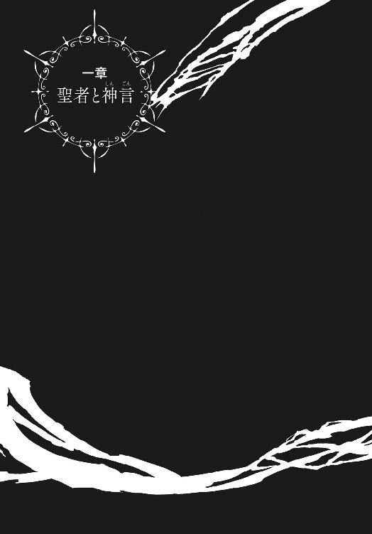

| 六花の勇者 ５ (ダッシュエックス文庫DIGITAL) | |
| 山形石雄 | |
| (2014) | |
この本は縦書きでレイアウトされています。
また、ご覧になる機種により、表示の差が認められることがあります。
 ダッシュエックス文庫DIGITAL
ダッシュエックス文庫DIGITAL
六花の勇者 ５
山形石雄

これまでのあらすじ
闇の底から『魔神』が目覚めるとき、
運命の神は六人の勇者を選び出し、世界を救う力を授ける。
地上最強を自称する少年アドレットは、その『六花の勇者』の一人に選ばれ、
魔神復活を阻止するため戦いへ向かう。
だが、約束の地に集った勇者は、なぜか七人いた。
七人のうち誰か一人が敵であることに気づいた勇者たちは疑心暗鬼に陥るが、
アドレットを中心に、その知略と聖者の力を駆使して謎を少しずつ解明していく。
凶魔の統率者の一体であるテグネウの策略の一つ、「黒の徒花」と呼ばれる聖具の存在が
六花の勇者を脅かす中、さらに明らかになる事実とは...？
イラスト／宮城
プロローグ 徒花を待ちながら
地面の底に二体の凶魔がいた。土がむき出しになった、五メートル四方ほどの小さな空間。その中央には一組のテーブルと椅子が置かれている。一体の凶魔は粗末なテーブルの上にいる。もう一体は、椅子に腰かけて足を組んでいる。
魔神の目覚めから、十三日目。地上ではうっすらと、夜が明けている時刻だ。
「もうすぐだよ。フレミーがあと少しで、ぼくのところに帰ってくる」
テーブルの上に置かれたイチジクの実がぱっくりと裂け、そこに小さな口ができた。甲高い声で、テグネウが言った。それを聞いているのは、三枚の羽を持つ二足歩行のトカゲの凶魔。普段テグネウが、自らの肉体として用いている名無しの凶魔だ。
つい先ほど、彼らのもとに伝令の凶魔がやってきた。六花の勇者を閉じ込めていた霧幻結界は解かれた。そして六花たちに襲われていたナッシェタニアが、一人敗走していくのが確認されたという。その後もう一人の六花の勇者が現れ、紋章を持った七人は、テグネウの思惑通り無事に合流したそうだ。
「ひと安心だよ。危うくぼくの策を台無しにされるところだった。まさか先手を打たれるとは思ってなかったよ」
「おそラく、ドズー陣営でシょうね」
「当然だろう。カーグイックにあんな罠を仕掛ける知恵はないからね。それにしてもドズーは、どこから偽の紋章を手に入れたんだろうね。不思議だね」
テグネウはくす、と笑う。
「まあいいさ。ともかく、危機は乗り切ったんだ。フレミーに再会できる幸せを、今は喜ぼう」
三枚羽の凶魔は静かに言った。
「楽しミですか、テグネウ様」
「ああ、早くフレミーに会いたいよ。会って顔が見たい。半年ぶりの彼女は、どんな表情をぼくに見せてくれるんだろう。ぼくがどれだけ楽しみにしていたかは、君も知っているだろう」
テグネウは興奮しているようだった。情熱を抑えきれないかのように、誰に話すともなく語り始めた。
「ぼくはね、人の顔が好きだ。人の顔を見るのが好きだ。顔こそ人間の持つ最高の器官だよ。人の顔は、どんな物語よりも刺激的で、どんな哲学書よりも示唆に富んでいる。
笑顔はつまらない。安らぎに価値はない。美しいのは苦しみ、悲しみ、そして悩み悶える人間の顔だ。それこそが人間の魂の有様を映し出し、ぼくの心を満たしてくれる」
テグネウの体から生える蔓が、せわしなく動いている。
「ぼくは人間の顔が見たい。最高の絶望を、最悪の苦悩を、この目で見てみたい。この思いに比べたら、魔神を復活させることなんて、とるに足りない些細なことだよ」
そう言ってテグネウは、肩をすくめるように蔓を動かした。
「おっと、失言。他の凶魔たちには内緒にしておいてくれよ」
三枚羽の凶魔にとっては頷くまでもない。長年、テグネウが操る肉体となっていた彼だ。テグネウの心の中は誰よりもよく知っていた。
テグネウは、魔神に忠誠を尽くしてなどいない。彼は自分の楽しみのためだけに戦っている。人を、凶魔を、自ら以外の全ての存在を苦しめるために、その顔を見るために生きている。
テグネウを信じる配下の凶魔たちには、絶対の秘密だ。
「フレミーは、実に素晴らしい顔を見せてくれたよ。フレミーを処断した時に、彼女が見せてくれた顔は、きっと生涯忘れられないだろう。愛する家族が、本当は自分を駒としか思っていないと知った時の絶望は、こたえられなかった。
だけどぼくは期待している。フレミーは必ず、もっと素晴らしい顔をぼくに見せてくれるはずだ。ここから始まる六花との戦いが、彼女をさらなる絶望に追い込んでくれる」
さすがに、少し興奮しすぎだと三枚羽の凶魔は思った。忠言も自分の仕事だ。
「フレミーにばかり気をとられテいてはいけマせん。勝利を目指すことをお忘れナく」
「そうだね。そう、忘れちゃいけない。負けてしまったら全て終わりだ」
六花を倒し、ドズーとカーグイックを配下におさめれば、もはやテグネウの目的を阻むものは存在しなくなる。そのあとにやってくるのは、テグネウのための世界だ。
テグネウは魔神を手中に収めるつもりだ。全ての障害を排除すれば、それは決して不可能ではない。全ての凶魔はテグネウのための道具となるだろう。人間たちはテグネウを楽しませるためだけに、絶望し、苦悩し続ける存在となるだろう。
その未来が訪れるか否か。それは黒の徒花の行く末にかかっている。そしてテグネウが送り込んだ、七人目の両肩にかかっている。
だが、彼らの活躍はまだまだ先のことだろう。まずはモーラ・チェスターだ。彼女に七人目の汚名を着せて死なせる。そのための準備は、すでに整っている。
三枚羽の凶魔がそのことについて話そうとした時、テグネウは言った。
「フレミーをどう殺すか、それは非常に難しい問題だね。ぼくがこの手で殺すか、六花に殺させるか、様々な方法はある。どれが一番、彼女を絶望させられるかね」
テグネウの心はまだ、フレミーに捉われているようだ。
「どう殺しても、フレミーは素晴らしい顔を見せてくれるだろう。だけどそれより、期待していることがある。
ぼくはね、フレミーを自殺させようと思っているんだ。きっとそれが、一番素敵な死に顔になるはずなんだ。死ぬ以外にどんな選択肢も存在しない、最悪の状況に追い込みたいと考えているんだ」
テグネウは笑いながら言った。
「もちろん、六花との戦いがどう展開するかはわからない。けれども、フレミーを自殺させることは十分に可能だと思っている。いや.........」
ぱっくりと裂けたテグネウの口が、おぞましい笑みを浮かべた。
「七人目が、必ずフレミーを自殺に追い込んでくれるはずだよ」
すでに地上では、夜は明けているだろう。七人目と六花の勇者は、まだ来ない。テグネウと六花の戦いが始まるまでは、もう少し時間がかかるようだ。
一章 聖者と神言

森を走りながらアドレットは、ふと考えた。
なんだって俺は、こんなにもフレミーのことを大事に思っているのだろう。
魔神の目覚めから十八日目、日はすでに沈み始めていた。
アドレットは魔哭領中央北部に位置する、森の中を走っている。後ろにはハンスとゴルドフ、ロロニアとフレミーがいる。彼らは昏倒の山地と呼ばれる地を目指している。ドズーとナッシェタニアはそこに、戦いの趨勢を決める重要な手掛かりがあると言った。
テグネウが極秘のうちに建造した、〈運命〉の神を祭る神殿が、山地の中にある。そしてそこでテグネウは、黒の徒花と呼ばれる、六花抹殺のための切り札を造りだしたという。
その情報の真偽を確かめること、そして実在するならば黒の徒花の正体を探ること。それがアドレットたちの今の目的だ。
神殿に続く道を塞いでいた、特質凶具の九番を討ち果たしたのは、三十分ほど前のことだ。モーラとチャモ、ドズーとナッシェタニアは森の奥でアドレットたちの到着を待っている。
森の中には、屍兵の死体がそこかしこに転がっている。その中にはアドレットの故郷の村人もいるだろう。しかし今は彼らを弔う暇も、死を悼む暇もない。
「.........アドレット、道をそれているわ」
後ろからフレミーの声がした。しかしアドレットは、反応せずまっすぐに走り続ける。
「アドレット」
二度目の呼びかけで、アドレットはようやく我に返る。
「聞いているの、道をそれていると言っているのよ」
アドレットは頭の中の地図と地形を照らし合わせ、合流地点に向かう道から少しそれていることに気がついた。アドレットは進路を変え、走り続ける。
「どうしたの、様子がおかしいわ」
フレミーが言った。アドレットはなんでもないと、首を小さく横に振った。
彼女の言うとおり、冷静ではない。ほんの少し前、アドレットの故郷の人々が、全員死んだ。
そして、アドレットの友ライナも死んだ。故郷の村人が連れ去られた悪夢の日、アドレットの命を助けたのが彼だった。幼い頃、気弱だったアドレットにとっては憧れの存在だった。彼は屍兵に変えられたあとも生き続け、そして六花の勇者に情報を残すために戦っていた。
その友も、アドレットの腕の中で死んだ。もう少し早ければ、助けられたかもしれないのに。
「フレミーさん、今は、そっとしておいてあげてください。辛いことがあったんです」
ロロニアが言う。
「それより、何が、起きたのかは、説明、してもらうぞ」
「にゃ。モーラたちと合流したらにゃ」
ゴルドフが尋ね、ハンスが答える。だが、アドレットが悩んでいる理由は、友の死だけではない。ライナが最後に残した一つの情報が、アドレットを苦しめていた。
ライナは最後に伝えた。テグネウが造りだした聖具、黒の徒花の正体を。
『黒の徒花は、人間の姿をした聖具。白い髪と額に一本の角を持つ少女。恐ろしく冷たい目をした少女』
それに当てはまる少女を、アドレットは一人しか知らない。
ライナの情報が真実と確定したわけではない。また、ライナが言った人物がフレミーであるという証拠もない。他に冷たい目をした額に角のある少女がいるのかもしれない。
しかし、ライナの言葉が噓だったとは考えられない。状況から考えて、フレミーの他に黒の徒花がいるとも思えない。
もしフレミーが黒の徒花だったら。そしてフレミーを殺さなければ、世界を救えないのだとしたら。アドレットはそうしなければいけない。なぜなら彼は、六花の勇者だからだ。世界を救う定めを、その両肩に背負っているからだ。
だがアドレットは、それが耐えがたく辛かった。身を引き裂かれるほど苦しかった。フレミーを死なせるぐらいなら、世界を救う定めなど放り出してしまいたかった。
黒の徒花が自分自身なら、世界を守るために命を捨てることなどためらわない。他の仲間が黒の徒花なら、悩みはするだろうがここまで苦しくはなかっただろう。
だがフレミーは違う。アドレットにとって、フレミーは特別な存在だった。最初に出会った時から、ずっと。
考えてみれば、フレミーとの思い出にはろくなものがない。命を助けられたことはあるが、銃口を向けられたことも一度や二度ではない。
好意の言葉をかければ冷たくあしらわれた。心配すれば、うっとうしいと拒絶された。嫌いだとはっきり口に出されたことも何度もある。
ハンスの言葉ではないが、女性なら他にもいる。ロロニアは友達だ。修業や旅路の中で、知り合った女性もいないわけではない。だがフレミーの存在は、他の誰とも比べられなかった。
アドレットは、心の中で祈る。フレミーが黒の徒花ではないことを。だがその願いが、かないそうにないことも予感していた。
「早速始まってるにゃあ」
とハンスが言った。森を抜けた先から、凶魔たちの叫び声が聞こえてくる。モーラたちの待つ合流地点で戦いが起きているのだ。
神殿に向かう道は、凶具の九番と屍兵たちに塞がれていた。彼が倒れた今、周囲にいる凶魔たちは六花とドズーたちを止めるために集結しているだろう。
さらにテグネウが率いる主力の軍勢もこちらに向かっているはずだ。到着は深夜以降になると予想しているが、どうなるかはわからない。ぐずぐずしていたら、取り囲まれて殲滅されるのは目に見えている。
急がなければいけない。行く先に何があるとしても、歩みを止めるわけにはいかない。
「今夜は一晩中、戦い続けることになりそうね」
フレミーがそう言って銃を抜いた。目についた一体の凶魔の頭を撃ち抜く。ハンスとゴルドフもそれぞれの武器を抜き、モーラたちに加勢していく。
十五体ほどの凶魔を瞬く間に倒し、八人と一体はすぐさま走り出す。互いの無事を喜んでいる余裕はない。
「遅かったな。何をしていたのじゃ」
走りながらモーラが言った。凶具の九番を倒したらすぐに合流するはずだった。
「どうせアホ牛が足引っ張ったんでしょ。ぶん殴るからこっち来てよ」
とチャモが言う。ロロニアはひい、と声を上げる。
フレミーとゴルドフ、ドズーとナッシェタニアも疑問の目を向けている。説明しないわけにはいかないな、とアドレットは思った。
だがアドレットを悩ませているのは、まさにそれだ。ライナの言葉を、仲間たちに伝えるべきなのだろうか。
情報を隠すことは極力避けたい。無用の混乱を招き、互いを疑い合うことになる。だが、伝えればフレミーが、この場で殺される可能性すらある。
アドレットがためらっていると、不意にハンスが言った。
「にゃひひひひ、びっくりしただよ。アドレットが急にフレミーに抱きついたにゃ」
「は？」
モーラが素っ頓狂な声を上げる。
「そいでむりやり近くの繁みに連れ込もうとしたにゃよ。おらもロロニアも止めただが、アドレットはちっともいうこと聞かねえだ。しまいにゃ服まで脱ぎ始めるから、おらぶったまげて口もきけなくなっただよ」
「おい、事実を捏造するな」
モーラは呆れ果てて口を開けている。フレミーが苛立ちの視線をハンスに向ける。
「え？ 服を脱いでどうするの？ アドレット怪我してたの？」
話を理解できていないチャモだけが首をひねっている。
「まじめに話をしてくださいませんか」
ドズーが言うと、ハンスは肩をすくめた。そしてちらりとアドレットを見る。お前が話せ、と目で語っていた。
ハンスが考えていることはわかっている。情報を隠して、フレミーを泳がせるつもりなのだろう。アドレットも同じ考えだ。
フレミーが黒の徒花であるか否かに加えて、重要な問題はもう一つある。フレミー自身がどこまで知っているのかだ。彼女は自分が黒の徒花であることを知らないのだろうか。それとも正体を隠しているのだろうか。
フレミーが知っていて隠しているなら、彼女は完全に敵ということだ。
だがもしフレミーが知らないのならば、事情は変わる。フレミーはテグネウに利用されて、自分の正体を知らないまま六花に同行するよう仕向けられたということだ。だとすればフレミーも、黒の徒花を止めるために力を尽くしてくれるはずだ。
ひとまず、情報の一部を隠しておく。それに対するフレミーの反応を見極める。アドレットの腹は決まった。
「.........ああ、話すよ」
走りながらアドレットは森の中で起きたことを、仲間たちに語り始める。その間アドレットは、フレミーの表情をさりげなく観察していた。
屍兵の中に生きている人がいたこと。その人物は黒の徒花について知っていたということ。そのことに、ロロニアだけが気づいたということ。その人物は、アドレットの親友だったこと。そして彼から聞いた、黒の徒花の持つ機能。それらをアドレットは簡潔に説明した。
ただ一つ語らなかったことがある。ライナの最期の言葉、黒の徒花は人の姿をした聖具で、白い髪と額に角を持った少女であることだ。
「ライナ.........その屍兵は、まだ何かを伝えようとしていたよ。だけど、もうライナは声が出なくなっていたんだ。ロロニアも必死に、治療を試みた。だが.........」
そう言ってアドレットは首を横に振る。走る仲間たちに沈黙が落ちる。
「気を落とすな.........とは到底言えぬな。アドレットよ、辛いだろうが、どうか耐えてくれ」
モーラが、アドレットを慰める。
「その勇敢な青年に、敬意を表します」
仲間たちが立ち止まる。ナッシェタニアが、胸に手を当てて言った。ゴルドフもそれに倣う。ドズーは後足で立ち、前足を軽く上げて、弔意を表した。チャモは何を言えばいいのかわからない、といった顔で俯いている。
フレミーは、何かを考えながらアドレットを見つめている。
「どうした、フレミー」
「.........ごめんなさい。人が死んだ時、どんな言葉をかけるものなのか、教わっていないの」
「そうか、気にするな」
アドレットはそう言って、フレミーの表情を見つめる。アドレットを心配しているのか、それとも別のことを考えているのか。判断ができない。
ハンスも視界の端でフレミーの様子を見ている。彼は何かを読み取れたのだろうか。
「それより、徒花のことだ。伝えてくれた真実を生かさなきゃ、ライナが浮かばれねえ」
アドレットの言葉に頷き、仲間たちはまた走り出す。
「〈運命〉の力を奪い取るか.........そんな聖具が存在しうるのか？ 信じられぬ」
モーラが青ざめながら言った。アドレットが尋ねる。
「なぜそう思う？」
「理由が二つある。まず聖具から力を奪い取る方法など、聞いたこともない。神の力を操れるのは、神をその身に宿した本人だけじゃ。聖具を造りだして力を貸し与えることはできても、聖者の力を奪うなどということは.........」
「可能なのでしょう。テグネウには」
モーラの説明を遮り、ドズーが言う。
その口調は、予想を口にするようなあやふやなものではない。テグネウはそれを実行したと、ドズーは確信しているようだった。
「なぜわかる。なぜそれを知っている」
とアドレットは聞いた。ドズーは万天神殿で聖者の術を極めたモーラより、明らかに多くを知っている。
「ハユハのおかげです。今言えるのは、それだけです」
おかしい、とアドレットは思った。確かにドズーはハユハの力で、過去の出来事を探ることはできた。だが彼らが調べたのは、魔神の正体についてのはずだ。なぜ聖者の力に関する知識まで持っている。
それに一輪の聖者は、万天神殿の長に知っていること全てを伝えたはずだ。たとえ過去を見たところで、モーラより多くの知識を得ているはずがない。一輪の聖者は、万天神殿に全てを伝えていなかったということか。だとしたら、その理由は何か。
だが今は、黒の徒花のこと、そしてフレミーのことだ。
「アドレットさん、ロロニアさん、ハンスさん。屍兵から聞いたのはそれだけですか？」
とドズーが言った。
「ああ、そうだ」
「黒の徒花は何でできた聖具なのか、それが最も重要なのですが.........。形代になったのは宝石か、神言の書か、あるいは結界か、紋章か、それとも花か.........」
「ライナは、きっとそれを伝えきれずに死んだんだ」
「悔やまれます。ロロニアさんの言葉を信じるべきでした。私の失態です。私もその場にいたのですから」
「お前がしくじったわけじゃない。俺もロロニアの言うことをほとんど信じてなかった」
ドズーにはアドレットを疑う様子はない。隠蔽はばれていないようだ。
「その情報は、確かなものなの？」
とフレミーが言った。ハンスが答える。
「少なくとも、テグネウの仕込んだブラフとは考えられねえにゃあ。おらたちが屍兵を見つけられたのは、偶然に偶然が重なったからだよ。もしブラフなら、簡単に見つけられる場所に情報を置いておくにゃ」
さらにロロニアが言う。
「そ、それに、ええと、あの人はテグネウに味方するような人には、見えなかったです」
「そう」
フレミーは気のない声で答える。
「だけどそもそも、その屍兵が間違った情報を摑んでいた可能性もあるわ。テグネウは私にも、他の凶魔たちにも噓をついていた。自分の本当の考えを隠すために。屍兵はその噓に騙されているのかもしれない」
「そうかもにゃ」
ハンスが言った。その可能性は、アドレットも考慮している。
「その屍兵が、どうやって情報を得たのか。それは聞いていないのね」
「聞く前に、死んじまっただよ。もう少し早く見つけていれば、間に合ったんだがにゃあ」
「.........悔やまれるわね、本当に」
フレミーは何かを考え始める。その表情は、本心から情報を得られなかったことを残念がっているように見えた。フレミーは無表情だが、全く感情を表に出さないわけではない。
「ですがこの情報だけでは何も行動を起こすことはできません。やはり、〈運命〉の神殿に行かなければ」
ドズーが言う。
「当然よ。急ぎましょう」
と、フレミーは言った。その様子に不自然なところはない。少しでも黒の徒花について情報を集めようと、必死になっているだけのように見える。
「おばちゃん。何をぼさっとしてんの」
チャモが唐突に言った。千里眼の力で周囲を探っていたモーラが戸惑う。
「おばちゃん、聖具を探す術使えるじゃん。それで黒の徒花見つけてよ」
「そ、そうじゃった。すまぬ」
「しゃきっとしてよ、もう」
モーラが、慌てて神言を唱える。かすかにモーラの目が輝く。その目で仲間たちと、周囲をくまなく観察していく。
「黒の徒花は、六花のそばになければ効力を発揮できないそうですね。だとすれば、七人目が所持しているということでしょうか」
ナッシェタニアの言葉に、チャモが続く。
「七人目の役目は、黒の徒花を持ってチャモたちに近づくことなのかな。黒の徒花を持ってれば、なんにもしなくても、紋章が消えてチャモたちは全滅するんだもんね.........」
「私以外はね」
フレミーが言う。その時アドレットは、チャモが青ざめていることに気づく。
「大丈夫か、チャモ」
「.........チャモ、怖くなってきたよ。敵が、直接攻撃してくるなら、チャモは絶対負けないよ。でも、おなかの中の宝石とか、紋章を消す聖具とか.........そんなのチャモの力じゃどうしようもないもん」
「落ち着け、チャモ」
「平気だよ、平気だもん」
チャモは自分の頰を何度も叩く。怯えているのは明らかだ。
「おばちゃん、どうなの。まだ黒の徒花は見つからないの？」
「今見える聖具の痕跡は、六花の紋章の八つだけじゃ。この場にも、周囲にも、通ってきた道にも何もない」
「黒の徒花はここにはないってこと？ じゃあ、今はまだ平気なのかな」
チャモが首をかしげる。続いてアドレットが言う。
「確か、使用されていない聖具は見つけられないんだよな」
「そうじゃな。見つけられるのは、今使われているものと、過去にその場で使われたものだけじゃ」
「黒の徒花の能力がばれて、慌てて使うのをやめたのかな」
チャモが言う。
「おそらくテグネウは、聖具を発見する術の存在を知っているはずです。何らかの対策をとっているでしょう」
ドズーが言った。たしかに、テグネウの最大の切り札が、術一つで見つけられるものとは考えられない。アドレットが尋ねる。
「モーラ。痕跡を見つからないようにする方法はあるのか？」
「ないとは言えん。過去様々な犯罪者が、それを試みた。いくつかは成功したこともあるのかもしれぬ。しかし、黒の徒花が何を形代とした聖具なのかがわからぬことには.........」
モーラがため息をつく。
アドレットは、昨日のことを思い出す。アドレットがゴルドフを探す時に、聖具を探す術を貸し与えられた。その時にフレミーを見たが、異常はなかった。フレミーは黒の徒花ではないのか。発動していないだけなのか。それとも、発動していても見抜けないのか。それは今の時点ではわからない。
「ともかくモーラさん。この先は聖具を探す術を、絶え間なく使い続けてください。絶対とは言えませんが、黒の徒花の力を防ぐためには、効果があるでしょう」
「うむ、千里眼の力と同時に使うのは難しくない。任せておけ」
モーラは頷き、走り続ける。
「ロロニア」
フレミーが、冷たい声の中にほんの少しだけ優しさを込めて話しかける。
「よくやってくれたわ。ありがとう。あなたがいなければ、この情報は得られなかった」
「は、はい。褒めてもらえて、嬉しいです」
ロロニアはぎこちなく笑う。
アドレットは思う。もしフレミーが、自分が黒の徒花であることを知っているなら、こんな言葉をかけるだろうか。一番重要な情報が暴かれなかったことで、多少なりとも安堵する気配を見せるはずだ。しかしフレミーの様子は普段と変わりない。
やはりフレミーは、自分の正体を知らないのだ。少なくともアドレットにはそう見えた。
その時、モーラが言った。
「三十体ほどの凶魔が後ろから追ってくるぞ。山の端にも凶魔が待ち構えている」
アドレットは舌打ちする。しばらく敵の襲撃はなかったが、いよいよ六花たちを迎撃する態勢を整えたようだ。
「策は不要にゃ。蹴散らすべよ」
ハンスがそう言って、身をひるがえして後方の凶魔に襲い掛かる。戦いが始まった。
それからおよそ二時間。道中は戦いに次ぐ戦いだった。凶魔たちは命を捨てて、六花たちの足を止めに来ていた。襲い掛かっては退き、進もうとすればまた襲い掛かる。アドレットたちはその都度、敵の数を減らしながら前へ前へと進んでいった。
最前線を進むのはゴルドフとロロニアだ。無表情で敵を蹴散らすゴルドフと、下劣な罵倒を呟きながら戦うロロニアの姿は、味方としてもいささか不気味である。
「フレミー、危ねえ！」
アドレットは列の後方にいる。敵を狙撃していたフレミーの背中に、蛇の凶魔が襲い掛かる。アドレットは横合いから凶魔の首をはねる。二つに切り裂いても動き回る凶魔に麻痺針を突き刺して黙らせた。
「助かるわ」
「背中は任せろ」
そう言ってアドレットは、フレミーの背中に張りついて周囲を警戒する。狙っている凶魔は多い。アドレットは投げ針と剣でそれらをけん制していく。
アドレットは戦いながら考えていた。周囲に注意を払い、剣を振るいながらも思考を続けるのは、並の戦士には難しいだろう。だがアドレットはそれができるよう訓練を積んできた。それに、今までの戦いはそんな状況の連続だったのだ。いい加減に、慣れてくる。
やはり、フレミーが自分が黒の徒花だと知っていたとは、考えにくい。
フレミーは霧幻結界ではアドレットの命を助けた。ナッシェタニアの正体を暴くことにも協力してくれた。
魔哭領に突入してからも、フレミーは六花に貢献してきた。テグネウから逃げる時は殿を引き受け、斬指の森では先頭に立って索敵を行った。凶具の九番を狙撃したのもフレミーだ。モーラやゴルドフ、ロロニアのように仲間を混乱させるような行動をとったこともない。
だがこれらはフレミーが自分の正体を知らなかった証拠にはならない。霧幻結界では、もう一人の七人目の正体を暴くことを優先しただけ。魔哭領での戦いぶりも、疑われないよう努めていただけとも考えられる。
不自然なのは、霧幻結界に入る前、アドレットに出会った時のことだ。
フレミーは言った。他の六花とは合流しない。仲間たちに出会ったら、殺されると。その彼女を、アドレットがむりやり同行させたのだ。
もしフレミーが黒の徒花で、仲間たちを殺すつもりでいたなら、極めて不合理な行動だ。六花のそばにいなければ、黒の徒花の力も使えないのだから。アドレットが引きとめていなかったら、フレミーはどうするつもりだったのだろうか。
それらを考えると、やはりフレミーは自分の正体を知らなかったと考えるしかない。
「アドレット。何かを考えているようだけど、戦いに集中してもらわないと困るわ」
「心配いらねえよ。俺は考えながら戦える。地上最強だからな」
「器用ね。それと、相変わらず自信過剰ね」
フレミーがため息をつく。
「ほどほどにしておいて。油断して、怪我をされても困るから」
「皆、ここから道が険しくなる。明かりをつけよ」
仲間たちにモーラが言った。すでに日は落ちている。かすかな西日だけで進んでいたがそれも限界のようだ。アドレットは腰の袋にある光の宝石に触れ、教わった神言を唱える。発見されるのを少しでも防ぐため、光はなるべく弱くした。
凶魔たちには闇も関係ない。指揮官らしき凶魔の一声と共に、前方から一斉に襲ってくる。
「突破するぞ！」
ゴルドフが凶魔の群れに単身突撃していく。鎧と屈強な肉体に物を言わせ、凶魔の攻撃を受け止めながら蹴散らしていく。
戦いながらもアドレットは考え続ける。フレミーは自分の正体を知らない。だとしたらなおさら、アドレットの心は苦しくなる。
もしもフレミーが完全に敵であれば、アドレットはフレミーを殺せるだろう。彼女との思い出も、少しだけ心が通じ合ったと思ったことも、夢であったと忘れられる。
しかしフレミーが、共に戦う仲間だったなら。今まで語った言葉の全てが真実だったなら。
「.........くそ」
殺せない。どうしても、アドレットはフレミーを殺せない。それが世界への裏切りであるとしても。自身の死を招くとしても。そして、人生の全てを懸けた復讐を阻むとわかっていてもだ。
なぜなのだろう。アドレットは自分の心に問いかける。
最初に出会った時から、アドレットはフレミーが気にかかっていた。子犬を抱きしめる彼女を見ただけで、彼の心は捕らわれた。その時彼女は、ひどく傷ついているように見えた。抱きしめられていた子犬よりもずっと、彼女のほうが苦しげだった。
アドレットの恋は、ときめきではなく、胸の痛みから始まった。
その後霧幻結界で、彼女の過去を聞いた。テグネウと母に、忠誠を尽くしていたこと。六花候補となる戦士たちを暗殺していたこと。そしてチャモに敗れるや否や、用済みと断じられて捨てられたこと。
仲間から逃げたアドレットに、フレミーは復讐の理由を語った。憎いのはフレミーを見捨てたからでも、殺そうとしたからでもない。テグネウや母親、仲間たちがフレミーの愛を利用していたからだ。偽りの愛でフレミーを騙し続けていたからだと、彼女は語った。
『許せないのは、殺そうとしたことではない。私を愛するふりをしたことよ』
そう言った時の、彼女の表情が忘れられない。
フレミーは憎悪だけを支えに生きている。帰る場所を失った孤独だけが、彼女を包んでいる。そして彼女の目は絶望だけを映している。
その辛さが、アドレットには痛いほどわかる。彼もまたフレミーと同種の存在だったからだ。復讐の他に生きる理由を失った、孤独な殺戮者だったからだ。
しかし、アドレットは思う。絶望と憎悪だけが、フレミーの本当の心ではないと。
子犬を抱きしめたあの手が、傷ついたアドレットを救った手が、フレミーの本当の姿をアドレットに見せた。
彼女は本来、心優しく善良な少女なのだ。それがアドレットには、わかっている。
アドレットは、本当のフレミーが見てみたい。今は、絶望と憎悪に押し潰されて見えなくなっている本当の彼女。フレミー自身も、とうに死んだと思っている本当の彼女。それを解放してやりたい。
アドレットは理解する。これは、恋であると同時に夢なのだ。フレミーを幸せに生きさせることが、今の自分の夢なのだ。
だがその夢も、もうじき潰えるのかもしれない。フレミーが黒の徒花であることが確定したら、そしてフレミーを殺す以外に黒の徒花を止める方法がないとしたら。
「〈運命〉の神殿を見つけた！」
その時モーラの声が響いた。列の中央で、彼女は千里眼の力を使っている。その能力は、彼女自身がいる山の中でのみ効力がある。
「神殿は、この山の中腹じゃ。皆、気張れ！ あとほんのわずかだ！」
仲間たちは頷き、足を速めて坂を上る。
「凶魔の状況は？」
「今探っておる。神殿の中には.........いないようじゃ。全ての凶魔が迎撃に出向いている。この辺りの凶魔を片づけたら、あとは邪魔をするものはないはず」
アドレットは空を見る。夜はまだ浅い。テグネウ率いる本隊がここに来るまで、まだかかるだろう。中を調べる時間は十分にある。
「ゴルドフ、チャモ。モーラを守るべよ。他で凶魔を掃討するにゃ」
ハンスの言葉に、ひと塊になって動いていた仲間たちが一斉に散開する。
「モーラは、戦う必要はねえだ。神殿の中を調べておけ。聖具の発動にも注意するだよ」
モーラは頷き、千里眼の能力と聖具を探す力に集中する。
アドレットは残った凶魔に毒針を撃ちこんでいく。その時後ろから、ハンスが追いついてきた。
何か話すことがあるのだな、とアドレットは思った。
好都合だった。アドレットもハンスに話したいことがある。彼もライナの本当の遺言を聞いている。この先、フレミーをどうするか、意見をまとめておかなければいけない。
「おめえはどう見る」
ハンスは聞こえるか聞こえないかの、ほんの小さな声で言った。大きな声で話せば、千里眼を使うモーラに聞かれるかもしれないからだ。
「フレミーに不自然な様子はない。これまでのことを考えても、フレミーは自分が黒の徒花だと知らないのだと俺は考える」
アドレットは確信を持って答えた。しかしハンスは、冷たい目でアドレットを見据えた。いつもひょうひょうとしていた彼が、こんな表情を見せたことは今までにない。
「初めてにゃよ」
「.........何がだ」
「初めておめえに、失望しただよ」
その言葉にアドレットは、少なからず衝撃を受けた。馬鹿にされたことも、からかわれたことも数えきれないほどある。しかし、今の言葉はそれとは意味が違っていた。
「神殿に向かう道中に入ってから、フレミーは何かを悩んでるだ。そして悩んでいることを、おらたちにばれないようにしてる。おめえの目はそれすらわからないほど曇ってただか」
「何を悩んでいるっていうんだ」
「知らねえにゃよ」
ハンスはため息をついた。
「なかなかやる奴だと思ってたがにゃ.........所詮はガキだべ」
ハンスは言った。彼は暗殺者として様々な標的と、あるいは依頼者と渡り合ってきた。対してアドレットは、人生の半分近くをアトロの山で暮らしてきた。経験の差、人を見る目の差は歴然だ。
だがアドレットは、フレミーと多少なりとも心がつながっている確信がある。それはハンスにはないものだ。ハンスが何と言おうと、アドレットはフレミーを疑わない。
「悩んでいるのは確かだべ。でも、敵という確信は持ててねえだよ。もう少し、フレミーは泳がせたほうがいいだにゃ」
アドレットも同じ考えだった。〈運命〉の神殿に何があるか。秘密を明かすのは、それを見極めてからでも遅くはない。
あまり長く話していると、他の仲間たちに疑われる。アドレットはハンスから離れようかと思った。その時、ハンスが静かに言った。
「一つ言っておくだよ。ロロニアにはあとで伝えておく。今は話が通じねえからにゃ」
アドレットは前方で罵詈雑言をまき散らすロロニアを見る。今の彼女と話をするのは難しいだろう。
「フレミーが黒の徒花だと確定したら、おらは斬るだよ」
アドレットは動揺を押し殺しながら反論する。
「フレミーは自分が.........」
「自分が黒の徒花だと知らねえ可能性もある。それでもおらは斬るだ」
ハンスに言葉を先回りされる。
「止めるでねえぞ、アドレット」
もう話すことは何もない、とでも言うようにハンスは立ち去っていく。アドレットはその背中を見つめながら、静かに決意を固めていた。
もしも、フレミーが自分が黒の徒花だと知っていて、噓をついていたのなら殺す。それについてはハンスと同じ考えだ。
だがもしも、フレミーがこのことを知らず、ただ利用されているだけならば、アドレットはフレミーを守る。彼女を死なせず、仲間も殺させない、その道を探すと。
おそらく危険はある。全滅の恐れもあるだろう。だがアドレットは、自分はその道以外を選べないと覚悟した。冷酷なハンスの言葉が、逆にアドレットの決意を促していた。
フレミーを守る方法はきっとある。〈運命〉の神殿にたどり着けば、黒の徒花の力を封じる方法が見つかるかもしれない。力が吸収されるのを阻止する方法があるかもしれない。それならフレミーを殺す必要はなくなる。
他にも手はある。ライナは言っていたではないか。黒の徒花は六花のそばにいなければ効力を発揮しないという。つまり、フレミーに別行動をとってもらえばいいだけだ。
一人にするのは心配だが、フレミーは強い。生き残ることは難しくないだろう。
戦力が一人欠けるのは痛手だが、囮や陽動の役割を任せることもできる。大きな問題にはならないだろう。彼女を守る方法は、他にも見つかるかもしれない。
フレミーを幸せにするのは、俺の夢なのだ。世界で一番大切な人の、笑っている顔を知らずにいる。そんなことには耐えられない。
「俺は.........地上最強の男だ」
アドレットは呟いた。地上最強の男が、一人の少女を幸せにする夢をかなえられないわけがない。
神殿まで残り数百メートル。向かってくる凶魔はもういない。先頭を行くロロニアは、モーラが示した道を一直線に走っている。その時、モーラが山彦の力を使って声をかけてきた。
「アドレット、妙じゃ」
モーラの声に耳を澄ませる。
「凶魔たちの動きが、今までと違う。我々から離れ、隠れている者がいるぞ」
おかしいな、とアドレットは思った。これまでの戦いで、全ての凶魔は真正面から六花に向かって突撃してきた。六花の足止めだけを目的にしているように見えた。逃げ回る者が現れるとは、少し予想外だ。
「どう思う、指示を出してくれ」
「.........罠を仕掛けている、としか考えられねえな。俺たちが神殿に突入してから、調査を妨害するつもりかもしれねえ。殲滅だ。神殿に入るのはそれからでいい。
隠れている凶魔の位置を探り、皆に伝えてくれ」
モーラが全員に山彦で指示を出していく。仲間たちはばらばらに散開し、凶魔たちを殲滅していく。
アドレットも、一体の凶魔と斬り結ぶ。愚直に突っ込んでくるだけだった今までの凶魔とは違う。アドレットの攻撃に傷つきながら、後退していく。何か知恵のある者に統率されている動きだ、とアドレットは感じた。
麻痺針を投げて敵の動きを止めた時、背後から銃声が聞こえた。銃弾が凶魔の頭を砕く。
「なんだ、加勢ならいらないぜ」
アドレットは後ろを振り返らずに言う。いつの間にかフレミーが、そばに近づいていた。何か用だろうか、とアドレットは思った。
「屍兵のことは、もう平気なの？」
「ああ。考えてる暇はねえからな。死んだライナのためにも、前に進まなきゃいけねえ」
「そう、よかったわ」
次の瞬間、フレミーは単刀直入に切り込んできた。
「さっきから、何を考えているの？」
別の凶魔が近くにいることを、モーラが伝えてくる。アドレットはそちらに向かいながら、平静を装って答える。
「いろいろ考えているに決まってるだろ。黒の徒花は何でできていて、どこにあるのか。七人目は誰か。神殿に着いたあと、どうするか。そういうことだよ」
「それだけじゃなさそうだから、聞いているのだけど」
フレミーが銃弾を放ち、一体の凶魔を足止めする。
「そりゃあ、決まってるだろ。どうすればお前を幸せにできるか、考えてるよ」
「暇なのね」
と、フレミーは冷たい声で言った。
「ずっと考えてるさ。最初に会った時から、変わらずにな」
「別のことを考えたほうがいいわ。私の幸せなんて、考えるまでもなくわかりきっているでしょう」
「何だよ」
「復讐を果たすこと。それから静かに死ぬこと。それだけが私の幸せよ」
アドレットは沈黙した。モーラの指示のもと、二人は索敵を続ける。
「それだけとは限らねえから、俺が考えているんだ」
「私の幸せが何かは、あなたが決めることではないわ」
フレミーは冷たく突き放す。
「どうでもいいことを考えている余裕はないわ。戦いに集中して」
どうでもいいことじゃあねえだろう、とアドレットは思う。お前のことなのだから。
「悪いがやめる気はねえな。やめれそうにもねえ。俺は気がつくと、お前の幸せについて考えちまうんだよ」
「馬鹿なのね」
「俺が何を考えるかは、お前が決めることじゃあないな」
「.........そうかもしれないけれど」
二人の間に、少し気まずい空気が流れた。ロロニアの罵倒やモーラの指示が聞こえてくる。暗号らしき言葉で、凶魔たちが叫び声を上げている。その中で二人は黙り込んでいた。
「死ぬことだけが幸せじゃねえさ。言ってたじゃねえか、犬に会いたいんだろ」
「それも、もういいのよ。会ったところで、意味がない。どうせ私は死ぬのだから、最後まで飼い続けていられない」
「それでも会いたいんだろう」
「無理よ。魔哭領は広いわ。私が呼んでも、犬笛を吹いても、あの子には届かない。見つかるはずがない」
やっぱり会いたいんじゃねえか、とアドレットは思う。
「ちっぽけなことかもしれねえがな、それがお前の幸せなら、俺は全力を尽くすさ。お前は俺を、そんな気持ちにさせちまってるんだよ」
「そう。勝手にすればいい」
「約束するぜ。俺は必ず、お前を犬と再会させる。俺は地上最強の男だからな。約束は絶対に破らねえ」
くだらない、とでも言うようにフレミーは首を横に振る。
「そういえば、犬の名前はなんていうんだ」
「人間は犬に名前を付けるのね。最近になって知ったわ」
「じゃあ再会したら付けるか。そのほうがいい」
どういうわけかフレミーは苛立っているようだ。
「これだから、あなたが嫌いで嫌いでたまらないのよ。後ろから撃ってやりたいぐらい」
本当に、こいつとの思い出はろくなものがない。アドレットはそう思った。だがそれでも、フレミーを思う気持ちに何の変わりもないのが不思議なのだが。
「何を語らっているかは知らんが、そちらに二体、敵が行ったぞ。チャモが取り逃がして、そちらに逃げておる」
モーラから、声が伝わってきた。アドレットとフレミーは、周囲を警戒する。確かに先ほどから、凶魔の叫び声が聞こえてくる。暗号で他の凶魔に指示を出しているようだ。
近い、とアドレットは思う。
次の瞬間、繁みの中から二体の凶魔が飛び出してきた。一体は、中型の獅子の凶魔、もう一体はかなり小型の白いトカゲの凶魔だ。
瞬時にアドレットは麻痺針を投げ、フレミーは銃弾を放つ。どちらも外れた。
二体の凶魔は、二人の横を通過して逃げようとする。獅子の凶魔をアドレットが足止めする。そしてフレミーに言う。
「白いのは任せる！」
問題なく倒せるだろう、とアドレットは踏んでいた。だが、珍しいことが起きた。次の弾を装塡しようとしたフレミーの指から、銃弾が滑った。銃弾が地面を転がった隙に、白いトカゲの凶魔は横をすり抜けて逃げていく。
フレミーが装塡をしくじるのを、初めて見た。彼女の指の動きはいつも、目に映らないほど速く、なめらかだったのに。
フレミーの目が、白いトカゲの凶魔に釘づけになっていた。追う気配も見せていない。何かに動揺したのだろうか。
考える暇はない。アドレットは逃げた白いトカゲの凶魔を追いかけていく。
白い凶魔はひっきりなしに、何かを叫んでいる。声の調子からみて、おそらく人間の言葉も話すことができる凶魔だろう。しかしアドレットには、その言葉は聞き取れない。
その時、離れたところで戦っていたドズーが、こちらに走ってくるのが見えた。
「加勢はいらねえぞ！」
アドレットは叫んだ。
繁みと岩を越え、山の中腹にある小さな平地にたどり着く。
そこには十体以上の凶魔たちが倒れて死んでいた。傷の様子から、ロロニアに倒されたのだとわかる。だが、今まで見えていたはずの白いトカゲの凶魔の姿が見えなかった。
次の瞬間、死んでいたはずの凶魔が起き上がった。そして一斉に、アドレットに攻撃を仕掛けてきた。
「！」
起き上がった凶魔は三体。一瞬で片づけられる相手ではない。アドレットは身をひるがえし、攻撃をかわす。剣と爆弾でどうにか全てを倒し、一つ息を吐いた瞬間だった。
「危ない！」
ドズーの声がした。雷撃が、アドレットの足元にいた凶魔を焼いた。死んでいたと思われていた凶魔がのけ反り、身もだえして息絶えた。
二重の待ち伏せか、とアドレットは思った。あらかじめ数体の凶魔に死んだふりをさせておき、それから一人をその場に誘い込む。油断したところに攻撃を加えさせて、そして切り抜けたと思わせたところに、本命の一撃を加える。
なかなか、頭の切れる凶魔もいるようだ。
「無事ですか」
ドズーが聞いてきた。アドレットは頷く。
「白いトカゲの凶魔は仕留めたのか」
「こちらには逃げてきませんでしたが」
まずいな、とアドレットは思う。あの凶魔はおそらく、指揮をとっていた者だ。これだけの罠を仕掛けられる敵を、生き延びたままにしておきたくはない。
「.........アドレット、ドズー。凶魔を全滅させたようじゃ」
その時モーラの山彦が聞こえてきた。
「本当か、白いトカゲの凶魔は死んだのか」
「.........生きている凶魔は、もうおらぬ。安心せい、確かめた」
言われた通りにアドレットは、モーラのいる場所へ向かう。だが、違和感がぬぐいきれなかった。フレミーが落とした銃弾、白いトカゲの凶魔。
それとまだ、おかしなことがある。なぜドズーは自分を助けに来たのだろう。
どうでもいいか、と思いアドレットは考えるのをやめた。
そして、いよいよアドレットたちは〈運命〉の神殿の前に立つ。
残った凶魔を殲滅する間にも、神殿の姿は目に映っていた。だが、すぐ目の前にすれば緊張も走る。神殿のほとんどは、岩肌に埋もれて見えない。だがよく見ると、かすかに屋根らしきものがうかがえる。
土の中に、扉らしきものがある。それは鎖で封鎖されていた。
神殿とは思えない無骨な建物だ。まるで砦か、牢獄のように見えた。
「この程度の大きさなら、すぐに調べられるな」
アドレットが言った。モーラは首を横に振る。
「建物は大したものではないようだ。人間が暮らすごく普通の部屋と、凶魔たちが使っていたと思われる不気味な大部屋しか見えぬ。おそらく重要なのは地下じゃ」
「何がある」
「.........地下室、というよりは迷宮じゃな。待っておれ、今、道を探っておる」
話を聞きながら、アドレットは思った。この建物が神殿とは、とても思えない。地下室、迷宮、分厚く硬い防壁。どれも神殿には不要のものだ。
その時突然、モーラが息を呑んだ。顔色が変わっているのが、薄明かりのもとでもわかった。何かを見つけたのかもしれないとアドレットは思った。
「こ、れは.........」
「どうした、モーラ」
アドレットが尋ねる。モーラは少し考え、ドズーとナッシェタニアのほうを見て言った。
「悪いが、この先に、お前たちを連れていくわけにはいかぬ」
「あら」
横に立つナッシェタニアが声を上げる。
「なぜです。ここまで来て待ちぼうけでは、来たかいがありません」
「六花の敵を、あれに近づけるわけにはいかぬ」
「何を見つけたんだ、モーラ」
アドレットが言う。モーラは口に出すことすら恐れるように、首を横に振っている。
「黒の徒花の真実を探るためには、私たちの知識が必要になるかもしれません。失礼ですがモーラさん、その提案、受け入れるわけにはいきません」
ドズーの言葉に、チャモが反論する。
「そもそもさ、ここまで来たらドズーたち用済みじゃない。殺そうよ」
周囲の空気に緊張が走る。その時、チャモの猫じゃらしを軽く押さえる手があった。フレミーだった。
「ドズーたちは必要よ。とりあえず、今はまだ」
もう片方の手の中に、フレミーが爆弾を生みだした。それを扉に向かって投げる。一発、二発と爆発が起き、扉を閉ざす鎖が砕け落ちる。
「今は何より、黒の徒花の正体を探ることが大事よ。ドズーたちの監視も怠るわけにはいかないけれど」
「味方してくださるのですか。ありがとうございます」
ドズーの声に、フレミーは冷たく答える。
「あなたのためじゃないわ」
中に踏み込もうとするドズーとフレミー。しかしモーラが門の前に立ち、彼らを止めた。
「フレミーの言うことはもっともじゃが、ここにおられるのは.........」
「さっきからしつこいぞ。何があったんだ」
モーラが口ごもりながら言う。
「迷宮にある巨大な部屋.........そこに、一人の聖者がおる。死体のようにしか見えぬが、間違いなく生きている」
「それがどうかしたの？」
モーラはなおも、ためらいながら言う。
「千里眼で見ただけじゃ、確証はない。単なる勘違いでも、笑わないでくれ。わたしはその聖者は.........一輪の聖者だと思うのだ」
六花全員が、言葉を失うほど驚いた。だが、ドズーとナッシェタニアが平然としているのをアドレットは見た。やはりここにいたのか、とでも言うような顔をしていた。
ゴルドフとアドレットが、閉ざされた扉に肩でぶつかり、こじ開ける。全員が一斉に、〈運命〉の神殿の中になだれ込んだ。外にはチャモの従魔を数体ほど残し、監視させている。
外からは見えなかったが、中はとても明るい。天井に埋め込まれたガラスランプの中に、輝く宝石が入っている。アドレットたちが持っているのと同じ、光の宝石だ。
かなりの貴重品のはずだが、それを単なるランプ替わりに使うとは、あまりに豪勢すぎる。ピエナの闘技場や裁判所ですら、そんな贅沢はしていなかった。
外見に負けず劣らず、中も神殿とは思えない造りになっている。絨毯が敷かれ、絵の飾られた玄関先の広間は、まるで貴族の邸宅のようだ。
モーラが地上部の構造と、迷宮の道を簡単に説明した。問題の一輪の聖者らしき人物は、迷宮の最奥にいるという。
「本当に、それは一輪の聖者なんだな」
広間や食堂らしき場所を無視し、アドレットたちは地下に向かう道へまっすぐに進む。
一輪の聖者。アドレットにとっては、歴史というよりは、おとぎ話の登場人物のように思える存在だ。生きていると言われても、この場にいると言われても、現実感が湧かない。
千年前、魔神と凶魔の攻撃で滅びに瀕した世界に、一輪の聖者は突如現れた。それまで誰も知らなかった聖者の力を使い、誰一人近づくことすらできなかった魔神と渡り合った。
魔神を落涙郷に封じたあとは、六花の紋章と勇者を選ぶための神殿を残した。そして人々に聖者になる方法を伝えた。アドレットたちが今、凶魔と戦えているのは全て、一輪の聖者が残した遺産のおかげと言っていい。
そして一輪の聖者は、現れた時と同様に突然姿をくらました。人々がどれだけ探しても、手掛かり一つ見つからなかった。
人間とは思えない。いや、事実人間ではなく、神そのものであったと考える者もいる。
「生きていることは不思議ではないのかもしれん。〈運命〉の聖者の力は、我々の想像の及ぶところではない。寿命を克服することすら、不可能とは言いきれぬ」
モーラが言う。
「一輪の聖者が去ったあと、次なる〈運命〉の聖者は生まれなかった。それはずっと、〈運命〉の力は特別なものだからだと思われていた。だが.........事実はもっと単純だったのか」
しかし生きていることそのものが、重大なのではない。問題はなぜここにいるのか、そしてテグネウはここで何をしていたのか。さらに、ドズーはここで何をするつもりなのか。
モーラの言うとおり、ドズーたちを一輪の聖者に近づけるのは危険だ。彼らは何をしでかすか見当もつかない。
だが、黒の徒花について知るためには、ドズーたちの知恵を借りることになるかもしれない。
「ここだな」
神殿中央にある部屋の鉄扉を開けると、階段が地下に続いている。丁寧なことに、手すりまで付いている。地下に向かう通路の中にも、光の宝石のランプがともっている。さすがに数は少なく辺りは薄暗いが、探索に問題はない。
念のため、迷宮の出入り口にもチャモの従魔を残しておく。石畳と煉瓦の壁で補強された迷宮を、アドレットたちは走る。モーラの案内で、階段を上っては降りる。
「まずいですね、かなり複雑です。モーラさん、道順はわかっていますか」
「問題はない。すでに、最奥の部屋まで最短の道順を見つけている」
「テグネウも、厄介なものを造りましたね。モーラさんがいなければ、面倒なことになっていました」
ドズーが言う。確かに地下迷宮は馬鹿馬鹿しいほど広い。まともに探索したら一日がかりだっただろう。千里眼を使えるモーラがいたことは、運がよかった。
「ドズー、知っていたのだな。ここに一輪の聖者がいると」
モーラが走りながら言った。
「一輪の聖者が生きていること。テグネウの手中に収まっていること。知っていたのはそれだけです」
ドズーは隠すそぶりもなく答える。
「居場所はわかりませんでしたが、ここ以外にありえないと思っていました。テグネウがここで何をしていたかも知りません。ある程度、予想はついていますが」
「なぜ知っている。一輪の聖者が生きていたことを。それも、ハユハのおかげか」
「それ以外にあると？」
ドズーはあっさりと言う。
「なぜ言わなかった」
「全ての情報を明かす義理はございませんから」
「読めたぞ。お前たちの狙いは、我らを利用して一輪の聖者のところにたどり着くことか。いったい、一輪の聖者に何をしようとしておるのじゃ」
「現在の私たちの目的は、テグネウの策を暴き、六花を守ること。それ以外にはありません」
話を聞きながら、アドレットは思う。噓だ。この信用ならぬ連中が、何も企んでいないはずがない。ドズーたちの目的は、初めから六花を利用して一輪の聖者に近づくことだったのだ。
六花に協力するというのも、そのための方便に過ぎないのかもしれない。
そのアドレットの思考を見透かすように、ナッシェタニアが言った。
「七人目を見つけたい、黒の徒花を止めたい、と考えているのは本当ですよ。ご心配なく」
最短距離を突き進み、ほんの十数分でアドレットたちは迷宮を攻略した。目の前に、分厚い鉄の扉が現れる。モーラから聞かなくても、これが迷宮の最奥であることはすぐにわかった。
鍵はかかっていない。重い鉄の扉を開ける前に、ハンスが言った。
「ゴルドフ、チャモ、ドズーたちを監視しとくにゃ。妙な動きをしたら知らせるだよ」
三人と一体は、部屋の外に留まる。そして五人は静かに、中に入った。
「.........あれ、か」
百メートル四方はあろうかという、巨大な正方形の部屋だった。壁も天井も白い石で覆われている。装飾も何もない、がらんとした部屋だ。
目につくのは中央にある、一脚の椅子。そこに座る、一人の人物だけだった。
それは、あらゆる点が奇妙だった。アドレットは最初、どこに注目すればいいのかわからなかった。
椅子に座っている人物は、干からびたミイラと化していた。茶色く変色した肌。骨の上に、薄い皮膚が乗っただけの体。落ち窪んだ眼窩。
奇怪なことにミイラは、美しく着飾っている。まとっているのはゆったりとした白いレースのついたドレスだ。神前武闘会で戦いを観戦していた貴婦人たちが、似たような服を着ていたのをアドレットは覚えている。古びた部屋にはそぐわない、真新しい服だった。
髪の毛が全て抜け落ちた頭には、精巧に作られた造花をあしらったティアラが載せられている。一目で貴重品とわかるものだ。
「にゃひひ、ずいぶんお洒落だにゃあ。聞いてたのとちと違うだよ」
一輪の聖者の伝承において、彼女は質素な服を着ていたと伝えられている。擦り切れたローブをまとい、靴を履くことはなく、いつも顔には特殊な仮面を着けていたという。
この洒落た服を着たミイラが、一輪の聖者とは思えなかった。
アドレットはさらに近づく。そのミイラは、全身を鎖で縛られていた。ドレスの下から覗く手首、足首、さらにはドレスの下の胴体にも、鎖が巻きついている。鎖の太さは親指ほどで、ひどく老朽化しているように見えた。
鎖に触れようとしたアドレットに、モーラが叫んだ。
「不用意に触るでない。その鎖は聖具じゃ。効果はわからぬが、恐ろしく強力な力が込められておる」
アドレットは手をひっこめる。
「うわ、気持ち悪い。何あれ。ほんとに一輪の聖者なの？」
扉の隙間からチャモが覗いている。
「ちゃんと見張るだよ」
と、ハンスが叱責する。
奇妙なのはミイラだけではない。続いてアドレットは、椅子の周辺の床に書かれている、不可解な文字に目を向ける。
その文字自体はアドレットも見たことがある。霧幻結界の神殿にあった石版に、似たようなものが書かれていた。聖者たちが術を使ったり聖具を造ったりするときに使う言葉。神言というやつだろう。
椅子の周囲、半径五メートルほどの範囲に、びっしりと青い文字が記されている。文字はかすかな光を放っているように見えた。
フレミーは一輪の聖者を一瞥しただけで、あとはずっと神言に目を向けている。
「本当に一輪の聖者なのか？」
「そう判断できる理由があるのじゃ。よく観察すればお前でもわかる」
モーラは言った。アドレットはミイラを、じっと見つめる。
左手の指が欠けている。小指は根元から、薬指と中指も先端を失っている。かつて一輪の聖者は凶魔との戦いで左手の指を失ったとされている。一輪の聖書は〈運命〉の能力で傷を癒したが、完全に元には戻らなかったという。
同じく左の耳もない。この傷がついた経緯も、伝承に伝えられている。
口元から顎にかけての大きな切り傷は、のちに魔王ゾーフレアと呼ばれる凶魔との戦いで負った傷だ。右手首の骨がかすかに歪んでいるのは、魔神の触手に折られた痕だ。
体につけられている傷の多くが、一輪の聖者の伝承に合致する。
「俺にも一輪の聖者に見えるな。単に、伝承と同じ場所に傷をつけただけの死体かもしれねえが」
「生きてるって話はどこさ行っただ」
続いてハンスが言った。アドレットも疑問に思う。三時間ほど前に戦った屍兵たちは、乾き、腐りかけていた。それでも生命を維持できる最低限の機能は肉体に残されていた。だがこれは違う。完全なただのミイラだ。
「.........生きておるのだ。呼吸をして、心臓が動いているのじゃよ」
モーラが言う。アドレットはにわかには信じがたい。
「じゃあなんだべか。このミイラは動いてお洒落もするミイラだか」
「わたしに聞かれても.........わからんよ」
アドレットは一輪の聖者の前に立ち、言った。
「一輪の聖者、はじめまして、だな。俺は地上最強の男アドレットだ。見ての通り六花の勇者だ。魔神を封印しにここに来た」
返事を待つが、反応はない。
「聞きたいことがあるんだ。偽の六花の勇者が現れたんだ。他の紋章と見分けがつかない、七つ目の紋章を持ち、俺たちの中に紛れ込んでいる。俺たちの力では誰が偽者なのかわからない。あなたにはわかるはずだ」
答えはない。鎖に覆われていない肩に、アドレットはそっと手を触れる。
「一輪の聖者、失礼するぜ」
アドレットは一輪の聖者の体を揺らす。鎖がじゃらりと揺れる音がするが、一輪の聖者に反応はない。
ロロニアとモーラが、一輪の聖者に近づいていく。
「治療を試みよう。ともあれ、触れても即座に危険があるわけではないようじゃ」
モーラの手が光を放ち、それが一輪の聖者の体に吸い込まれていく。ロロニアは一輪の聖者の体に手を添え、体内の血液を操ろうとする。だがすぐにロロニアは手を離した。
「.........あたしの力じゃ、だめです。体の中に一滴も血が残ってない。これじゃ、何の術も使えません」
「それなら、死んでるんじゃないのか？」
アドレットは言う。
「血は一滴もないのに、心臓は動いているの。何で生きてるのかもわからない」
「モーラ、どうだ」
アドレットはモーラのほうを見る。山の精気を注ぎ込んでいるようだが、一輪の聖者の体に変化は見られない。それでも、続けるしかないだろう。
「期待はしてたんだがにゃあ」
「ああ」
モーラに一輪の聖者がいると聞いた時、全ての謎が解けるかもしれないと、アドレットも考えた。何しろ、六花の紋章を造った本人だ。誰が七人目かも、わかるに違いない。黒の徒花についても、詳しいことを教えてもらえるかもしれないと思った。
だがこの状態では、情報をもらうのは不可能だろう。
なぜここにいるのか、なぜ鎖につながれているのか、なぜ当世風のドレスをまとっているのか。そしてテグネウは彼女に何をしたのか。
そもそも彼女は、なぜ生きているのか。なぜ千年前、彼女は誰にも告げずに行方をくらませたのか。
謎は解けるどころか、ますます深まっているように感じた。
モーラが一輪の聖者から手を放す。そして首を横に振った。
「どうだ」
「手の施しようがない。さっきロロニアも言っておったが、そもそも生きていること自体が考えられぬ状態じゃ」
「じゃあどうして生きてる」
「〈運命〉の力は、望まぬ未来を拒絶する能力じゃ。理論上は万能に近い。己が死ぬという未来を、〈運命〉の力で拒絶すれば、あるいは生き続けることも可能かもしれぬ」
一輪の聖者本人から、事情を聞く道は絶たれた。あとは、床に書かれている神言だ。
フレミーはさっきから、床に膝をついて神言の解読にかかっている。ロロニアも一輪の聖者の治療を諦めてから、神言に目を向けている。
「読めるか、二人とも」
「ご、ごめんなさい.........全然、わかりません」
ロロニアが言った。
「しかたあるまい。お前には戦闘と治癒の技術しか教えておらぬからな。フレミーはどうじゃ」
「多少は。私には高度すぎて、わからない部分も多い。でも理解できない神言体系で書かれたものではないわ。この部分を見て」
フレミーが神言の中心に近い一部を指す。
「おそらくこれが、聖者から力を奪うための術式だと思う。あなたは見たことがある？」
モーラはしばし見つめる。
「わたしも初めて見る術式じゃ.........だが、たしかにこの術式ならば力を奪えるかもしれぬ」
「正直、屍兵の言ったことは半信半疑だったけれど、かなり信憑性が出てきたわ」
モーラがロロニアに言う。
「解読を進めよう。チャモにも手伝わせよう。見張りはロロニアと替わってくれ」
「は、はい」
ロロニアが出ていき、チャモが入ってくる。三人は手分けをして、神言を読み解いていく。
「空刻神言じゃな。珍しいものを使う」
「空刻した力の源は誰なんだろ。一輪の聖者なのかな」
「言語構成は〈運命〉の力そのものね。複輪形式で書かれているということは、式の本掲は中央にはないかもしれない」
女性陣が神言について語り合っている中、アドレットとハンスは話の外に締め出されていた。何を話しているかも理解できない。二人は顔を見合わせて、肩をすくめた。
「アドレット、ハンス。暇ならこの部屋以外の場所を探っておいてくれ。この部屋の周囲に、いくつか不審な小部屋がある。わたしの千里眼だけでは見つからぬものもあるかもしれん」
「ああ、了解した」
アドレットは、一輪の聖者がいる部屋を出る前に尋ねる。
「一応聞くぜ、これを解読すると、何がわかるんだ」
「大雑把に言うと、神言とは聖具の機能を記した術式よ。神言を記すことで、聖具の機能は決定されるとも言えるわ。それを解読することで、どんな聖具なのかも理解できる」
「じゃあ、これを読み解けば」
「ここで造られた聖具の正体がわかる。おそらくは、黒の徒花よ」
そう言ってフレミーは、神言の解読に戻った。
「この神言、ここにいる一輪の聖者が書いたのかな」
神言に目を向けながら、チャモが言った。
「違うな。別人じゃ」
「なんでさ」
「一輪の聖者が残した神言書が、万天神殿に残っておる。が、一輪の聖者の字は、ひどく汚くて雑なのじゃ。ここに書かれている神言とは違う」
そういうものなのか、とアドレットは思った。伝説上の存在だった一輪の聖者の、妙に人間臭い側面を知った。
「まあいい、行くぜハンス。俺たちは役に立ちそうにねえ」
アドレットは部屋の外に出ていく。その間際、ハンスが小さくモーラに何かを囁いた。
「どうした」
「ドズーに気をつけろ、と言っただけにゃよ」
少し奇妙に思った。しかしそれ以上のことを追及はしなかった。
部屋の外に出て、ゴルドフとロロニアに状況を伝える。そしてドズーとナッシェタニアをここで見張っているように言った。ナッシェタニアが言う。
「アドレットさん。手伝えることはありますか」
「ないな。お前たちは大人しくそこで待っていろ」
アドレットは無下に言い放つ。彼らには、何も行動を起こしてほしくない。
「あなたはわたしたちを警戒しすぎです。協力できることはたくさんあるのですけれど」
「必要ないな」
ナッシェタニアは肩をすくめた。彼らは放っておいて、アドレットは周辺にあるいくつかの小部屋を見て回ることにした。ハンスは西側に、自分は東側へと向かう。
モーラから道を聞きながら、いくつかの小部屋を見て回る。最初に入った部屋は、休憩室のように見えた。数脚のソファ、食器棚。それにチェスボードやすごろく盤。簡単な調理器具もある。どれも埃をかぶっている。長い間使われていなかったように見える。
その少し離れたところにあるのは、研究施設だろうか。中央には大きなテーブル。壁には掲示板。大量の本棚。だが、手掛かりになりそうなものはどれも持ち去られているようだ。
どうやらこの迷宮には、相当に多くの人や凶魔が出入りしてたようだ。何をしていたのかは、知る由もないが。
アドレットは探索を続けるが、何も見つかりそうにない。無駄足かな、と考え始めていた。
そうなると、頭に浮かぶのはフレミーのこと。そして、ハンスのことだった。このまま黒の徒花の正体が判明すれば、そしてそれがフレミーなら、即座にハンスはフレミーを殺すだろう。止めるには、どうすればいい。
考えながらアドレットは、探索を続ける。続いて入った部屋は、凶魔が使っていたらしい部屋だった。中にあるのは数体の凶魔の死体。そして天井から吊るされた光の宝石のランプ。
それを見た瞬間、アドレットの脳裏にひらめくものがあった。
実行するかどうかは、わからない。判断するのはモーラたちの調査が終わってからだ。だが、必要であれば、やるしかない。
「モーラ、モーラ、俺の声が聞こえているか」
しばらくして、モーラの山彦がアドレットの耳元で響いた。
「どうした」
「この部屋に、凶魔がいるのは見えるな。今俺の後ろで、何か動いたような気がしたんだ。お前は見なかったか」
「.........すまぬ、神言の解読に集中していて、そちらを見ている余裕はなかった。ここから見る限り、何も起きていないように思えるが」
「.........わかった。邪魔したな」
モーラは、この部屋の中を見ていなかった。それならば、おそらく成功する。
一時間ほどで、モーラがアドレットを呼んだ。解読が終わった、と言う。
アドレットが一輪の聖者がいる部屋に戻ると、扉の前に全員が立っていた。アドレットが合流すると、モーラが話を切り出す。
「.........皆の者、結果を説明する。正直に言って、状況はよくない」
モーラが渋い表情で言った。だが、その程度のことで動揺するアドレットではない。
「まず、あそこにおられるのは一輪の聖者とみて間違いはない。なぜなら、床に書かれていた神言の一部は、そばにいる聖者から〈運命〉の神の力を吸収する術式であったからだ。あそこにおられるのは、〈運命〉の聖者以外にありえない」
アドレットは頷く。そして話の続きを聞く。
「そして、奪った力によって聖具が造られたこともわかった。一輪の聖者が残した力を吸い取る聖具.........黒の徒花のことじゃ。あの屍兵の言っておった情報は噓ではなかった」
「想定内だ。それで」
「強大な力を持つ聖具を造るには、術式が必要となる。神言を記して、その聖具がいかなる機能を持つのかを定義することで、聖具の効果が発現する。そして術式を読めば、その聖具の機能や形状も全て解読できるのじゃ。黒の徒花の力は、おおよそ把握できた」
「妙だにゃ」
と、ハンスが言った。
「神言を読まれたら聖具の能力がわかるなら、テグネウはなして消しておかなかったべ。そもそも、こんなところに術式を書く必要もねえべ。見つかっちまったら困るじゃねえか」
「お前たちには説明が必要か。まず、神言は一度書いたら消すわけにはいかないのじゃ。神言を消したら聖具にも影響が及ぶ。聖具が機能不全を起こして、効果がなくなってしまう」
「じゃあ、この神言をぶっ壊したら黒の徒花は、止められるだか」
「それもできぬのだ。これは空刻神言という、特殊な文字で書かれておる。神の力そのものを使ったインクと思えばよい。これは、絶対に消すことができぬ」
「うにゃ.........」
アドレットが質問を続ける。
「だが、なぜテグネウはこの場に記しておいたんだ。もっと見つかりにくい場所もあったはず」
「この術式は、一輪の聖者から力を奪うことで成り立っておる。一輪の聖者のいる場所に書かなければ効果がないのじゃ。テグネウはここに神言を記す他なかったのじゃろう」
「なるほどな.........わかった。話を続けてくれ」
「うむ」
モーラは少し説明の方法を探す。
「しかし、ここに書かれておる神言に、黒の徒花の全ては書かれていなかった。術式を二つに分けている。根幹となる部分をこの場所に記し、残りは別の場所に書いてあるのじゃ。残りの術式を千里眼で探したが、この神殿の中にはない。黒の徒花を造った者.........テグネウとその配下たちは、意図的に内容を隠匿しているのじゃ」
「まいったべ。どうするだか」
ハンスがため息をつく。モーラが話を続ける。
「まずは、ここに書かれていたこと、何が判明したかについてを話そう。ロロニアが助けた屍兵が言ったこと。あれは全てが事実だった」
「そう、なのか.........」
この時アドレットは、軽い衝撃を受けていた。彼は心のどこかで、ライナの言葉が噓であってほしいと思っていた。彼の言葉が噓なら、フレミーを殺す必要はなくなるからだ。
「黒の徒花は、六花の紋章の力を吸収する。いや、正確には何かに吸収させる聖具なのかもしれぬ。黒の徒花が吸収するとも読めるし、何かに吸収させるとも読めた」
「はっきりしねえな」
「あとで話すが、わからぬことも多いのじゃ。だが確定しているのは、黒の徒花がある限りいずれ、我々の紋章は力を失い消滅する。フレミー以外の全員が死ぬし、フレミーも魔神を傷つけることはできなくなる」
「姫も」
発言したのはゴルドフだ。
「姫の、紋章も、消滅するのか。姫の、命も、危ういのか」
「わからぬ。ナッシェタニアの紋章自体が例外的な存在じゃ。今はどうにも言えぬ。同様に、七人目が持つ紋章についても不明じゃ」
ナッシェタニアがゴルドフに言う。
「わたしも紋章がなければ魔哭領で生きることはできません。魔哭領で人間を生かしておく能力を持つのは、テグネウの配下だけなのです」
「ナッシェタニアのことはいい。それよりいつ紋章は消える。残された時間はどれだけある」
「黒の徒花がどの程度力を吸収しているか、それによる。残念じゃが、すでに黒の徒花は発動しているものとみて間違いはあるまい。空刻神言は、活性状態にある。もし発動していなければ、空刻神言は光を放たぬのだ。
そして、黒の徒花は発動している時間が長いほど、力を増す。黒の徒花は吸収した力を、自らの力に転用する。力を吸えば吸うほど、黒の徒花は強くなってゆく。
それは魔神.........正確には魔神を封印する結界に近づけた時、さらに効果は増す」
「なぜだ？」
「六花の紋章が、元来は魔神を封印する結界の一部であるからだ。六花の紋章と、黒の徒花、そして魔神を封印する結界が一カ所に集まった時、黒の徒花は魔神を封印する結界からも力を吸収し始める。魔神を封印する結界から大量の力が流れ込み、黒の徒花はより強化され、六花の紋章は力を失っていく」
「つまり.........」
「知らずに落涙郷に近づいていたら.........おそらく、全滅しておった」
アドレットの背筋が凍る。もし、神殿に向かうことを選択していなかったら。あるいは、ドズーやナッシェタニアと合流できていなかったら。アドレットたちは終わっていた。
「運がよかったべ」
ひょうひょうとしているハンスすら、顔が引きつっていた。
「一つだけ朗報がある。黒の徒花だけを魔神に近づけても意味はない。黒の徒花が力を増すのは、六花の紋章と一緒に近づけた場合のみであることもわかった。そばに六花の紋章がなければ、魔神を封印する結界から力を吸収することはできないのじゃ」
アドレットたちは少し安心する。少なくとも、六花が魔神に近づかない限りは大丈夫らしい。
「わかったことはもう一つある。黒の徒花は、テグネウにしか発動させられないようじゃ。おそらくカーグイック、ドズーの策略を警戒してのものだろう」
「テグネウならそうするでしょうね。彼は自分以外の誰も信用していませんから」
ドズーが言った。
「それで、どうするかが問題じゃ。危機は回避できておらぬ。黒の徒花が我らのそばにあったなら、いずれ我らの紋章は消える」
「最悪の場合、二手に分かれる必要があるかもしれねえな。ライナが言っていた。黒の徒花は六花のそばになければ力を発揮できない。二手に分かれれば、片方は黒の徒花から逃れることができる」
アドレットが言った。だがそこで、モーラの表情が曇った。言いにくそうにするモーラの代わりに、フレミーが喋り出した。
「.........それも無理ね。黒の徒花が発動する瞬間は、仲間たちのそばにいないといけない。けれども、一度発動すれば、たとえ離れても力を吸収し続ける。そばにある時よりも、吸収する速度はかなり落ちるけれど、効果そのものは消滅しない」
「危険は減るが.........消えはしねえってことか」
まずいな、とアドレットは思った。今まで、フレミーが黒の徒花であっても、単独行動をとらせれば問題ないと思っていた。しかしその解決策は、封じられた。
仲間たちの表情は険しかった。六花だけではない。ドズーやナッシェタニアも厳しい顔をしている。今までは黒の徒花の正体がわかれば、対処も可能だと考えていた。しかしすでに、手遅れである可能性もあるのだ。
「止める方法はいくつかあるわ。まず他の聖具と同様に、発動させた本人が止めること。発動させた本人を殺すこと。これは霧幻結界でも言ったわね。そして聖具そのものを壊すこと。ただしこれも少し、気になることはあるのだけど」
「なんだ」
「一つ奇妙な術式が刻まれていた。黒の徒花が破壊された時、それまで止まっていた何らかの機能が発動すると」
「.........何らかの？」
「それが何かは書いていなかった」
「まずいんじゃないか。壊すことすら危険かもしれないってことか？」
「そうではないわ。たしかに聖具の中には、破壊されることを条件に機能を発動させるものもある。だけど、力の源である聖具そのものが壊される以上、一瞬しか効果は生み出せない。強大な力を発動させることもできない。
何が起きるかは謎だけど、黒の徒花があり続けること以上に危険とは考えられない」
それでも、警戒の必要はある。アドレットはそう感じた。
「書かれていなかったことについて話すわ。まずは言ったとおり壊れたら何が起きるのか。
それともう一つは、黒の徒花は何に力を込めた聖具なのかということ。何でできているのか、どんな形をしているのか。そこに関する情報は、徹底的に隠されていた。テグネウは、それを知られることを何よりも恐れている」
「最悪ですね。それが一番重要な情報なのに.........」
珍しくナッシェタニアが顔をしかめる。他の仲間たちも同じことを考えている。
しかしアドレットは知っている。黒の徒花の正体を。
全てを仲間たちに話すか、アドレットは迷った。だが、今ではないと決断を遅らせる。黙って話を聞くハンスとロロニアを見るが、二人とも発言をする様子はない。
「それと、紋章を消し去るのにどれだけ時間がかかるかもわからないわね。これは書かれていないからではなく、発動後の状況に左右されるからだけど」
フレミーが言う。
「残りの術式がどこにあるか、それについての手掛かりはないのか？」
「全くないわけじゃないわ。残りの神言は、虫儀刻印という手法で書かれていることがわかっている」
「なんだそれは」
「ごく小さなもの.........腕輪や木片、掌に収まるほどの大きさの杭、そういったものに神言を刻む術よ。残りの神言は、そんなごく小さなものに刻まれて、どこかに保管されているわ」
「この広大な魔哭領の中で.........」
「それを見つけるのは不可能ね」
仲間たちの間に沈黙が落ちた。その時不意に、ドズーとフレミーが同時に口を開こうとした。
フレミーはドズーに、先に話すよう手で促した。
「失礼します。発言させていただいてよろしいでしょうか」
「何かあるのか、ドズー」
「我々にも、いくつかわかったことがあります」
仲間たちは驚く。そして、ロロニアとゴルドフを抗議の目で見る。何もさせるなと念を押していたのに。
「ご心配なく。勝手に行動したわけではありません。この場で一輪の聖者を見るだけでもわかることはあった、というだけです。
まず、一輪の聖者は、テグネウによってここに閉じ込められているのではありません」
「どういうことだ」
「彼女はずっと、ここにいたのです。人間の世界から行方不明になったのち、この地に広大な穴を掘り、その中に閉じこもっていたのです」
「.........なぜわかる」
「一輪の聖者が座っている椅子。彼女を縛りつけている鎖。それらの聖具は、千年前に一輪の聖者自身が造り上げたものだからです」
アドレットは少し驚く。
「どちらも、極めて強力な聖具です。まず椅子は、この部屋を結界に変える能力を持っています。人間も凶魔も区別なく、この部屋に立ち入ることはできません。そしてもし誰かがこの部屋を発見しても、すぐに記憶の中から消えてしまいます」
「俺たちは入れたぞ」
「聖具は停止しています。おそらくは、テグネウの手によって止められたのでしょう」
ドズーは話し続ける。
「一輪の聖者を縛りつける鎖も、彼女自身が造りだしたものです。その鎖で縛られた者は、いかなる方法をもってしても逃げ出すことはできず、何人もその場から動かすことはできなくなります。同時に、いかなる方法を持ってしても、縛られた者を傷つけることはできなくなります。そんな聖具です」
「なぜお前は、それを知っている？」
「我々は.........私とハユハ、それにカーグイックとテグネウは、目撃しましたから。一輪の聖者がこれらの聖具を、誰にも見つからないよう、こっそりと造っているのを」
「.........」
「何のために造っていたのかは、その当時はわかりませんでした。それほど強力な聖具が必要な敵は、どこにも存在していませんでしたから。しかし今になってわかります。あれは、一輪の聖者自身が、自分を縛りつけるために造ったものなのです」
アドレットは一輪の聖者を見つめる。その姿が、ひどく不気味に思える。
「一輪の聖者は千年前、魔神を倒したあと行方不明になりました。彼女はこの地に穴を掘り、誰にも見つからないように部屋を造っていた。そして自らを鎖で縛ったのです」
「意味がわからないぞ。つまり、一輪の聖者は自分で自分を監禁したってことか？」
「その通りです」
ドズーは頷く。
「凶魔や敵対する誰かに聖具を奪われたんじゃないか？」
「ありえません。一輪の聖者を監禁できる存在など、この世にいるはずもありません。あの時残っていた全ての凶魔が力を合わせても不可能でしょう」
「どういうことだ.........何のためにそんなことを」
アドレットは呟く。
「おそらくテグネウはハユハの残した聖具を使い、一輪の聖者の居場所を特定したのでしょう。テグネウは何らかの方法で結界を破り、この部屋の中に入り込みました。
そして一輪の聖者から力を奪い、黒の徒花を造ったのです。確証はありませんが、大きく外れていることはないでしょう」
ドズーの口調は、噓をついている風には聞こえなかった。アドレットは、扉の隙間から見える一輪の聖者に目を向けた。
彼女は、想像以上に謎に満ちている。自分で自分を監禁したこと。テグネウの手の内に落ちたこと。どれをとっても意味がわからない。
「モーラさんたちの調査結果から推測できることがあります。あなた方の誰かが持っている、七つ目の紋章。それを造りだしたのは、テグネウではなく、一輪の聖者本人です」
ドズーはさらに言った。
「テグネウが一輪の聖者から力を奪って、七つ目の紋章を造ったのだとしたら、この場に神言が刻まれているはずだからです。しかしこの場には黒の徒花についての神言しかありません。七つ目の紋章を造ったのは、一輪の聖者本人としか考えられません」
モーラが、何かを思い出したように言う。
「テグネウが、同じことを言っていた。七つ目の紋章は一輪の聖者が造り、テグネウの意思によって与えられると。あの言葉も、事実であったのだな」
ドズーは頷き、言葉を続ける。
「ハユハの調査でも、一輪の聖者がいつの間に七つ目の紋章を造ったのかはわかりませんでした。何のために造ったのかも、見当がつきません」
だとしたら七つ目の紋章とは何なのか。そして七人目とは、いったい何者なのか。新たな情報を得たが、謎はより深まっている。
「テグネウは七つ目の紋章を利用している.........しかし七つ目の紋章そのものは、一輪の聖者がお造りになった.........」
モーラは顎に手を当てて考えている。
「だとすると、七つ目の紋章そのものは、俺たちの害にはならないのかもしれないな。いや、それどころか、本当は俺たちの助けになってくれるものなのかも。テグネウは本来俺たちのために造られた紋章を奪い取って、利用しているだけなのかもしれねえ」
アドレットの言葉に、ドズーが答える。
「可能性はあります」
「今までは、七人目を見つけたら殺すと安易に考えておった。だが、それが逆に危機を招くのかもしれぬな。七人目を殺したあと、七つ目の紋章が消えてしまったら、より事態が悪化するのではないか？」
と、モーラが言う。
「にゃ。それも困るべよ。七人目はテグネウが送り込んだ敵だべ。放置することはできねえ」
ハンスの言葉にチャモが答える。
「じゃあ殺さなきゃいいじゃん。両手をもぎ取って、両目をくりぬけば、七人目はなんにもできないよ。それなら七つ目の紋章が消えちゃう危険もないし」
「にゃあ。確かにそうだべ。チャモは頭がいいだにゃあ」
「えへへ」
アドレットには気乗りしないことを、楽しそうに二人は話している。
「そもそも、七人目を特定できぬことにはどうにもならぬのじゃが.........留意しておくべきだろう。上手く手加減するのは難しいが」
仲間たちは頷き合う。しかしアドレットは、納得しきれない部分があった。七つ目の紋章が、六花の味方になるようなものならば、なぜ一輪の聖者は隠していたのか。
そもそも、一輪の聖者は本当に味方なのか。彼女が味方でないとしたら、六花の勇者とはいったい何なのだろうか。
ドズーの話はまだ続くようだ。今度は少し、自信のなさそうな声だった。
「まだあります。これは、推理と呼べるものではなく、憶測に過ぎないのですが.........」
「かまわねえ。話せ」
「おそらくテグネウは、人間の心を支配し、命令に従わせる能力を保持しています」
とんでもなく重要なことではないかと、アドレットは思った。
「根拠は二つあります。まず、テグネウが配下にしていた人間たちを、同志が観察したところ、奇妙な点がありました。ほとんどの人間は、脅迫されて無理に従わされているか、騙されているかのどちらかでした。ですがごく少数、テグネウに絶対の忠誠心を見せていた人間がいたのです」
「.........それで？」
「本当にそれは少数です。確認しただけで、一人か二人。ですがその人物は、神言に関して極めて高度な知識を持つ人間、研究の中核となりうる人間でした」
「それだけでは、根拠にならぬな」
「もう一つは、一輪の聖者が造った結界です。この結界は、生半な力で突破できるものではありません。いかなる聖者にも、凶魔にも不可能です。私やテグネウが知っている神言の知識を総動員してすら、歯が立つとは思えないのです。
これを突破する方法は、私には.........一輪の聖者本人に解除してもらう以外に思いつかないのです」
「つまり、一輪の聖者はテグネウに支配され、操られていた、ということか？」
「私はそうではないかと思っています。どの程度の期間操られ、何をさせられたのかはわかりませんが」
信じがたい話だった。世界を守る、最重要の存在である一輪の聖者。それがテグネウに操られているとしたら、世界は本当に終わりだ。
「ですが、現に世界は終わっていません。六花の勇者もちゃんと選ばれています。これがどういうことなのかは、私にもわかりません。テグネウも一輪の聖者を完全に支配することはできなかったのか.........それとも他に理由があるのか.........」
「七人目もテグネウに操られてるのかにゃあ」
「.........そうかもしれません。そうでないかもしれません。何とも言えません」
七人目はテグネウに支配されている。そう考えることも可能だ。だがその対象が、七人目とは限らない。七人目、テグネウの支配能力、そして七つ目の紋章。事態はどんどん複雑になっているように思える。
アドレットが考えを巡らせていると、フレミーが言った。
「私も言いたいことがあるのだけど」
ドズーの話に気をとられて、忘れていた。フレミーも何かを言おうとしていた。だが、黒の徒花に関することはもう全て喋ったはずだ。何を言うつもりなのか。
「どうした、わかったことはもうないはずじゃが。何か思いついたのか」
モーラが言う。さほど重要な話とは思えないな、とアドレットは思った。
「ええ。一つ、考えていることがあるの。結論から先に言うわ」
だが次の瞬間、フレミーの一言に、アドレットの心臓は跳ね上がった。
「黒の徒花は、私だと思う」
二章 嘘
（ドうやら.........生き残れたよウだな）
一体の凶魔が、迷宮の中にいた。
彼は自らの体を変形させている。皮膚を石畳と同じ色と模様に変え、体を平たく押し潰し、絨毯のように床にへばりついていた。そのまま静かに、石畳の上を滑っていた。
彼には擬態能力がある。特質凶具二十六番の使う身隠しの能力のような、完璧に姿を消す力ではない。そばで注意深く見れば、簡単に見破られるだろう。
だが今は、千里眼の力で神殿の中を見渡すモーラも、彼の存在には気づいていない。神殿の迷宮は広すぎて、全てを把握するのは彼女でも不可能なのだ。
擬態を解いた時、彼は白いトカゲのような姿になる。神殿に向かう道中で、フレミーやアドレットの前に現れ、アドレットを罠にはめたのがこの凶魔だ。
そして凶魔たちを指揮していたのも彼だ。
特質凶具の三十番、と彼は呼ばれている。テグネウに能力を認められ、番号を与えられたうちの一体だ。テグネウに認められた能力は、その隠密性と情報収集能力。そして何よりも彼の知恵であった。テグネウの命令に無条件に従うだけではなく、自ら考え、テグネウの目的にかなう行動をとることができる。多くの凶魔が苦手とすることを、彼は得意としている。
（くソ.........俺一人か、生き残っタのは）
神殿を守っていた凶魔は、三十番一体を残して全滅した。最初に指揮を執っていた凶魔が、命を捨てて突撃を仕掛けることを命じたためだ。指揮官の凶魔が倒れたあとは、三十番が指揮を引き継いだ。
凶魔たちを散開させ、罠を張り、六花を足止めしようとした。アドレットに重傷を負わせる寸前までいくこともできた。だが結局は、無駄だった。
彼は配下を見捨て、一体だけで逃げた。擬態能力でモーラの目をかいくぐりながら、神殿周辺の凶魔は全滅したものと見せかけた。六花たちより先に、扉の隙間を潜り抜けて神殿に入り、それからはずっと潜伏を続けている。
「止める方法はいくつかあるわ。まず他の聖具と同様に、発動させた本人が止めること。もう一つは発動させた本人を殺すこと。これは霧幻結界でも言ったわね。そして聖具そのものを壊すこと。ただしこれも少し、気になることはあるのだけど」
床にへばりつきながら、三十番は六花たちの話し声を聞いていた。
彼には擬態能力の他に、もう一つ能力があった。彼の体は全体が聴覚器官となっており、人間の数百倍の聴力を持っている。迷宮内にいる人間が、普通の声で会話するなら、全てを聞き取ることぐらいは造作もない。
聴力と擬態能力。三十番が持つ力はこれだけだ。特殊な能力を認められた、特質凶具と呼ぶにはいささか物足りない。
「三十番.........六花は何をしていル」
三十番のそばで、小さな声がした。そこにはもう一体凶魔がいる。
特質凶具の十四番。序列では三十番の上位に当たる。半日前、六花が神殿に近づいているという報を受け、ここに来たという。彼は神殿を守る戦いには参加せず、ずっと迷宮の中に潜伏していた。
「先ほど話しタ通りだ。変わラない。迷宮最奥の部屋の前に集まり、ソこにあるものを調査してイる。一輪の聖者について、そして黒の徒花なる、テグネウ様の切り札について.........それらを話していル」
「黒の徒花.........いったいそレはなんだ。聞いたこトもない」
モーラには感知できない、ごく小さな声で彼らは話す。
彼らがテグネウから命令されたのは、この神殿を守ること、それだけだ。
彼らは誰が七人目かを知らない。そして六花たちの会話にたびたび登場する、黒の徒花なるものが何かもわからない。そして、この神殿に一輪の聖者がいることすら、先ほど六花たちの会話の中で知った。
テグネウは秘密主義だ。配下の凶魔たちには、極めて限られた情報しか伝えない。配下は命令に従ってさえいればいい。命令の意味や、その背後にあるものを、考えることは許されない。それがテグネウの方針だ。
いずれテグネウから、命令が下る。二体の凶魔はひたすらその時を待っていた。
「全くないわけじゃないわ。残りの神言は、虫儀刻印という手法で書かれていることがわかっている」
三十番の聴覚器官に、懐かしい声が聞こえてくる。フレミーの声だ。三十番は、一時間と少し前のことを思い出した。
（愚かな娘だ。まだ.........俺を殺スことをためらうのか）
三十番と呼ばれた凶魔は、かつてフレミーと共に暮らしていた。三十番は彼女を育てた家族の一員であった。
十八年前になる。まだ彼に番号は与えられておらず、取るに足らない凶魔の一体だった。突然テグネウに呼び出されたことに、ひどく驚いたのを覚えている。
義務である時候の挨拶を済ませたあと、テグネウは言った。
「かなり、難しい命令を下さなければいけない。必要なものは知恵と演技力、それに人間の心を理解できること。この命令を下せるのは、ぼくの配下で君の他にいないんだよ」
彼は小さな洞窟に案内された。そこには特質凶具の六番がいた。テグネウ配下の中でも、極めて特殊な地位にあり、能力も任務も極秘とされている存在だった。
そして六番のそばには、生まれてからほんの数カ月の、幼い凶魔がいた。人間によく似た姿をした、恐ろしく醜く、不気味な凶魔だった。
テグネウは六番に洞窟から出るよう命じてから、三十番に語り始めた。
その幼凶魔には、フレミー・スピッドロウという名前が付いていた。それを聞いて、彼は二つの理由で不快に思った。個別の名前を名乗ることは凶魔にとって最上の栄誉だ。それが生まれて数カ月の凶魔に与えられることに苛立った。そして、苗字なる無意味なものを名前のあとに付けるのは、忌むべき人間たちの風習ではないか。
「この子は人間と凶魔の間に生まれた。そして、その精神は人間のものとほぼ同質だろう。
さて、君に命じたいことがある。一つは、この子を強い凶魔に育てあげてほしい。二十年以内に、ぼくと単独で渡り合える程度に」
不可能です、とは言わなかった。テグネウが命じるということは、可能だということだ。
「もう一つは、この子が一人前に成長した時、凶魔を憎むように仕向けてほしいんだ。
ただ嫌いとか、その程度じゃだめだ。命を懸けてでも殺さずにはいられない。そのぐらい凶魔を憎ませるんだ」
テグネウ配下の中で最上位の強さを持つ凶魔を育て、それに凶魔を憎ませる。理解しがたい命令の意味を、三十番は問い返さなかった。
「本当はね、あの六番にそれをやらせるつもりだった。だけど困ったことに、六番はおかしくなってしまったんだ。この子を愛せよと命令したのはぼくなんだけど、六番はちょっと深く愛しすぎてしまっている。ぼくの命令や魔神への忠誠すら忘れてしまうぐらいに」
テグネウはため息をつく。その時、ベッドの中のフレミーが、地面を這っている三十番を見つけ、笑いかけてきた。テグネウは優しくフレミーをあやしながら言った。
「さて、君ならどうする。この子をどうやって強くし、どうやって凶魔を憎ませる」
フレミーをあやすテグネウを見つめながら、三十番はしばし考えた。彼は家畜の人間たちを扱う業務にも、参加していたことがある。人間たちの心理にも通じている。
「まず、これに凶魔を愛サせましょう。そして凶魔のために強くなルよう、努力させましょう。それから、これを手ひドく裏切る。憎まずにはいられないほどに」
そう言うと、テグネウは両手を叩いて喜んだ。
「そう、それだ、ぼくはその答えを出せる凶魔を求めていた。ぼくが考えた最適解と、全く同じことを思いつく凶魔を探していたんだ」
テグネウは、忠誠を誓う彼ですら、ぞっとするほど残忍な笑みを浮かべた。
「できるかな？」
彼は静かに頷いた。
その役目を受けるにあたり、彼は特質凶具の名前と番号を与えられた。以後、フレミーのいない場所で彼は三十番と呼ばれるようになる。
三十番は二体の配下を与えられた。三十番と同様、知恵と言語能力を持っている。しかしあくまでも指揮を執るのは三十番だ。一体は赤蟻、もう一体は貫き鳥と仮に呼ばれるようになった。彼ら三体の任務は、フレミーの家族としてふるまうこと。彼女を愛するふりをすることだ。
そして不要物として処分されるはずだった六番を、助命するよう要請した。その要求は通った。彼にはそれほどに強力な権限が与えられていた。三十番は六番を自分の配下に迎え入れた。ふりではなく、本当にフレミーを愛している凶魔も必要になる。三十番はそう考えた。
ついでにもう一匹、テグネウから与えられた犬がフレミーと共に暮らすことになった。大きな犬を横たわらせ、腹に顔を埋めながら転がるのが、幼いフレミーの一番の遊びだった。
四体の凶魔は、魔哭領の一角にある洞窟で、フレミーを育てた。言葉を覚えるまでは、人間たちと同じように世話をした。その頃のフレミーは、よく笑い、よく騒ぐ子供だった。人間たちが育児について書いた記録によれば、どうやら彼女は一般的な人間の子供よりも活発だったようだ。
四体の凶魔は、熱心にフレミーを育てた。三十番と二体の配下は、仕事のおぞましさに吐き気を覚えながら。そして六番は心の底から幸せそうに。
そしてフレミーが三歳になった頃、三十番の仕事が始まる。
最初に与えたのは恐怖だ。
洞窟の部屋から出して、フレミーを他の凶魔たちに引き合わせた。最初に凶魔たちが見せるのは、殺意と、食欲である。
他の凶魔たちは彼女を見るなり、憎悪の声を上げ、涎を垂らしながら口を開いた。その様を三十番は、身を潜めながら見つめていた。
最初は遊んでくれるのだと思っていたフレミーも、やがて現実に気がつく。幼いながらも理解できる死の恐怖と、自分は彼らに全く愛されていないのだという事実。何の力もないフレミーは、自らに突き刺さる寸前の牙を見ながらへたり込んでいた。
その恐怖が一生消えないほどに、心の中に刻み込まれた頃。ようやく三十番は彼女を助けに向かう。
「.........何ヲしている。テグネウ様の命によっテ生み出された凶魔に」
恐怖で口をきけなくなったフレミーを口でくわえ、部屋に戻った。それからフレミーは、部屋から出ることに怯えるようになった。
当然ながら全ては、三十番が仕向けたことだ。とはいえ、三十番が何もしなくても、同じようなことになっただろうが。
続いてフレミーに与えたのは、怒りだった。
家畜を管理する凶魔たちが、フレミーの住む洞窟を取り囲み、怒鳴り続けた。それも、三十番がやらせていることだ。当然、秘密を明かさないよう釘を刺すことも忘れなかった。
人間の子供なら、人間らしく家畜として働け。穴を掘り、石を積め。子を産んでその赤子を食わせろ。いいや、おまえを直接食わせろ。
六番や三十番が、フレミーはテグネウの命令で育てている、お前たちの考えには従えないと突っぱねる。すると他の凶魔たちは、フレミーの家族に襲い掛かる。
フレミーの家族は皆、戦闘力の低い凶魔たちだ。なすすべもなく嚙まれ、貫かれ、なぶられた。
フレミーはそれを見ながら、洞窟の隅に隠れ、ただ震えていた。
次第にフレミーは、笑わない子供になっていった。三十番はフレミーが五歳を過ぎる頃から、彼女が笑ったところを見た記憶がない。
そんな生活の中で三十番と二体の配下は、フレミーを愛し続けるふりをした。
彼女は泣かない子供だった。ただ唇を震わせ、歯を食いしばりながら、じっと苦痛に耐える子供だった。
どうして自分は嫌われるの、とフレミーは悲しそうに言った。
「人間の姿をしているからダよ。しかたがないコとなんだ」
そう三十番は言って、フレミーを抱きしめる。
じゃあどうして、私は人間の姿に生まれたの。
「テグネウ様がそうするヨうに命令したんだ」
それなのに、他の凶魔は私を嫌う。テグネウ様はひどい。なぜみんなに、私を好きになるように言ってくれないの。
そう言うと、三十番はフレミーの顔を叩いた。
「テグネウ様は、六花との戦いに備えているンだ。人間を滅ぼすタめに戦ってイるんだ。テグネウ様は君のためにいるんジゃない。君がテグネウ様のためニいるんだ」
だけど、とフレミーは言った。
私のせいで、みんなが傷つく。そんなのはもう嫌だ。これ以上みんなが傷つくなら、私を家畜に落としてほしい。それでみんながいじめられなくなるなら、私はそれでいい。
その言葉を聞いて、三十番は内心でほくそえむ。
恐怖と怒りは、愛情を養う。敵が多ければ多いほど、守ってくれる味方への思いは強まる。テグネウの思惑通り、フレミーの心には愛が育っている。いずれ、裏切られるための愛が。
「俺たチだって辛い。大切な君が、苦しむのハ辛い。だけど、俺たちは耐えル。だから、君も耐えるンだ」
六番が、他の仲間の凶魔が、そっとフレミーに寄り添う。フレミーは母に抱きつき、じっと黙り込んでいた。
涙をこらえるフレミーのそばに、犬が近寄ってくる。泣いている、とでも勘違いしたのだろうか。犬はフレミーの頰を舐めた。フレミーは犬にも、凶魔たちがつけた傷があることに気づく。そして、喉から血が出るような悲痛な声で言った。
私は強くなりたい。あいつらを、見返してやりたい。私が強くなれば、誰もみんなをいじめなくなる。
完璧過ぎて怖いぐらいに順調だ。三十番はそう思っていた。
六歳の頃、フレミーに一丁の銃が与えられた。そして、いずれフレミーを聖者にする計画があると伝えられた。その時のフレミーは、興奮と喜びに身を震わせていたのを覚えている。
それからフレミーは死に物狂いで、銃の扱いを学び、戦闘訓練を重ねた。
四体の家族は彼女の訓練を手伝った。あまりに過酷な毎日にへこたれそうになった時は、容赦なく叱咤を浴びせた。弱音を吐いた時は、家から追い出すこともあった。そんな時に、フレミーの心を癒してくれるのは、一匹の犬だけだった。
辛い訓練の日々に、フレミーは耐えた。幼い子供に与える試練としては、あまりに過酷であることを三十番は知っている。だが、そんなことはどうでもいい。
一方でテグネウは、人間たちに〈火薬〉の神殿を造らせていた。新たな聖者を選び出す神殿は、フレミーが十二歳の時に完成した。おそらく史上唯一となる〈火薬〉の聖者に、フレミーはなった。
「強くなるわ。誰よりも強くなって、あいつらを見返してやる。もう二度と、皆を傷つけさせない」
そう言ってフレミーは、銃を握りしめた。
おそらくフレミー自身の、聖者としての才能はさしたるものではない。凶魔としての肉体の強さも、最低に近いものだ。
だが彼女は、他の凶魔たちを見返したい、家族を守りたい、その一心で力をつけた。凶魔たちにフレミーを受け入れさせ、ごく普通の凶魔として育てていたら、彼女は平凡な力しかないただの聖者にしかなれなかっただろう。彼女が強くなれたのは、憎しみと愛のおかげだ。
やがてフレミーは人間界に潜伏し、六花の候補たちを殺し始めた。〈氷〉の聖者アスレイ、弓の達人マトラ、生きていれば脅威になっていたであろう戦士たちの首を狩った。
やがて、凶魔の中にも彼女の功績を認める者も現れ始めた。彼女は立派な凶魔だった。彼女を排除しようとした我々が、間違えていた。彼女を生んだテグネウ様の慧眼を、疑ってはならなかった。そんな声も上がってくる。
だがそれは、少し困るのだ。なぜなら、フレミーには凶魔を憎んでもらわないといけない。それが最も重要な任務だ。
三十番は、そんな凶魔が現れるたびに、それをフレミーの前で口に出すことを禁じた。それがテグネウの意思であると、堅く念を押して。
やがてフレミーは絶望していく。どれだけ功績を積んでも、凶魔たちに認められることはない。自分は永遠に凶魔に受け入れられない化け物なのではないかと、考えるようになっていく。
フレミーを育てていた三十番にはよくわかっている。フレミーは一人前と認めてほしいのだ。凶魔たちの仲間に入りたいのだ。彼女は自分のためではなく、家族のためにそれを願っていた。そうなれば、きっと家族は喜ぶと信じていた。
その希望を、三十番は確実に踏み潰していった。
半人である自分は、凶魔に受け入れられることはない。次第にフレミーは諦めていく。
それでもフレミーは戦意を失わなかった。他の凶魔が受け入れてくれなくてもかまわない。母親、三十番、そして共に暮らす二体の凶魔。彼らの愛だけは真実だ。
彼らのためなら命だっていらないとフレミーは思っていた。
やがて、仕上げの時は近づく。また三十番はテグネウの前に呼び出された。
「素晴らしいよ。三十番。君の仕事は、ぼくの想像すら超えている」
とテグネウは言った。
「ぼくは人の顔を見るのが好きだ。苦しんでいる顔を見るのが好きだ。だが、ただ苦しんでいるだけでは物足りない。悩み、迷い、答えを求めてさまよっている顔を見るのが大好きだ」
テグネウは思い出しながら笑っている。
「フレミーは素晴らしい顔をしていたよ。憎悪と愛が絶妙に入り混じっている。苦痛と、屈辱と、絶望にまみれながら、君たちとの絆にすがりついている。凶魔を憎めばいいのか、愛すればいいのか。それすらわからずに悩んでいる」
あまり褒められている気分ではない。
「君はいい仕事をしてくれたよ。ぼくにいいものを見せてくれた」
ふと、テグネウの在り方に疑問を抱くのはこういう時だ。彼は、配下の凶魔を苦しめる。三十番はそれを魔神のため、凶魔のためにしかたのないことだと信じている。しかしテグネウはひょっとすると、単に苦しんでいる者の顔を見るのが好きなだけではないかと思う。
もう一体の統領カーグイックは、凶魔たちを深く愛している。配下の凶魔を自らの子と呼び、共に労苦を重ねている。
もしかしたら、仕える相手を間違えているのかもしれない。そんな疑問を、三十番は振り払う。勝利に必要なのはカーグイックの優しさではない。テグネウの知略と非情さなのだ。
「今、フレミーはチャモ・ロッソを殺しに向かっているよ。まあ、当然負けて帰ってくるだろうね。それが済んだら、お待ちかねの時」
テグネウは笑う。
「当然ぼくも立ち会うよ。ああ、楽しみだ」
フレミーを裏切り、傷つける。それが最後の仕事だった。
彼女を心から愛する六番には、これは策略のために必要なことだ、と念入りに言い含めておいた。フレミーに自分たちを憎ませるのは、一時的なこと。いずれ全ての事情を明かし、フレミーを凶魔の中に迎え入れる。その時こそフレミーは、本当に凶魔の仲間になる。六番は愚かにも、それを信じた。
最後の仕上げを、三十番は忠実に実行した。敗れて帰ってきたフレミーを、徹底的にいたぶり、傷つけ、そして絶望させた。
その様を、テグネウは楽しそうに見つめていた。
家族に裏切られたフレミーの顔を、三十番は今も覚えている。彼女は、あらゆる表情が抜け落ちたような顔をしていた。全ての感情を失った顔だった。
凶魔たちはフレミーに襲い掛かった。殺してはならないと厳命されていたが、傷つけてはならないとは一言も言われなかった。三十番たちはフレミーの体を思う存分なぶり続けた。
フレミーは人間界に逃げ去り、そして三十番の仕事は終わった。
全ての任務は終わった。テグネウの注文通り、フレミーは心の底から凶魔を憎むようになっただろう。その行為にどんな意味があったのかは、三十番にはわからないが。
家族のうち、貫き鳥と赤蟻はフレミーに殺された。お役御免となった三十番は、元の下働きに戻された。
そして六番は完全な役立たずとして、魔哭領の外れに放置されることになった。フレミーは戻ってくると信じ、飼われていた犬を大事に守っていたらしい。フレミーが消えてから五カ月が過ぎた頃、カーグイックの配下に襲撃されて殺されたと聞いた。もはやそれを、誰も気に留めていなかった。
六花との戦いが近づく頃、テグネウが突如現れ、楽しそうに言った。
「フレミーはひどい有様みたいだよ。人間の追っ手に殺されかけ、素性を隠して逃げ回り、餓え、怯え、絶望しながら生きている。
いいね、素晴らしいよ。やはり人間は役に立つ。ぼくに代わってフレミーを苦しめてくれるのだから、追っ手どもにはご褒美をあげたいぐらいだよ」
何が楽しいのか、三十番には理解できない。
「フレミーは理解したかなあ。自分は誰にも愛されないということを。わかってもらえれば最高だよ」
そうテグネウは笑っていた。
そして今、三十番が育てたフレミーは、敵として魔哭領に現れている。三十番が育てた憎しみに身を任せ、凶魔を殺し続けている。
彼女は今、一輪の聖者と黒の徒花なる聖具について話し合っている。
「.........フレミー。聞いておらんぞ。どういうことじゃ」
モーラが信じられないといった口調で尋ねる。アドレットも同じ気持ちだった。なぜフレミーが知っているのかわからなかった。ハンスやロロニアが伝えたのかと思い、二人の顔を見る。だが二人も、フレミーの突然の発言に驚いている様子だった。
「全員を集めてから言おうと思っていたの。その前に説明するのは二度手間よ」
フレミーはあっさりと言う。モーラがさらに問いかける。
「お前が、黒の徒花だと？」
「私自身が黒の徒花なのかもしれない。体のどこかに埋め込まれているのかもしれない。私の体の一部がそうなのかもしれない。どれかは判断できないけれど、黒の徒花には私が関わっている」
「それは、自白か？ お前は黒の徒花について、知っていたのか？」
フレミーは首を横に振る。
「違うわ。ドズーに聞くまで黒の徒花なんて記憶の片隅にもなかった。機能も、神言を分析するまで知らなかったわ」
「ならばなぜ、そう思う」
「思い出したの。たぶん私は、一度この場所に来ている」
「わからねえ、どういうことだ」
アドレットが聞く。フレミーはアドレットを一瞥し、説明を続ける。
「説明が足りていなかったから補足するわ。聖具を造る時、必ず一度は聖具の形代になるものを、術式の神言と接触させなければいけないのよ。黒の徒花を造るための術式は、二つ以上に分けられているけれど、根幹にあるのはあくまでもここに書かれているものよ。黒の徒花になった形代は、必ず一度この神言と接触している」
「それがどうした、術式と聖具を接触させねばならんということぐらい、説明するまでもないではないか」
「.........悪い。俺は説明されるまで知らなかった」
モーラにアドレットが言う。
「最初にここに入った時、既視感を覚えたわ。最初は錯覚だと思っていたけれど、一輪の聖者を見ているうちに、少しずつ記憶が蘇ってきた。おぼろげな記憶しかないけど、私はあの一輪の聖者を間近で見たことがある。
ここに来たのは幼い頃、たぶんまだ満足に歩くこともできない頃だと思う。ここに来るまで、記憶の片隅にもなかったわ。だけど実際に見て思い出すことができた」
「しかし、お前が見たことがあると言っても、それだけで黒の徒花とは断言できねえぜ」
アドレットが言い返す。
「テグネウは〈運命〉の神殿の存在を隠匿していたわ。私は噂話すら聞いたことがなかった。その私を、なぜ一度〈運命〉の神殿に連れてくる必要があるの？ なぜ中を見せ、なぜ一輪の聖者のそばに来させたの？」
アドレットは何も言い返せない。
「まだ、黒の徒花が何かを断定することはできない。だけど、私が黒の徒花であると考えるのが、一番しっくりくるのよ」
「待て。モーラ、そもそも人間や凶魔を聖具にする方法なんてあるのか？」
「.........ある。五百年以上前、聖者の一人が人間を聖具に変える方法を編み出した。その人間は確実に死ぬゆえ、技法は抹殺され、その聖者は処刑された。その技法は、一切この世に伝えられておらぬはずじゃが.........」
「なぜ聖具にされた人は死ぬんだ？」
「知らぬよ。記録に残っておらんのだ」
アドレットは思った。もはやフレミーが黒の徒花であることを、疑う余地はない。ライナの言葉は確かなものだった。フレミーの他に白い髪と額に角を持つ少女がいる可能性も、ほとんどない。
「にゃ。もうばらしてもいいべにゃ」
と、ハンスが言った。全員の注目が彼に集まる。アドレットはまだ早いと言いかけて、すぐにやめる。すでに秘密にしておく必要はなくなっている。それにもう止めることはできない。
「どうしました」
「実は屍兵のあんちゃんが言ったことには続きがあっただよ。おらとアドレット、ロロニアはそれを秘密にしていただよ。黒の徒花は人間の姿をした聖具だべ。額に一本の角、白い髪、それに恐ろしく冷たい目を持つ少女だと」
「な.........」
モーラやチャモは驚くが、フレミーは落ち着いた表情を崩さなかった。自分自身に関わる、極めて重大な事実が明かされたというのに。
「なぜ隠していたの」
「おめえを泳がせてたにゃよ。おめえは自分が黒の徒花だってことを、おらたちから隠そうとするんじゃないかと思っただ。だから知らないふりをして、おめえの反応を見てただ」
「.........そういうことね」
「もう泳がす必要はなくなっただ。おめえは自分から、黒の徒花だってことを明かしただ。もし自分が黒の徒花だと知っていたら、その力でおらたちを殺すつもりだったなら、そんなことを言うはずもねえからにゃあ。
どうやら、おめえは信用していいようだべにゃ」
「わかったわ。納得できた」
フレミーは小さく頷いた。アドレットは、少しだけ安堵していた。アドレットもフレミーをほんのわずかに疑っていたからだ。だがフレミーが自分の記憶を語ったことで、確信できた。彼女は六花を殺すつもりはなかった。自分が黒の徒花だと知らなかった。もう、大切な人を疑わなくてもいいのだ。
ならば、アドレットがやることは決まっている。フレミーを死なせず、黒の徒花を止める方法。それを見つけるだけだ。
「ずっと疑問だったわ」
フレミーが言った。
「何がだにゃ？」
「なぜ私は生きているのか。そもそもテグネウが、私を本気で殺すつもりだったのなら、取り逃がすはずがなかった。眠っている間に、核を砕けばよかった。食事に毒を盛ればよかった。何も言わずに後ろから刺せばよかった。
なのにテグネウは、私にわざわざ切り捨てる理由を説明し、愛していたのは噓だったことを告げ、それから殺そうとした。そんなことする必要はどこにもなかったのに」
フレミーの声は静かだった。だがアドレットは、抑揚のない声の中に、悲しみを感じ取っていた。あまりに深く、涙を流すこともできない絶望があった。
「全ては、テグネウが仕組んだことだった。テグネウの予定通り、私は凶魔と魔神を憎んだ。テグネウの予定通り、私は六花と合流した。そしてテグネウの予定通り、黒の徒花の力で六花を殺すところだった。
間抜けすぎて、呆れるわ。自分自身に」
長い沈黙が落ちた。ロロニアとモーラ、ゴルドフはフレミーに同情しているように見えた。ドズー、ナッシェタニアも同様だ。しかしチャモは不審の目をフレミーに向けている。
そしてハンスが、そっと剣に手を伸ばすのをアドレットは見た。
「みんな、聞いてくれ」
ハンスが動くのを制するように、アドレットは大きな声を出した。
「黒の徒花の正体は、もう疑う余地はないと思う。問題は、このあとどうするかだ。
俺は一刻も早く、テグネウを抹殺するべきだと思う。発動させた本人を殺せば、黒の徒花は止まる。テグネウはおそらくこの神殿に向かっているはずだ。この機会を逃がす手はない」
「だめだね」
即座に答えたのは、チャモだった。
「チャモたちの紋章が、いつ消えるかわかんないんだよ。そんな呑気なことしてられない」
「.........だが」
さらにゴルドフが口を開いた。
「今戦っても、テグネウは、間違いなく、即座に逃げる。黒の徒花が残っていて、自分が生き延びてさえいれば、勝ちは、確定するからだ。だから今戦っても、無駄だ。フレミーを殺さない限り、テグネウを、倒す機会はない」
ハンスが薄く笑うのが見えた。アドレットに、無駄な努力だと言っているように見えた。
「可哀相だけど、フレミーはこの場で殺すよ。そうするしかないよ」
アドレットは小さくため息をついた。表面上は、必死に平静を装っていた。
こうなることは想定していた。どうするべきかも考えていた。だがアドレットは、それが許されることなのか、迷っていた。
そして静かに決意する。自分は決めたのだ。後戻りはしない。必ずフレミーを守ると。
「お前らの言い分はわかるさ。だがな、そういうわけにもいかねえんだ。フレミーのことをばらした以上、もう隠し事をする必要はねえな」
「.........どういうこと？」
「この神殿には、たくさんの人が閉じ込められ、働かされていた。その中に、ライナのように俺たちに情報を残そうとしてくれた人がいたようだ。俺はモーラたちが神言を解読している間、その残された情報を見つけたんだ」
チャモとゴルドフが、目を見開く。
「凶魔が使っていたと思われる、妙な部屋があった。そこには凶魔たちの死体があった。俺がその部屋に入った瞬間、俺の足元の床が光った。
『罠だ。娘を殺すな』。光はそう文字を刻み、すぐに消えた。俺はその光がどこから出たのかを探した。だが、見つからなかった」
「本当なのですか？」
とドズーが聞く。
「噓をつくと思うのか？」
アドレットは言い返し、話を続ける。
「誰が残した言葉なのか、どうやって俺に伝えたのか、どうやってテグネウや他の凶魔の目をかいくぐったのか、それは俺にはわからねえ。だが、その文字を見たのだけは事実なんだ。
娘を殺すな.........それは、フレミーのことを指しているんじゃないかと俺は思う」
アドレットの言っていることは、真っ赤な噓だ。凶魔たちの死体があった部屋で、アドレットは何も見つけていない。光の文字なんて見てもいない。
アドレットの胸に強烈な罪悪感がのしかかる。フレミーを守るためとはいえ、アドレットは仲間たちを騙そうとしている。そして、愛するフレミー自身をも騙そうとしている。
許されるのか、こんなことが。しかし、一度口にした言葉を、なかったことにはできない。
「さほど大きな問題じゃないと思われている、黒の徒花が死んだあとに起きる何か。チャモとゴルドフは、それを軽視しすぎているように俺には思えるぜ。
黒の徒花が.........フレミーが生きていることは確かに危険だ。でも、殺すことも、同時に危険なんじゃないかと俺は思う。この神殿にいた、そして情報を残してくれた何者かは、それを警告してくれたんだ」
アドレットは全員の顔を見渡す。騙せているかどうか、表情から見極めようとする。ロロニアは、疑う様子はない。ゴルドフとモーラ、チャモも、迷ってはいるが不審の目をアドレットに向けてはいない。ハンスは、頭を搔きながらうろうろと歩いている。
そしてフレミーは、いつもの冷たい目でアドレットを見据えている。目の奥にある感情を、アドレットは読み取れない。
「隠しておいたのは、それを話せば同時にフレミーの正体についても言及しなきゃいけなくなるからだ。モーラを呼んで、調査を頼むこともできなかった。秘密にしていたからな」
「しばし待て」
そう言ってモーラが目を閉じ、千里眼の能力を使い始めた。
「お前がそれを見つけた凶魔の死体がある部屋というのは、ここから上に十五メートルほど、東に五十メートルほどの場所だな」
「はっきりと位置はわからないが、そこでいいと思う」
「お前の話を聞く限りでは、その文字は光の宝石から放たれたものであろうな。聖具は他にないし、凶魔の力とも思えぬ。どの宝石が光の文字を生み出したのじゃ？」
「言っただろ。わからねえって」
モーラはしばらく千里眼を使い続ける。
「聖具の痕跡を見ても、光の宝石を見ても、何も変わったところは見当たらぬぞ。お前が見た文字とは.........どこから放たれたものなのじゃ」
モーラは首をかしげる。
「お前にわからないんじゃ.........俺にはどうしようもねえよ」
不審に思っているモーラに、アドレットは言う。
「出所がわからねえのは、おかしなことじゃねえと思うがな。情報を残してくれた奴は、凶魔たちや六花以外の人間に、光の文字が見つからないようにしていたはずだ。見つかっちまえば消されてしまうからな。
簡単に光の文字の出所が見つかるほうがおかしいんだ」
アドレットは思う。明かす情報は、曖昧なほうがいい。どこからその情報がもたらされたのかは、はっきりしないほうがいい。下手に限定すれば、噓がばれる可能性が高くなる。
完全に騙しきる必要はない。噓であることが確定しなければ、それでいいのだ。
この噓をついた狙いは、仲間たちの心理を誘導することだ。フレミーを殺すことは危険かもしれない。そう思わせることができれば、十分だ。
「もし、フレミーを殺すことすら、危険なら、状況は、最悪だぞ」
ゴルドフが額に汗を浮かべながら言った。チャモも動揺している。
「ほんとに見たの？ アドレット」
「当たり前だろうが。何言ってやがる」
チャモは完全に信じてはいない。説得には、もうひと押し必要らしい。
だがそれでも、少しずつ上手くいきつつある、とアドレットは思った。皆が少しずつ、フレミーを殺すのは危険だと感じ始めている。
仲間たち全員に、テグネウを倒すべきだと判断させることができたなら、噓をついた目的は達成される。
アドレットも、この状況からテグネウを倒すことがどれほど難しいかはわかっている。だが、フレミーを仲間たちから守りきるには、これしか方法が思いつかなかった。
「どうあれ、テグネウはいずれ倒さなきゃいけねえ相手だ。恐れていたら、勝ちはねえ。だが安心しろ、ここに地上最強の男がいる。テグネウを倒す策は、俺が必ず見つけだす」
あとは言葉で誘導する。テグネウを倒す以外に選択肢はないと、皆に思わせる。ここからは説得力の勝負だ。
そう思った瞬間だった。
「うにゃ。頼りになるだにゃあ。地上最強の男は」
アドレットの真後ろから声がした。その直後、アドレットは首の後ろに冷たいものを感じた。
ハンスが、アドレットの首筋に刃を当てていた。
「.........ハンス？」
アドレットを含め全員が、少しの間、何が起きているのか理解できなかった。
「愛する女は、命を懸けて守るもんだ。それが地上最強の男だべ。でもにゃあ、噓はよくねえだよ」
「.........何の冗談だ、ハンス」
アドレットは言った。脅しであることは、わかっている。刃から殺意を感じない。だが、下手な動きをすれば、腕の一本ぐらいは切り落とされかねない。そんな決意も、刃の冷たさから伝わってきた。
「今、ごめんなさいするなら、殺しはしねえだ。だからよ、謝っちまえ。噓をついてすみませんでした、って」
「何をしておる。やめろハンス」
「謝らねえ悪い子は、この場で殺しちまうだよ」
アドレットからは見えないが、ハンスが笑っているのが気配でわかる。
「何を言っていやがる。俺は噓なんかついてねえ」
「ついてるだよ。おらは知っているだ。なぜならおらは、調査の間、おめえを尾行していたからにゃあ」
「.........なんだと？」
ありえない。そんな気配は、全く感じなかった。
ハンスはなぜ、すぐにばれる噓をつくのか、と疑問に思った。アドレットはモーラを見る。千里眼で神殿全体を見渡していた彼女なら、ハンスが噓をついていることがわかるはずだ。だがモーラは、想定外の言葉を口にした。
「ハンスよ。妙だとは思っていたぞ.........なぜアドレットを尾行するのかわからなかった」
本当に尾行していたのか。自分に気配すら感じさせず、疑わしいとすら思わせずに。
「おめえが凶魔の死体置き場に入ったところも見てただよ。その時、光なんてどこにも見えなかっただよ。おめえが出ていったあと、中に入ってみたけど、おらの足元に光の文字が現れることもなかっただ」
「お前に見えてなかっただけだろうが」
「うんにゃ。ちゃあんと目をぱっちり開けてただよ。諦めるだ、アドレット。噓はもう、とっくにばれてるだよ」
アドレットは聞いた。
「なぜ俺を尾行していた？」
ハンスは笑う。
「おらはモーラにはこう言った。アドレットを泳がせて、敵の出方を見てえと。敵はアドレットを狙っている気配がある。だからアドレットのあとをつけて、様子をうかがうと。
だが、本音は違っただよ。本当は、おめえを監視してただ」
アドレットとハンスを取り囲む仲間たちは、動けずにいた。止めようにも隙がない。そしてハンスには、本当に斬りかねない凄みがあった。
「理由が聞きてえだか？ おらはずっと、アドレットを疑ってただよ。おめえが情にほだされて、もしくは何か別の理由で、フレミーを逃がしちまうんじゃねえかと。そのために、何か裏工作でも仕掛けるんじゃねえかとにゃ」
「.........お前」
「何もする様子はなかったから、外れだったかと思ったべ。でも、こんな形で噓をつくとは思わなかっただよ。尾行していてよかったべ」
気づけなかった。泳がされていたのは、フレミーだけではなかった、アドレットも泳がされていたのだ。フレミーの情報を隠すと言った時、ハンスは妙にあっさりと同意した。それはアドレットを信じたからではなく、疑っていたからなのだ。
「落ち着いてください、ハンスさん。まず、剣を下ろしてください」
ロロニアが鞭を握りしめながら言った。
「なんでだべ？ おらたちを騙そうとした悪ガキに、ちょっとお仕置きをしてるだけだべ」
「噓をついているとは限りません。ただ、光が見えなかっただけかもしれません。とにかく、アド君から離れてください」
「おめえはおらの目がそんなに悪いと思ってるだか？ それともまさか、おらが噓をついていると思ってるだか？」
ロロニアの反論も、今は空しい。チャモが、ゴルドフが、ドズーとナッシェタニアが、不信の目でアドレットを見ていた。騙しきることは、絶望的になりつつある。
「しばし待て。アドレットが言っていた場所を、調べてくる」
そう言ってモーラが身をひるがえし、全速力でその場から走り去った。一人にはできないと、チャモもそれについていく。
「うにゃ。アドレット。もう噓をついたって認めちまえだよ。それが一番いいだ」
ハンスが言う。だが、承諾するわけにはいかなかった。噓だと認めれば、フレミーはこの場で殺される。
アドレットは思う。こんなところでフレミーを死なせてたまるか。大切な仲間なのに。守る方法は存在しているというのに。たった一人の愛した女性を、失ってたまるか。
首筋の刃の感触を味わいながら、待つ。およそ十五分ほどで、モーラとチャモは戻ってきた。
「ハンスよ。まずは、剣を下ろせ。落ち着いて話もできぬ」
モーラに言われて、ハンスは肩をすくめる。そしてアドレットから離れた。
「アドレットが言っていた部屋の宝石を、一つ一つ手にとり、確認してきた」
「見つかったか、俺が言っていた、文字を浮かび上がらせる宝石は」
「見るだけで、光の宝石に込められた力を全て読み取ることはできぬよ」
「じゃあ.........」
「しかしアドレットよ、お前がおそらく噓をついていることは、わかった」
アドレットは息を呑んだ。
「なぜ、そう思う」
「あの部屋にあった光の宝石は全て、五十年以上前の名高い〈光〉の聖者によって造られたものじゃ」
「どういうことだ」
「その聖者は光の宝石を多く造りだし、高値で売って儲けた。神殿にも金は必要じゃからな。商売は禁止しておらん。世界中に、その聖者が売った光の宝石が大量に流通しておる。
その聖者が造った宝石には特徴がある。まず、全てがトパーズで造られている。そして表面に一文字の神言を記した刻印が刻まれている」
「ト、トパーズってなんだ」
「宝石の一種じゃ。淡い黄色に近い色をして、柱のような形をしておる」
庶民育ちのアドレットに宝石の種類がわかるはずもない。まして光の宝石について、知る由もなかった。
たしかにアドレットがあの部屋を探った時、見つけた宝石は全て黄色だった。モーラから渡された光の宝石にも、同じ形のものが多くあった。だから光の宝石とはそういったものだと思い込んでいたのだ。
「あら、ご存じなかったのですか。トハラ製の光のトパーズ、有名ではありませんか」
ナッシェタニアが言う。知らねえよ、そんな高級品、とアドレットは思う。
「光の宝石が文字を映し出したとしか、現状では考えられん。だがこの宝石が造られた時、フレミーは生まれてもおらん。
もちろん、その〈光〉の聖者は魔哭領に行ったこともない。一度造られた聖具に、新たに能力を付加することは不可能ではないが、難しい。そのような痕跡も見当たらぬ。あの部屋にあった宝石が、光の文字を映し出すなど、ありえんのじゃ」
アドレットには想定外のことだった。そんな形で、噓がばれるとは思っていなかった。
「待て、光の宝石以外に、何かあったのかもしれねえ。俺やハンスが立ち去ったあと、何者かが持ち出したのかもしれねえ」
「もう一度言う。光の宝石以外に、文字を映し出せるものがあったとは思えぬ。持ち出されたということも考えられん。神殿には、わたしたち以外にはおらぬのだぞ。凶魔は全て排除して、侵入してきた敵もいない。ありえぬことだ」
モーラはため息をつきながら言った。
「残念ながら、アドレット。わたしには、お前が真実を語っているとは思えん」
証拠が見つからないのは、承知の上だ。そもそも光の文字の存在自体が出まかせだ。仲間たちが、アドレットに疑いの目を向けている。
だが問題は、アドレットが疑われることではない。一度フレミーを殺すのをためらった仲間たちの気が、変わりかけている。
アドレットはフレミーの顔を見る。冷たいフレミーの視線の中に、失望の色が浮かんでいるのがわかった。
「俺は.........たしかに見たんだ。光の文字を。証拠は見つからなくても、事実なんだよ」
その時気づいた。フレミーの目に浮かんでいるのは失望だけではない。
明らかな敵意が、アドレットに向けられていた。
本当に、馬鹿な男だわ。
フレミーがアドレットのことを、そう思うのは何度目だろう。最初に出会った時から数えれば、もう両手では足りなくなっているはずだ。
モーラから、光の宝石の話を聞くまでもなく、フレミーは理解していた。アドレットの言っていることは、噓なのだろうと。アドレットの表情を見ていればわかる。彼の動揺が、フレミーには可哀相なほど伝わってきていた。
時に頭が切れるかと思えば、妙なところで、愚かで稚拙だ。
「.........つくづく、愚かね」
フレミーは呟いた。愚かなのはアドレットだけではない。自分も同じだ。
そう、馬鹿だ。自分ほどの馬鹿は、きっと他にどこにもいないだろう。
十八年の人生の中で、愚かではなかった行動などただの一つもなかった。
フレミーは自らの過去を思った。どれだけ自分が愚かだったかを、嚙みしめるように。
最初に浮かんだのは、フレミーが全てを失った夜のこと。愛されていると信じていた、家族に裏切られた時のことだった。
チャモに敗れたフレミーは、千切れかけた足を引きずりながら、草原の中を進んでいた。
血痕から足跡をたどられないよう、自らの傷を全て火薬で焼き、むりやりに止血していた。痛みで意識が遠くなりそうだった。
同行していた仲間は全滅した。フレミーを人間に化けさせる任務を負った変形型の凶魔。援護を任されていた煙幕を発生させる凶魔、情報収集を担っていた人間を操る凶魔。皆、チャモに殺された。
悔しかった。
テグネウのために、家族のために、フレミーは努力を重ねてきた。銃の扱いを学び、戦闘訓練を重ね、聖者としての能力を磨いてきた。その日々も、真の天才の前では空しいものだった。
チャモ・ロッソ。聖者の突然変異。生まれながらの化け物。何の努力もなしに、最強の力を手に入れた少女。そんな相手に敗れたことが、フレミーにはたまらなかった。
「.........ぐっ」
痛みに身をよじる。だがそれでもフレミーは歩き続ける。
まだ終わっていない、とフレミーは思う。愛銃はまだ自分の手の中にある。そして、家族から渡されたお守りも、まだ残っている。
フレミーはズボンの中に、小さな袋を入れていた。その中には、他の凶魔たちにはガラクタとしか思えないものが入っている。それをフレミーは大事に持ち続けていた。
白トカゲから渡された歯。赤蟻から渡された「忠誠」という言葉を刻んだ外皮の欠片。貫き鳥の尾羽。母からもらった触覚の一部。そして犬を呼ぶ時に使っていた犬笛。
チャモに敗れ、傷ついても、それだけは手放さないように逃げてきた。家族との絆が、勝利をもたらす気がしたからだ。
このお守りさえ残っていれば。家族との絆さえ確かなら。私はまた戦える。次こそは必ず勝てる。そう思いながら、フレミーは歩き続けた。
だが、それでも悔しさは消えない。皆に申し訳なくてたまらない。
家族たちに、他の凶魔たちに、必ず勝つと大見得を切って出てきたのだ。
チャモに勝ったらもう二度と、半人と言わせないと約束させた。家族をいじめないと誓わせた。家族には、これ以上皆が傷つけられることはないから安心してほしい、と言ってきた。
家族は失望するだろう。テグネウや、他の凶魔たちは嘲り笑うだろう。何よりも、それが苦しかった。謝罪の言葉も思いつかないまま、フレミーは草原の一カ所に掘られたねぐらにたどり着いた。
洞窟の中でフレミーは、思いがけないものを見た。テグネウが、ねぐらの中にいた。会うのは何年ぶりになるだろうか。
「申し訳ありません、期待を裏切り、私はチャモ・ロッソを.........」
謝るフレミーを、テグネウが叱りつける。
「挨拶を忘れているよ」
「こんばんは、テグネウ様。いい月の、夜です」
テグネウはため息をつく。その時、テグネウの背後に家族たちがいることに気がついた。白トカゲと貫き鳥は、何度かフレミーの戦いに同行し、補佐してくれたことがあった。だが母と赤蟻の姿があるのは珍しい。彼らが魔哭領から出るのは、おそらく初めてのことだ。
「母さん、赤蟻、来てくれたんだね。嬉しいけど.........ごめん。私はチャモを.........」
二体は朗報を聞きに来たのだろう、とフレミーは思った。それを聞かせられないのは、辛かった。
「せっかく手塩にかけて育てた結果が、これか。負けて帰ってきた上、挨拶も忘れる。残念だよ、フレミー」
すでにテグネウは、敗北を知っていたようだ。フレミーは身を縮めて、叱責を聞く。役立たずは殺されるのが、凶魔の掟だ。死の恐怖に、体が震えた。
「申し訳ゴざいません、テグネウ様」
「我ら力およばズ.........無念であリます」
赤蟻と貫き鳥が、テグネウに謝る。フレミーは二体のせいじゃない、と思った。赤蟻はずっと、フレミーの戦闘訓練を助けてくれた。貫き鳥は人間の世界で情報収集に励んでくれた。負けたのは、自分のせいだ。
「ああ、フレミー。この役立たズめが、どうして生きて帰ってきたノ。負けタ者の生還など、我々が望んでイると思ったの？」
母が言った。フレミーは、唇を嚙みしめた。厳しい母だったが、ここまで強い言葉を浴びせられるのは初めてだった。
「こうまで弱イ半人だったか。ほとほと、失望しタ」
白トカゲが言った。半人とは、他の凶魔たちがフレミーを呼ぶ言葉だ。家族の口から出ることは、今まで一度もなかった言葉だ。白トカゲに、こんな言葉を吐かせるほど、自分はひどい失敗を犯したのだ。
「君たちのせいではないよ。いや、君たちはよくやったのだ。この愛情とやらを与えてやらねば動かない欠陥品を、少なくとも動かすことには成功したのだからね」
「お褒メの言葉、ありがたく。ですが、結果を残せなかったのモ事実.........」
「それはそうだ、君たちには処分を受けてもらうことにはなる」
フレミーは思わず言った。
「テグネウ様、どうか、罰は私だけに.........家族は、よくしてくれたのです」
だが次の瞬間、背後から切り裂くような叱責が飛んだ。
「黙れ半人！ その薄汚い口を開クな！」
白トカゲの言葉だった。フレミーは思った。そこまで自分は、家族を怒らせたのか。絶対に言われたくなかった、半人という言葉。それを二度も言われるほどに。
「反吐が出ル。何が、罰は私だけに、だ。半人は言うことマで腐りきっテいる」
今度は、貫き鳥だ。また、半人と言われた。家族の中で一番優しかった、貫き鳥までが。
「貫き鳥、わかっていたはズだぞ。半人は、半人らしい下種だとな」
何かがおかしい、とフレミーは思い始めた。これは、本当に私の家族なのだろうかと。まるで自分を忌み嫌っていた、他の凶魔と同じではないか。これは夢か何かだ。あるいは、カーグイックの配下がテグネウと自分の家族に化けているのではないか。
そしてテグネウの言葉に、フレミーは耳を疑った。
「君と配下たちの任務を解く。もうフレミーを育てる必要はない。愛情を注ぐふりをするのも、これで最後だ」
ふり、とは何だろう。何かの言い間違いだろうか。自分をずっと守ってくれた家族が、何のふりをしていたのか。
「あア、安心しました。モうこの薄汚い半人に、関わらなくていイのですね」
フレミーは足元が、揺れていることに気がついた。目の前で起きている出来事を、現実として受け止められなかった。
「辛い任務デございました。十八年間、これのそばにいるのハ」
「そうだったのか、ご苦労だったね」
「ハい、この半人はオぞましいことに、我らに好意を向けてイたのです。その気持ちの悪さたるや.........」
「それは辛かっただろう。だがもう、おしまいだよ」
噓だ、とフレミーは思った。自分は家族に愛されていたはずだ。だから自分は生き延びてこられたのだ。それが噓だったなんて、ありえない。
「殺していいよ。今までの鬱憤を晴らしたまえ」
テグネウがそう言うと、家族たちは一斉にフレミーに襲い掛かってきた。
「噓だ」
フレミーは、避けも防ぎもしなかった。貫き鳥の嘴が、フレミーに突き刺さった。赤蟻の牙が、傷ついたフレミーの足に食いついた。
「噓だ、噓だ、噓に決まってる！」
絶叫と共に、フレミーは二体の凶魔を振り払った。そして、ねぐらの外へと逃げ出した。
どう逃げたのかは、記憶に残っていない。フレミーが覚えているのは、信じていた家族たちの言葉と、胸を覆い尽くす絶望だけだ。
「逃げるか、半人メが」「テグネウ様の言葉にすラ、従わヌのか」
フレミーが強くなれたのは、家族のおかげだった。家族を守るためだから強くなれた。家族が助けてくれたから、地獄の日々に耐えられた。全ては皆を愛していたからだ。
「愛されていルとでも、思ッてイたのか」「貴様のような存在を」
フレミーは皆を守りたかった。強くなれれば、皆を守れると信じていた。だが家族の誰もが、その愛情すら疎ましいと思っていたのだ。
「化け物め」「化け物の上、役にも立たぬなラ、早く死んでしマえ」
何のために自分は戦ってきたのだろう。何のために強くなってきたのだろう。そしてこれからどうすればいいのだろう。
わけもわからないまま、フレミーは繁みの中に逃げこんだ。傷口を押さえるフレミーの前に、赤蟻と貫き鳥が現れた。
「ねえ、赤蟻、貫き鳥。一つだけ、教えて」
もはや答えることすらおぞましいとばかりに、二体はじりじりと近づいてくる。
「これは、テグネウ様の策略なのでしょう？ 私を苦しめろと、命令を受けただけなのでしょう？」
それだけが、フレミーに残された最後の希望だった。理由は全くわからないが、テグネウはこうする必要があったのだ。そして家族は、それにしかたなく従っているだけなのだと。
ふと、遠くを見る。テグネウが、フレミーと家族たちを見下ろしていた。その顔が、笑っているように見えた。
「そうなのでしょう？」
「おかしいねえ、君たち」
テグネウが、赤蟻と貫き鳥に向かって言った。
「まだ、君たちが自分を愛していると思っているよ。半人とは、奇妙な生き物だねえ」
フレミーは聞いた。赤蟻が、貫き鳥が笑う声を。フレミーの姿を、フレミーの思いを、あざ笑う声を。
その瞬間、フレミーは確信した。真実なのだと。自分を愛するふりをしているだけだったのだと。
「.........今、笑ったのね」
赤蟻と貫き鳥が襲い掛かってくる。さらにテグネウが、攻撃を仕掛けてくる。
「笑ったのね。私を、笑ったのね」
フレミーの手の中から生み出された爆弾が、貫き鳥の顔に張りついた。赤蟻の攻撃をかわしながら、フレミーは銃把を振りかぶった。
愛していた家族の嘲笑の声と、愛していた家族の断末魔。それらは、フレミーの耳に刻み込まれた。そして今も、消えてはいない。
雄たけびを上げながら、フレミーはテグネウに襲い掛かった。それからの記憶は、完全に頭の中からかき消えている。
どこを探しても、自分ほどの馬鹿はいないだろう。そうフレミーは思った。
本当は愛されていないことに気づきもせず、家族たちに必死で尽くした。する価値のない努力を重ねた。憎む理由のない人間たちを憎み、殺す必要のない六花候補たちを殺してきた。
それだけでも救いがたい馬鹿だろう。だが自分の本当の愚行はそのあとだ。
フレミーはテグネウに復讐を誓い、魔哭領にやってきた。六花と合流し、共に戦ってきた。それこそがテグネウの企みと気づかずに。
何もかもテグネウの思惑通りだったのだ。自分の人生は全て、テグネウのためにあったのだ。復讐を誓った相手のために生きた愚か者は、世界中探しても自分一人だろう。
「モーラ、光の宝石がなかったからといって、俺が噓をついている証拠にはならないだろう」
アドレットが言った。モーラが反論する。
「他に聖具がないかも探したが、見つからなかった。聖者もおらず、凶魔の力とも思えぬ」
「しかし！」
光の文字の存在を、アドレットは主張し続けている。フレミーはもう聞いてもいなかった。聞く価値もない話だろうと思っていた。
「もういいわ。うんざりよ」
フレミーが冷たく言う。
「なあ、まさか、ここで死んでもいいなんて考えてるんじゃないだろうな」
「考えていたとして、それがどうかしたの」
「ふざけるな。そんなことには絶対にさせねえぞ。お前を死なせるのは、危険だってわかってるんだ。
それとも、もう俺を信用できないとでも言うつもりか？」
「.........そうは言わないわ。安心して」
答えながらフレミーは、服の中に手を入れた。その中から、小さな木片を取り出して、そっと握った。
かつて、家族から渡されたお守りの一つだ。犬を呼ぶ時に使っていた、犬笛である。毎日餌の時間になるとこの笛を鳴らしたものだ。家の周りをうろついていた犬が、尾を振りながら飛びついてくる瞬間が、フレミーにとって何よりも心が安らぐ瞬間だった。
家族たちから渡された、他のお守りは全て捨てた。砕き、爆薬で燃やし尽くし、残った灰は足で蹴散らした。しかしこの犬笛だけはずっと捨てられずにいた。
きっともう、会えないだろうということはわかっていた。それでも、この犬笛だけは持ち続けていた。魔神を倒し、復讐を果たしたら、この犬笛で犬を呼ぼうと思っていた。
彼が元気に生きていることを確認して、それから死にたいと思っていた。かなわぬ願いとはわかっていたが。
フレミーはその犬笛を地面に落とし、それを静かに足で踏み潰した。きり、という小さな音と共に、木製の犬笛は簡単に割れた。
仲間たちはフレミーの行動が理解できず、首をかしげている。
「死んでもいいなんて、言わないわ。私は今すぐに死ぬと決めた。あなたが何と言おうとも、私はここで自殺するわ」
アドレットが絶望的な顔をした。ロロニアが、首を横に振った。しかしフレミーの心は、もう決まっていた。
フレミーが生きていることを、きっとテグネウは喜んでいるだろう。フレミーが生きている限り、敗北はありえないとほくそえんでいるだろう。
そんなことは、耐えられなかった。一分でも、一秒でも耐えられなかった。
テグネウが企てた策の全てが解明されたわけではない。しかし、自分の死がテグネウの策の大部分を、瓦解させることは間違いないだろう。
彼が長年かけて企てた計略を、打ち砕く。復讐としては十分だ。完全に復讐が果たせたわけではないが、少なくとも納得して死ぬことはできる。
「そう。死ぬんだ.........じゃあね。あとのことはチャモに任せて」
チャモが少し辛そうな声で言った。モーラとゴルドフは死を悼むかのように視線を床に落としていた。ナッシェタニアとドズーまでもが、悲しそうな目をフレミーに向けていた。
意外だわ、とフレミーは思った。もう少し喜ばれると思っていたのだけれど。
「だめだ」
アドレットが近づいてくる。
「なぜ、そんなことを言う。生きたくねえのか、生きてえってどうして言わねえんだ」
フレミーに、アドレットが手を伸ばす。だが次の瞬間、銃声が狭い通路の中に響き渡った。アドレットが身をひるがえして避けなければ、銃弾はアドレットの肩を撃ち抜いていただろう。
「近づいたら撃つわ」
一瞬で次弾を装塡したフレミーは、アドレットの腹に狙いを定めた。
「あなたに私は、守らせない」
銃口を向けられたアドレットが、信じられないという顔でフレミーを見つめていた。
同じ頃、テグネウ陣営の本隊は、〈運命〉の神殿を目指して進んでいた。すでに平原を越え、昏倒の山地はすぐそこだ。狼の凶魔の姿をとったテグネウは、自分の足で歩くことなく、亀の凶魔の上でくつろいでいた。
「今日は星がきれいだねえ」
と、テグネウは言った。彼の側近ともいえる特質凶具の二番が、そばで黙り込んでいる。
「どうしたんだい」
『.........黒の徒花のコとが、どうしても』
二番は、テグネウと自分の間でしか通じない暗号で喋った。黒の徒花の存在は、ほとんどの凶魔に秘密にしてある。
『全て問題なく進ンでいることはわかっていマす。ですが、それでモ何か不測の事態が起きるのでハないかと.........』
『わかってないね、君は』
暗号でテグネウは答える。興ざめだと言わんばかりだ。
『あらゆる不測の事態を防ぐことなんて、誰にもできはしないさ。むしろ必ず起きるものだという気構えで、事に当たるべきなんだよ』
『ですガ.........』
二番はなおも食い下がる。彼はテグネウに意見することができる、限られた凶魔の一体だ。
『起きたら起きたで、それがどうしたっていうんだい。その時こそ七人目の出番じゃあないか。今まで、呑気にしてたんだ。そろそろ働いてもらわなきゃ、来てもらった意味がない』
テグネウは笑う。
『何が起きようが、問題ない。七人目が全て解決してくれる。ぼくはね、七人目をそのぐらい信頼しているんだよ』
時を同じく、特質凶具の三十番は、全身の聴覚器官で六花たちの会話を聞きとっていた。
「.........どうすル、三十番」
「俺にモまだ、判断がつかン」
モーラには聞こえない声で、二体の凶魔は語り合う。
彼らは、テグネウの策について、その断片すら知らなかった。もしフレミーが黒の徒花ならば、そしてフレミーの死がテグネウ陣営の敗北を意味するならば、すぐにでも行動を起こさねばならない。
だが、もしこれがフレミーを殺させるための罠だったら、あるいは別の目的があるのなら、二体の行動で全てが台無しになる恐れもある。
テグネウ率いる本隊はまだ遠く、最重要任務を伝達する役目の二番も、来る気配がない。判断がつかないまま、二体は神殿の迷宮内で待ち続ける。
この少しあと、彼らに一つの命令が下る。偽の紋章を与えられ、六花の中に紛れ込んでいた七人目から、果たすべき任務を聞かされる。
七人目は彼らに命じる。フレミー・スピッドロウの抹殺を。
そしてそれを阻む、アドレット・マイアの排除を。
三章 疑惑再燃
死ぬことに、ためらいなどなかった。それどころか、フレミーは、死が決定したことに安堵すら覚えていた。
もう生きなくてもいいのだ。そう思った時、肩の荷が下りたような気がした。半年前、全てを失ったあの日から、フレミーにとって命は重荷でしかなかった。
また、フレミーは過去を思い返す。
テグネウとどう戦ったのかを、フレミーは覚えていない。気がつくと、体も服もぼろぼろになったまま、荒野を歩いていた。弾の無い銃と、服の中にしまっていたお守りだけを抱えて。
許さない、殺してやる。そんな言葉を無意識のうちに呟いていたことだけを覚えている。
今までは、フレミーを人間の姿に化けさせる力を持つ、変形型の凶魔が同行していた。人間の世界に潜伏していた凶魔たちの援護も得られた。だが彼らはもういない。
角のあるフレミーを見ると、人間たちは化け物と呼んで襲い掛かってきた。凶魔から逃げたあとは、人間から逃げる番だった。
死のう、とフレミーは何度も思った。もはや帰る場所もなく、生きる理由もなかった。死ぬことだけが、安らぎだと思った。
人間たちが振るう刃に身をさらそうとした。自分の核がある頭に爆弾を当て、起爆させようともした。だがすんでのところで、フレミーは思い直して、生き延びた。
命を投げ捨てようとするたびに、テグネウの顔が頭に浮かんだ。彼があざ笑っているのが見えるような気がした。
「フレミーを取り逃がしたのは厄介だったが、勝手に自殺してくれて助かったよ」
テグネウが、そんなことを言っているような気がしたのだ。
人間の世界をさまよいながら、フレミーはテグネウのことを考えた。なぜ家族に、自分を愛するふりをさせたのだろう。
家族たちに、愛するふりをされていなかったら、自分は苦しむことはなかった。愛を知らないままに生きてたら、きっと何のためらいもなく死ねた。なのにテグネウは、愛を教えて、それを裏切った。
その時になって、ようやくわかった。
愛を失って苦しむフレミーを見て、テグネウは明らかに楽しんでいた。奴はきっと、娯楽のために家族に自分を愛させたのだ。
許せなかった。テグネウを殺し、テグネウに与していたもの全てに報いを受けさせなければいけなかった。凶魔にとっての最大の苦しみ、魔神の敗北を味わわせなければいけなかった。そうしなければ、安らかに死ねないのだ。
人間の世界に潜むために、自分の角をへし折った。夜中、鍛冶場に忍び込み、鉛を盗んで銃弾を鍛造した。それ以外の装備も調え、復讐の時を待った。六花の戦いに乗じて、テグネウを討つと、フレミーは決めていた。
曲がりなりにもフレミーは、人間の少女の姿をしている。人間の世界では、少女は比較的厚意を受けやすく、同情を買いやすい存在であることは知っている。金や体を狙う者が現れることはあったが、その程度は素手でも返り討ちにできる。
六花殺しであることが暴かれれば、全世界に追われる身になっていただろう。だがどういうわけかフレミーの人相が手配されることはなく、追っ手の数は限られていた。
人間の世界に潜伏することは、さほど難しくはなかった。ただし、凶魔であることが知られなければの話だが。
凶魔の証である角の痕は布で巻いて隠した。ひどく目立つ、左右違う色の目は眼帯で覆った。それでも、何かの拍子に布が剝がれ、正体が暴かれることもあった。
そのたびに人々は怯えて逃げた。それから雑多な武器をとって徒党を組み、フレミーに攻撃を仕掛けてきた。
戦えば殺してしまう。手加減をしたところで、一生治らない怪我をさせてしまうかもしれない。人々に襲われるたびに、フレミーは逃げるしかなかった。
長い間訓練を重ね、神から力を授かり、六花候補と渡り合ってきたフレミーだ。一般人の攻撃で傷つくことはない。痛むのは、心だけだった。
テグネウから切り捨てられたあと、もう誰も殺すつもりはなかった。他の凶魔のように、理由なく人を憎む心は持ち合わせていない。人間に食欲を感じることもない。戦う理由は何もなかった。
放っておいてほしいと何度も言った。戦うつもりはないと、説得しようとしたこともあった。武器を置き、降伏するそぶりを見せたこともあった。だがフレミーの言葉を信用する者はなく、攻撃が止まることもなかった。
理由はただ一つ、凶魔だからだ。
フレミーは悟った。人間と凶魔の間に生まれた者に、帰る場所などないのだと。
今にして思えばその時に、自殺しておけばよかったのだ。そこで死んでいれば、テグネウへの復讐も果たせたのだ。
魔神が目覚める十日ほど前だった。逃げ回ることに疲れきったフレミーは町を離れ、人気のない森に潜んでいた。そんなフレミーを見つけ、優しく声をかけてくる人がいた。近くの山に住む猟師の老夫婦だった。
安全な場所と、柔らかい寝床を求めていたフレミーを、その夫婦は迎え入れた。
フレミーは、この人たちなら信用できると思った。魔神が目覚め、六花の勇者が現れるまでの間、休ませてくれると思った。彼らの温かい歓待を受けたフレミーは、彼らのために魔神と戦うことすら考えた。
ある夜、フレミーは自分の素性を明かした。眼帯を外し、角の痕を見せた。そして自分に起きたことを包み隠さず話した。全て真実だとフレミーは何度も語り、老夫婦は信じてくれたと、フレミーは感じた。
だが、翌朝ふるまわれた朝食の味が、わずかに変わっていることにフレミーは気づいた。獣を駆除する罠に使う、毒が入っているのがわかった。
フレミーは無言のまま席を立ち、荷物をまとめると老夫婦の住む山小屋を去った。怒りも悲しみも湧いてこなかった。ただ、自分の愚かさに呆れ果てただけだった。
出ていくフレミーを、怯えながら老夫婦は見守っていた。
その時フレミーの心には、家族と交わした最後の会話が浮かんでいた。愛していた家族の、呪いの言葉が。愛するふりをすることが、どれほど苦痛だったかという言葉が。
家族たちに対しても、老夫婦に対しても、フレミーは敵意など持ったことはない。いつも彼らを守ろうとしていた。彼らのために尽くしたいと願っていた。
だがそんなことは関係ないのだ。ただフレミーがそこにいるという理由だけで、人も凶魔もフレミーを憎むのだ。
自分は、誰にも愛されない化け物だ。永遠に受け入れられない化け物だ。
愛するふりをされることはあっても、決して愛されはしない。誰かを愛しても、決してその愛は受け入れられない。それを、骨身に染みるほどに思い知った。
人と凶魔の間に生まれた子供。その運命をフレミーは呪った。
死にたいと願った。死ねればどれだけ楽になれるだろうと思った。だが、死を選ぼうとするたびに、テグネウの記憶が邪魔をする。
テグネウがこの世にいる限り、復讐を果たさない限り、フレミーは死ぬことすらできないのだ。
六花の紋章が、自分の体に浮かび上がった時は目を疑った。選ばれた理由もわからなかった。
しばらくたってフレミーは思い出した。〈氷〉の聖者アスレイを殺したあと、追っ手と戦った。その途中、〈運命〉の神に力を示すための闘技場に逃げた。そして闘技場の中で敵を倒したことがある。
あとになって思えば、あれもテグネウの策の一部だったとわかる。フレミーを魔哭領に誘い込み、六花と合流させるための。
だがその時は、テグネウの思惑に気づくことはなかった。数奇な人生に当惑しながらも、フレミーは魔哭領を目指した。
そして今、フレミーはアドレットに銃を突きつけている。ようやく、安心して死を得られる。残された最後の障害、アドレットさえ排除すれば。
突きつけられた銃口は、腹の中央に向いていた。全身の中で、最も避けにくい場所。撃たれれば、死の危険すらある場所だ。
アドレットは察する。止めようとしたらフレミーは、本気で自分を殺しかねない。
なぜそうまでして、死のうとするのか。アドレットには理解できなかった。
「撃つなら撃てよ。何をされようが俺は、お前の自殺を許さねえ」
「.........そう」
フレミーに飛び掛かろうとした瞬間、横から肩を摑まれた。ハンスの手だった。細い体からは想像もできない、骨が軋むほどの握力だった。
「こいつはおらが押さえる。おめえは安心して死ぬだ」
「助かるわ」
アドレットに向けていた銃口を、フレミーは自分の頭に近づける。だがアドレットの代わりに、その手を止める者がいた。ロロニアがフレミーの前に立ち、両手を摑む。
「待ってください、死ぬのは、だめです」
ロロニアの両手が震えていた。渾身の力を込めてフレミーの手を押さえていた。
「ロロニア、冷静に考えて。私が生きている限り六花に勝機はないのよ」
わずかに声に怒りをにじませながら、フレミーが言った。
「アド君が言っていたじゃないですか、娘を殺すな、罠だって」
「それはアドレットの噓よ」
「アド君は噓をつく人じゃないです！ .........いや、つくこともありますけど、皆を危険にさらすような噓をつく人じゃありません。ハンスさんの目には見えなかっただけ、モーラさんはただ光の文字の出所を、見つけられなかっただけです」
アドレットの胸が、わずかに痛む。だがそれをおくびにも出すわけにはいかない。
「噓つく奴だよ、アドレットは」
猫じゃらしを口元に当てながら、チャモは冷たい声で言い放つ。
「どきなよ、アホ牛。フレミーはここで死んでもらうよ。可哀相だけど、しかたないんだ」
「嫌です、どきません」
ロロニアは、一歩たりとも動かない。
「アドレットさんが光の文字を見たのが真実だとしても、フレミーさんを死なせることが危険であるという確証は持てませんね」
続いて発言したのはドズーだ。
「テグネウがフレミーさんを死なせないために残した、偽の情報かもしれません。いえ、その可能性のほうが高いように思えます。テグネウともあろう者が、それほど重要な手掛かりが残されているのを、見落とすとは思えません」
「で、でも」
それでも、ロロニアはフレミーの手を放さない。アドレットは、ハンスの手を振りほどこうとする。しかし片手で押さえられているだけなのに、動かすこともできない。
「待て、さっき話した、はずだ」
続いて口を開いたのはゴルドフだ。
「七つ目の紋章は、一輪の聖者が、造ったもの。その持ち主を、殺すことは、俺たちに不利に働く、可能性がある」
アドレットの肩を摑みながら、ハンスが答える。
「おらは、フレミーは七人目じゃねえと考えてる。フレミーが七人目で、テグネウの命令で動いてるなら、自分から黒の徒花だと自白するはずがねえだ。家族やテグネウに裏切られたって話も、たぶんほんとのことだべよ」
「.........そうか、ならば」
ゴルドフは制止するのをやめた。彼もフレミーの死を容認している。
「皆、どうかしてるぞ！ フレミーを殺すのは危険だ！ テグネウを倒すことだけが、俺たちに残された道のはずだ！」
「黙っててくれるかな、噓つきのアドレットは」
チャモが言った。それを見ながら、ドズーがため息をつく。
「剣呑ですね。同盟を組んでいる我々としては、仲間割れは控えていただきたいのですが」
「心配いらねえだ。フレミーがこの場で自殺して、それで終わりだべ」
「違うな。フレミーは死なせねえ。ここにいる全員で、テグネウを倒すんだ」
「.........どちらにせよ、我々はあなた方の選択には関与しません。六花の皆さんで判断を下すべきでしょう」
ドズーとナッシェタニアは、六花たちから少し離れる。手を出さないという意思表示だ。
「ロロニア、フレミーから、手を放せ」
そう言ってゴルドフが、ロロニアに近づいていく。その時、アドレットは決意した。もはや、手段は選んでいられない。
アドレットは服から伸びる紐に手を伸ばした。次の瞬間、ハンスがアドレットの肩から手を放した。服に仕込んだ催涙の煙を警戒したのだ。
しかしそれを、アドレットは読んでいた。紐を引くことはせず、振り向いてハンスのみぞおちにつま先を叩き込んだ。
「ん、ぐ」
全力の蹴りだった。いくらハンスでも、少しの間動きが止まるはずだった。
アドレットは、フレミーに向かって踏み込む。瞬時に腰の袋から麻痺針を取り出す。
力ずくでも自殺を止める。手はそれ以外に残されていなかった。まずはフレミーを麻痺させ、取り押さえる。そしてハンスやチャモがフレミーを殺す前に、彼女を抱えて逃げなければいけない。
そのあとのことは、何も考えていない。だが今は、そうするしかない。
「アドレット！」
ゴルドフが、アドレットを止めようと動く。チャモが猫じゃらしを口に押し込む。だが二人とも、迷わず動いたアドレットを、捕らえるには遅すぎる。
まずは、フレミーを動けなくするのが第一だ。アドレットが麻痺針を投げようとする。狙いはフレミーの露出した腹だ。
しかし次の瞬間、アドレットの背中に衝撃が走った。アドレットはバランスを崩し、石の床に倒れた。そこでようやく、何の攻撃を受けたのかわかった。ハンスが背後から、剣を投げ、柄の部分を叩きつけたのだ。
アドレットは転がりながらも、麻痺針を投げていた。それはフレミーの腹に、命中した。
「！」
麻痺針は即効性だ。食らった瞬間に動きが止まる。ロロニアに押さえこまれていたフレミーの手から、力が抜けた。
「やめろ、アドレット！」
ゴルドフが倒れたアドレットに飛び掛かる。
蹴り飛ばされ、転がっていたハンスが立ち上がり、二本目の剣を抜いた。フレミーに向かって斬りかかろうとした瞬間、モーラが組みついた。
「何をするにゃ！」
「落ち着け！ 仲間割れはやめろ！」
麻痺針を受けたフレミーの体が、操り人形の糸が切れるように崩れ落ちていく。それを見ながらアドレットは叫んだ。
「ロロニア！ フレミーを抱えて逃げろ！」
全く同時に、ハンスも叫んだ。
「チャモ！ フレミーを殺すだ！」
ハンスの指示を聞くまでもなく、チャモは動いていた。口から吐き出された従魔が、倒れたフレミーに殺到していく。
ロロニアが、アドレットの言葉に反応して動き出す。鞭を薙ぎ払うように振るい、従魔たちを蹴散らしていく。
「逃げろ、ロロニア！ 早く！」
そう言うと同時に、アドレットはゴルドフに、地面に押し倒された。必死に拘束をほどいた左手で、腰の袋から煙幕弾を出して投げた。従魔たちの中心で破裂する。さほど広くない迷宮の通路が、煙に包まれる。
煙幕の中で、アドレットはかすかに見た。ロロニアがフレミーの体を抱え、迷宮のほうへと走っていく。そしてチャモの従魔が、それを追っていく。
「馬鹿者が！ 全員止まれ！ 仲間割れをやめるのじゃ！」
モーラの声に耳を貸す者はいない。
やがて煙幕が消えた時、チャモとロロニア、フレミーの姿はそこにはなかった。アドレットはゴルドフに組み伏せられ、ハンスはモーラに体を摑まれていた。
「.........危険です。チャモさんたちを放っておくわけにはいきません」
ナッシェタニアが体の埃を払いながら言った。そして細剣を抜き、チャモたちを追って迷宮へと走っていく。
「待て！ ナッシェタニア！ 勝手に行動するな！」
モーラが叫ぶ。ナッシェタニアは振り向きもせず、角を曲がって消えていく。
「安心してください。ただ戦いを止めに向かっただけでしょう。六花の迷惑になるようなことを、するつもりはないはずです」
ドズーが言う。
「何ということじゃ.........アドレット、馬鹿なことをしてくれたな」
モーラが恨みがましい目でアドレットを見る。取り押さえているゴルドフも、アドレットに怒りの目を向けている。
しかし麻痺させなければ、フレミーは自殺していた。ロロニアに逃げろと言わなければ、フレミーは殺されていた。アドレットに後悔は微塵もない。
問題はこの先だ。麻痺針の効果は長く持たない。ロロニアがいつまで逃げきれるかもわからない。麻痺が解けたあと、どうフレミーを守るのか。アドレットには何も思いついていなかった。
「ひい、ひい、ひい」
息を切らしながら、ロロニアは迷宮を走っている。その肩に担がれながら、フレミーは必死に自分の体を動かそうとした。だが指一本動かない。アドレットは相当に強力な麻痺毒を使っているらしい。
手の中で火薬を作り出そうとする。ロロニアを巻き込まず、自分の体だけを破壊できる程度の爆弾を生みだすつもりだった。だが、麻痺針は体だけではなく、精神にも影響を及ぼしていた。集中力が保てず、爆弾は形にならない。
やられた、とフレミーは思った。ロロニアに気をとられて、アドレットへの注意を怠っていた。彼の力を侮っていたのだ。
「逃げ、逃げないと、ええと道は.........」
ロロニアが呟く。肩にフレミーを担ぎながら走るのは大変だろう。律儀なのか何も考えていないのか、ロロニアは銃まで持ってきている。
道もわからないまま、ただ角を曲がり、階段を上り下りしている。行き止まりに当たらないのは、単に運がいいだけだろう。背後からは従魔たちの叫び声。それに混じって、かすかにチャモの怒声が聞こえてくる。
「アホ牛！ 止まらないと殺すよ！」
「うわああ.........ど、ど、どうしよう」
可哀相に、とフレミーは思う。臆病な彼女は、チャモに追われることなんて耐えられないだろう。追撃をする時のチャモがどれほど恐ろしいかを、フレミーは身をもって知っている。
だが哀れんでいる場合ではない。どうにかロロニアの拘束から逃れないといけない。そう思っても、全く体は動かない。
「モーラさん、どっちに行けばいいんですか！ モーラさん、答えてください！ モーラさん！」
ロロニアが叫んでいる。だが、モーラの山彦は返ってこない。
ロロニアが三叉路に差し掛かる。どちらの道からも、数体の従魔が向かってくる。チャモは従魔を散開させ、ロロニアを包囲するように指示を出しているようだ。
「ご、ごめんなさい従魔さん！」
ロロニアが鞭を振るい、従魔を打ち据えた。狭い迷宮の通路では、一斉に襲い掛かることができない。血液を操る力で体液を絞り出され、従魔たちは倒れていく。残された従魔が大声を上げて、ロロニアの位置をチャモに伝えていく。
「フ、フレミーさん、安心して、ください、死なせま、せんから」
そう言ってロロニアは走り続ける。次第に、従魔たちの雄たけびも、チャモの声も遠ざかっていく。何度も階段を上り下りしているうちに、チャモが道に迷ったのかもしれない。何をやっているのか、とフレミーは苛立つ。ハンスも、ゴルドフも、それでも六花の勇者かと思う。
「フレミーさん」
立ち止まり、呼吸を整えながらロロニアが言う。
「皆のために、世界のために、死ぬしかないって思うのも、わかります。でもあたしは、そんなの嫌です。アド君が言ってました。仲間を見捨てちゃいけない、最後まで守り合わなきゃいけない、互いを守り合う気持ちがなきゃ、勝てる戦いも勝てないんです。それに.........」
十字路の向こうに、また従魔の気配がする。ロロニアは立ち止まり、柱の陰に隠れる。従魔が別方向に通り過ぎたのを見て、従魔が来た方向に逃げる。
「アド君には、フレミーさんが必要なんです。フレミーさんがいなきゃ、あの人はもう戦えなくなってしまうんです。友達が死んで、故郷の人もいなくなって、アド君にはフレミーさんしかいなくなってしまったんです。お願いします、それを、わかってください」
ロロニアは身を隠しながら、必死に説得を続ける。
「アド君を、信じてあげてください。フレミーさんを守るためなら、アド君はどんなことでも成し遂げます。テグネウだって、必ず倒せるはずなんです」
話を聞きながら、フレミーは思った。哀れな子だと。
まだ気づいていないのだ。アドレットの本心に。そして、アドレットの正体に。
「ゴルドフ、どいてくれ。アドレットの手当てをしなければいかん」
モーラがハンスから手を放し、アドレットのそばに寄ってくる。モーラは強引にゴルドフの体をどかし、アドレットを解放する。
ハンスは痛む腹をさすりながら、アドレットを見つめている。
「当たったのは剣の柄だ。手当ては、いらねえよ」
モーラの手を跳ね除け、アドレットは立ち上がった。
その時、床に落ちているおもちゃの欠片のようなものが、アドレットの目に入った。さっきフレミーが、服の中から取り出して踏み潰したものだ。
近づいて拾い上げる。二つに割れた木製の笛だ。アドレットが持っている、凶魔を呼ぶ笛にも似ている。犬笛だな、とアドレットは直感した。
何のためにある笛なのかも、なぜそれを持ち歩いているのかも、すぐにわかった。何だフレミー、お前やっぱり犬に会いたかったんじゃないか。アドレットはそう思った。
「何やってんだ、お前は」
アドレットは呟く。これを壊しちまったら、どうやって犬を呼び出すんだ。ついさっき、必ず犬に再会させてやると誓ったのだ。これじゃあ、約束を果たせない。
まだ直せる。そう思ってアドレットは、犬笛を腰の袋の一つにしまい込んだ。
「これから、どうする」
モーラが言った。
「決まってる、チャモを止める。フレミーの自殺をやめさせる。それ以外に何がある。山彦の力で、チャモに言ってくれ。フレミーを殺すのはだめだと」
「.........ついさっき言った。だが、チャモは聞く耳を持たん。おばちゃんはすっこんでろ、と怒鳴られた」
「くそ！」
チャモを追って、迷宮の中に走り出そうとする。だがその前に、ゴルドフが立ちはだかる。
「.........行かせ、ないぞ」
どけ、と言おうとした。ゴルドフを蹴散らしてでも進もうと思った。だが次の瞬間、アドレットの口が凍りついたように動かなくなった。背筋に氷を当てられたように鳥肌が立った。
「うにゃ」
間の抜けた声が通路に響く。ハンスが投げた剣を拾い、くるくると回しながらアドレットを見ていた。それだけで、アドレットは一歩も踏み出せなくなっていた。
殺気。訓練と経験を積んだ戦士だけが感じられる、その気配。ハンスは殺気だけで、アドレットの動きを止めていた。モーラやゴルドフ、ドズーまでもがハンスに呑まれていた。
先ほど首筋に刃を当てていたのは、あくまでも脅しのためだ。だが、今のハンスは完全に自分を殺すつもりだ。
「.........ハンス、何のつもりだ」
アドレットの頰から冷や汗が落ちた。かつて霧幻結界で、一度ハンスと戦ったことはある。だがその時ですら、これほどの恐怖は感じなかった。
これがハンスの本気なのだろう。霧幻結界ではまだ、手加減をしていたのだ。
「にゃひ」
ハンスが笑った。心の底から楽しそうに笑った。彼がこんな風に笑うのはどんな時か、アドレットはよく知っている。
「.........アドレット。おらは本当に嬉しいだよ。ちょいと祝杯でもあげてえ気分だべ。どうしてだかわかるべか？」
「知ったことか」
「悪い癖だとはわかってるだがにゃあ。性分は変えられねえだ。強え奴と戦うのが、おらあどうにも楽しくてたまらねえ」
「だから、なんだ」
「意外に思うかもしれねえが、おらはおめえを認めてるだ。口じゃあ馬鹿にしてたが、内心では六花で一番、手ごわい奴だと踏んでいる。チャモより、フレミーより、ゴルドフより、おめえは上だと思ってるにゃよ」
「ああ。地上最強だからな」
そう言い返したアドレットの声には、覇気がない。
「だから、嬉しいだよ。おめえが七人目だってことが」
「.........何？」
「テグネウはいい奴だべよ。こんなに素敵な贈り物をくれる奴は他にいねえ。おめえと、本気で殺し合わせてくれるなんて、おらにゃあたまらねえ贈り物だべよ」
フレミーを担いだまま、ロロニアは通路の隅に身を潜めている。フレミーは、火薬を手の中で生み出そうとするが、まだ上手くいかない。逃げようとしても、体が動かない。
「アホ牛！ どこにいるの！ そっちにいることはわかってんだよ！」
チャモの声が、迷宮に反響する。
「フレミーも何か言ってよ！ チャモが殺してあげるからさ！ 苦しくないようにしてあげるから！」
そう言われても、フレミーは声も出せない。
その時である。また何体かの従魔が、近づいてくる音がした。ロロニアは別の隠れ場所を探して移動する。
角を曲がった瞬間、ロロニアが従魔に見つかった。即座に叫び声が迷宮に響く。周辺の従魔がこちらに向かっている気配を感じる。ロロニアは走りだし、追ってくる従魔を鞭で払いのけながら逃げていく。
その時、前方に人影を見つける。ロロニアはひい、という悲鳴を上げて止まった。
「あ、やっと見つけました」
ナッシェタニアだ。ロロニアが従魔に追われているのを見ると、片腕で細剣を抜き、刃を伸ばして従魔の顔面を貫く。
「こっちは手薄です。さあ早く」
そう言って、細剣の先で方向を示す。しばらくの間、おたおたと混乱していたロロニアだが、結局その方向以外に逃げ場がないと気づく。
「何をしに.........」
「ロロニアさんを守りに来たのですよ。何しろチャモさんときたら、最悪ロロニアさんまで殺しかねませんから」
「ふ、フレミーさんを殺すつもりじゃ.........」
ロロニアがそう言うと、ナッシェタニアはくすくすと笑った。
「まさか。わたしがフレミーさんを手にかけたら、アドレットさんに殺されてしまうじゃありませんか。それはちょっと恐ろしすぎますよ」
ロロニアはほっと安心し、二人で逃走を続ける。まずいとフレミーは思った。ロロニアとナッシェタニアの二人がかりでは、いくらチャモでもフレミーを仕留めるのは難しい。
体はまだ動かない。いつになったら麻痺が解けるのか、見当もつかない。
「アド君を信じてくれるんですか？」
「信じるわけにはいきませんね。ですが、噓とも断定できない。保留です」
二人の会話を聞きながら、フレミーは思った。ナッシェタニアは気づいていないのか。それとも、気づいていてあえて黙っているのか。
アドレットが七人目であることに。
「.........冗談は、格好と口調だけにしやがれよ」
アドレットは剣を構えながら、言い返した。それが冗談でも、かまをかけているのでもないと理解はしていたが。
「冗談じゃねえだにゃ。もう一度、言ってやるだよ。七人目はおめえだ」
疑われることは、しかたがないと思っていた。ハンスには実際に、噓をついたところを目撃されている。もともと彼には完全に信頼されているわけでもない。
だが、断定できるほどの証拠ではないはずだ。
「お前らしくもないな。俺が噓をついたから、七人目と決めつけるのか。お前はもう少し慎重に判断する奴だと思っていたがな。
言っておくが、俺は噓なんかついちゃいねえし、七人目でもねえ」
ハンスは返事をする代わりに、嘲笑を浮かべた。アドレットの頰から、一筋汗が落ちる。
「火種を撒くのはやめろ。これからチャモを止めて、フレミーに自殺を思いとどまらせて、テグネウを倒さなきゃいけねえんだ。俺たちに残ってる時間はねえんだぞ」
「その通りじゃ、ハンス」
ハンスの殺気に気圧されていたモーラが、ようやく止めに入った。
「噓と決まったわけではない。それに、噓だとしても七人目である証拠とはならん。アドレットは、仲間を死なせぬために噓をついただけかもしれぬ」
「.........やれやれだにゃ。言わなきゃわからねえだか。殺すのは、モーラを納得させてからってことだにゃ」
ハンスは肩をすくめる。
「ま、実を言うとおらも、さっきまではまだ違うかもしれねえと思ってただよ。おめえとはそこそこ仲良くやってたからにゃあ。おらもほとほと、お人よしだべ。全く殺し屋失格だべよ」
この男のどこに、お人よしな部分があるのかアドレットにはわからない。
「ハンスさん。私も、アドレットさんを疑ってはいます。ですが、この噓一つで、七人目と断定するのは早計かと思います」
「同感だ。確たる、証拠が、ない以上、お前には賛同できん」
ドズーが言った。ゴルドフが続く。
「噓をついたから、だけで判断したわけじゃねえべよ」
「だから噓は言ってねえ！ 俺は確かに見たんだ！ 娘を殺すな、罠だという文字を！」
アドレットは言う。だがその言葉は、ハンスやゴルドフはおろか、モーラにも響いていない。光の文字が噓であることは、もはや仲間たちの中では決定事項になっている。
「.........実のところ、七人目について確定した証拠もねえ。だけどにゃ、断定しても構わねえぐらいの、根拠は積み上がってるだよ」
ハンスはその場をぶらりぶらりと歩いているだけだ。だが、アドレットは剣を下ろすことができない。ハンスには隙がなかった。油断すれば、斬り刻まれる。
「まず、アドレットが七人目である根拠を言う前に、前提を話さなきゃいけねえだな。
まずおらは、今までフレミーの言ってきたことは、全て事実だと考えてる。フレミーは本気で凶魔を憎んでいるし、家族に裏切られたのもほんとのことだべ。ここに噓はねえ」
それは、アドレットも同意見だ。
「だがおかしな点があるべ。そもそもなぜテグネウは、フレミーを傷つけ、凶魔を憎ませた？どこにその必要があっただ？
偽の六花の紋章を持って、六花に紛れ込め。そして黒の徒花の力で六花が全滅するまで、仲間としてふるまい続けろ。こう一言命令すれば済む話だべ。フレミーはテグネウに忠誠を誓ってただ。なぜそうしなかったのかにゃ？」
ハンスは語り続ける。
「可能性はいくつかあるべ。噓を封じる〈言葉〉の聖者の力を恐れたか？ それもありえないわけじゃねえ。だが、凶魔を人間の世界に送り込んで、〈言葉〉の聖者を拘束すれば済む話だべよ。
それとも、凶魔を憎んでいると演じさせるより、本当に憎ませたほうが見抜かれる可能性が低いと考えたか？ それもねえにゃあ。フレミーは馬鹿な娘じゃねえだ。簡単に見抜かれはしねえだよ」
ハンスは両手を広げる。
「フレミーに凶魔を憎ませることは、テグネウにとって危険な行動だべ。フレミーがもし、世をはかなんで自殺しちまったら？ 復讐を考えず、黙って人間の世界で静かに暮らすことを選んだら？ せっかくの計画はご破算だべ。つまり、テグネウには、その危険を冒してでも、フレミーに自分を憎ませる必要があった。おらはその理由が、一つしか思い浮かばねえ。
フレミーを、本物の六花の勇者にすることだ。本気で凶魔を憎み、本気で魔神を倒そうと思わなきゃ、六花の紋章は与えられねえ。
おらは以上の理由から、フレミーは七人目ではないと断定するだ」
「それが、どうした」
「話はまだ途中だべ。焦るでねえだ。
フレミーが七人目でねえとすると、また別の疑問ができる。テグネウは何のために、七人目を用意しただ？
フレミーは黒の徒花で、そばにいるだけでおらたちを全滅させられる。それなら七人目なんてそもそも必要ねえだ。
いや、それどころか七人目の存在はテグネウにとって有害だべよ。もしもフレミーが七人目だと疑われて、おらたちに殺されたら、せっかく練った策略も水の泡でねえか」
確かにそうだと、アドレットは思った。ハンスの言うことに同意するわけにはいかないが、事実としか思えないのも確かだ。
「いや、事実水の泡になる危険は何度もあっただよ。
霧幻結界で、最初に疑われたのはフレミーだべ。魔哭領に突入したあとも、おらやチャモはずっとフレミーを疑ってただ。テグネウはなぜそんな危険を冒した？ 七人目を送り込んだことで、何の利益を得た？」
「それは.........」
「たしかにおらたちは、七人目の存在に混乱した。モーラを疑い、ゴルドフを疑い、ロロニアを疑っただ。仲間を警戒して力を出し切れず、足止めを食ったこともあったべ。
だけどにゃ、黒の徒花を失う危険を冒すほどの利益じゃねえ。
モーラを罠にはめたのは、確かに七人目がいなきゃ成立しない策だったべ。だがモーラには悪いが、モーラ一人を殺すためにフレミーを犠牲にする価値があるとは考えられねえ。
黒の徒花の罠とは別に、七人目に六花を殺させるつもりだったか？ それもありえねえにゃ。おらたちを殺す機会は何度もあったべよ。裏切る気なら、いくらでもできただよ。
なのに七人目はこの期に及んで、おらたちを一人も殺しちゃいねえ」
「.........ハンス」
ハンスが何を言おうとしているのか、ようやくアドレットは理解してきた。
「以上を根拠に、おらはこう推理したにゃ。テグネウが七人目に与えた命令はただ一つ。フレミーを六花と合流させ、守り続けること。それだけだとにゃ」
ハンスがアドレットを見る。
「この前提を踏まえて、アドレットが今までにとった行動を考えてみろにゃ」
背筋が冷たい。アドレットは恐怖していた。ハンスの言葉の持つ説得力と、それが導き出す結論の両方にだ。
「.........フレミーを、守るために、光の文字なる、噓を、ついた」
ゴルドフが言った。ハンスが頷いた。
「さらにその前に、おらたちに、フレミーのことを隠せと言ってきたにゃあ。これについては、話に乗ったおらとロロニアも同罪だけどにゃ」
アドレットは思う。噓をついたのは事実だ。だがそれはテグネウの命令じゃない。フレミーが大切だから、死なせたくないからついた噓だ。フレミーを利用して、六花を殺すことなんて考えていない。
「アドレットは常々言っていたにゃ。仲間を疑うな、決定的証拠が出ない限り、仲間を七人目と断定することは許さねえと。これも今となっては、フレミーを守るためだったとおらは思ってる」
ふざけるな、と思う。仲間割れを防ごうと、アドレットは必死だったのだ。
「霧幻結界につく前に、俺と、姫が、フレミーを襲った。その時に守ったのも、アドレットだ」
ゴルドフが言った。それはフレミーが六花の勇者であることを知っていたからだ。仲間なら、守る。当たり前のことじゃないかとアドレットは思う。
「霧幻結界が発動した時も、アドレットは何の根拠もなく、フレミーは犯人じゃないと言い続けてただ。六花殺しで、凶魔の娘だ。アドレットはなして、フレミーが犯人じゃないと思ってただ？
自分が疑われて、殺されかけている時すら、アドレットは一度もフレミーを疑わなかった。
なぜか。答えは簡単だべ。アドレットはフレミーが犯人ではないことを知っていた。そしてフレミーを守る必要があった、それだけだにゃ」
ハンスは続ける。
「何よりも、大きな証拠があるだよ。おらは霧幻結界でフレミーから聞いただよ。フレミーは最初、おらたちと合流するつもりはなかっただ。それをアドレットが引きとめた。しつこくしつこく付きまとい、荷物を盗んで逃げ、それでようやくフレミーは仲間と合流することにしただ。これが一番、大きな証拠だとおらは思ってる」
「ふざけるな！」
アドレットは叫んだ。
「六人しかいない仲間だぞ！ 勝手に単独行動をとらせるのが、どれだけ危険かわかるだろう！ 合流してくれと頼むのがおかしなことか！」
「おかしなことじゃあねえんだよ」
ハンスがアドレットに言い返す。
「一つ一つを見てみれば、おめえの行動はどれもおかしなことじゃあねえ。光の文字の噓を除いてはにゃ。おめえは常に、六花の勝利のために戦っているように見せていた。だけど、その行動は全て、黒の徒花を使っておらたちを殺すためのもんだったべよ。
おらもここに来るまでは、七人目は自分が七人目である自覚がねえって可能性を考えていただ。だがそれはもうありえねえと思ってる。おめえは明らかに、テグネウの意思に沿って行動している。そしておらたちを騙しているだ」
「それは.........」
「少なくとも、はっきりしている事実が一つある。おめえがいなければ、フレミーはおらたちと合流していなかった。黒の徒花は発動していなかった。それだけで、おめえを七人目と断定するには十分だべ」
「.........こじつけだ。お前は一足す一を三にも四にもしてるんだよ」
「おめえは、実に巧妙だった。大したもんだべよ、アドレット。
黒の徒花の存在が知られなければ、おらたちはずっとおめえに騙されたままだったべ。いや、光の文字の噓をおらが暴かなきゃ、今も騙されてたかもしれねえ。
アドレット、おめえが七人目だ。テグネウの命令を受けて、フレミーを守っていた。おらがそう断定する理由、納得できたか？」
アドレットは震えていた。恐怖ではなく、怒りでだ。
故郷の村を滅ぼされたことを、アドレットがどれほど悲しんだか。どれほど深くテグネウを憎んだか。テグネウを倒すために、どれほどの地獄に耐えてきたか。その思いを、ハンスに踏みにじられているような気がした。そして、フレミーを守りたいという気持ちまで、偽りだと否定されていた。
「俺は故郷を滅ぼされたんだぞ、その俺が、テグネウに従うと思うのか」
ドズーが言った。
「テグネウに操られていたと思われる人間は、嬉々としてテグネウに従っていました。まるでテグネウの命令に従うことが、最高の喜びであるかのように。おそらくテグネウが人間を支配する力は.........相当に強力です」
テグネウの命令など、受けた覚えはない。命令に従うはずがない。
「テグネウが人を支配する能力も、あるのかないのかあやふやだべ。アドレットは操られているのかもしれねえし、そもそも故郷を滅ぼされたこと自体、噓かもしれねえ」
「テグネウの命令なんか聞いちゃいねえ！ 出会ったのは偶然だ！ 守ったのは、大切だったからだ！ フレミーを一目見た瞬間、守りたいと思ったんだ！ それ以外に理由なんてねえ！」
「そう言うだろうにゃ。おめえが七人目でも」
ハンスは嘲るように言う。
ロロニアの肩に担がれながら、フレミーは思った。
七人目はアドレットだ。そう確信したのはついさっきだ。光の文字なる噓をついた時、九分九厘まで彼が七人目だと考えた。自分に麻痺針を刺してチャモから逃がした時、間違いないと思った。
だが、彼を疑い始めたのはもっと前だ。ロロニアが現れた時からか。霧幻結界で七人がそろった時からか。あるいは、出会った時からずっと疑っていたのかもしれない。
常人よりもはるかに強靭なフレミーの肉体は、少しずつ麻痺毒から解放されつつあった。おそらく、喋ることは可能だろう。まだ制御は難しいが、火薬を生み出すこともできるようになっているだろう。
あえてフレミーは、まだ麻痺が解けていないふりをした。麻痺が解けかけているとわかったら、ロロニアは自殺を止めるためにフレミーを鞭で縛りあげるだろう。頭を殴りつけて気絶させるかもしれない。
問題なく動けるまで回復したら、ロロニアの肩から抜け出し、チャモの従魔のもとに走ろう。そして殺されれば、全ては終わる。
七人目であるアドレットを、この手で殺すことは諦めることにした。それよりも、黒の徒花である自分を抹殺するほうを優先するべきだ。アドレットの始末も、テグネウと魔神の打倒も、仲間たちに任せよう。ハンスやチャモなら、必ずやり遂げてくれるはずだ。
「まずいですね」
ロロニアに襲い掛かる従魔を串刺しにしながら、ナッシェタニアが言った。
「チャモさん、わたしたちの居場所を把握してきています。全ての従魔を集結されたら、さすがに二人では厳しいかと」
「だ、大丈夫です。アド君が、必ず何とかしてくれます」
ロロニアの言葉を、フレミーは複雑な思いで聞いていた。騙されている彼女を、どうにか助けてやりたいとも思った。だが、何を言ってもロロニアは信じないだろう。
フレミーは思い出す。
最初に出会った時からアドレットはフレミーに好意を向けていた。フレミーを守ってやると、馬鹿のような笑みを浮かべた。その行動は理解できる。あの時アドレットは何も知らなかったのだから。
だがその後、アドレットはフレミーが六花殺しであることを聞かされた。さらに凶魔の娘であることをフレミー自身が語った。それにもかかわらず、アドレットのフレミーに対する態度は、何も変わらなかった。
フレミーはその時に確信した。アドレットは自分を、利用しようとしているのだと。
正気の人間が、自分に好意を持つはずがない。凶魔に故郷を滅ぼされた人間が、凶魔を仲間として素直に認めるはずがない。
アドレットも本心では自分を忌み嫌っているのだろう。それを隠して、好意を抱いているふりを続けることにしたのだろう。フレミーを利用するために。
仲間たちに疑われ、アドレットはフレミーを人質にとって逃げた。そして彼は生き延びるためにフレミーを利用しようとした。
空虚な愛の言葉を投げかけ、心の底から好きになったと噓をつき、どうにかしてフレミーを味方につけようとしていた。地上最強を謳いながら、仲間に助けてくれとすがりつく彼を、フレミーは心の底から軽蔑した。
だが最終的にフレミーは彼を助けた。追撃するモーラとゴルドフから守った。傷つき倒れ、命を落としかけたアドレットを必死で手当てした。
あれは、一時の気の迷いだ。フレミーは自分の行動を、そう切り捨てる。アドレットを信じたわけではない。まして、愛したわけではない。
彼が自分を利用していることぐらい、わかっていたのだから。本心では自分を嫌っていることぐらい、知っていたのだから。
翌朝ロロニアが現れ、謎はさらに深まった。そして六花は魔哭領に突入し、テグネウとの本格的な戦いに入った。
アドレットはなおも、フレミーのことが好きだという態度をとり続けていた。アドレットに好意を寄せているロロニアには見向きもせず、フレミーに愛の視線を送り続けていた。
きっと自分が裏切ると思っているのだろう。アドレットの行動を、フレミーはそう受け止めた。育ててくれた凶魔と戦うことにためらいを覚え、家族のもとに帰りたいとフレミーが考える。彼はそれを危惧しているのだ。
幸せにしてやると囁き、守ってみせると誓い、決して疑わないとポーズをとることで、フレミーを自分の味方に留めようとしているのだろう。
自称地上最強。人呼んで卑劣戦士。勝つためには何でもすると公言する男。勝つために、心にもない愛を囁くぐらい、良心の呵責すら感じていないだろう。
フレミーはアドレットの行動を、そう解釈していた。疎ましく感じていても、腹が立つことがあっても、彼を心の底から憎みきることはできなかった。弱く、危なっかしい彼を、心配し続けていた。今、こうして神殿に来なければ、きっとアドレットの本心に気づかないままだっただろう。
今、フレミーは自分自身の真実を知った。存在するだけで、六花を皆殺しにできる聖具、黒の徒花について知った。そして同時に、アドレットがなぜ自分を守ろうとしていたのかも理解していた。
守ったのは、六花を殺すためだ。愛するふりをしてきたのは、フレミーを油断させるためであり、同時に守る理由が必要だったからだ。
彼が本物の六花なら、魔神やテグネウを倒すために戦っているのなら、この期に及んでフレミーを守る理由などない。光の文字なる噓をつくはずがない。
自分を利用していたことに、怒りは感じない。初めからわかっていたことだからだ。化け物である自分を愛する者などいるはずがないのだから。
アドレットに感じるのは、純粋な殺意。テグネウに味方する者を許せない、その思いだけだった。
ロロニアたちに襲い掛かる従魔の数は増えていく。倒しては逃げ、倒しては逃げを繰り返していた二人だが、少しずつ追いつめられていく。
「これは無理かもしれませんね」
ナッシェタニアが言った。二人いれば逃げることはできる。それでも全ての従魔に包囲されるのは厳しいだろう。
「アドレットさんも来ないですし、そろそろ諦めてフレミーさんを差し出しますか」
「そ、そんな。じゃあ、なんでここに来たんですか」
ロロニアがうろたえている。
「仲間割れを止めるためですよ。とはいえ、わたし自身の身を危険にさらす義理はありません。自分の命が大切ですもの」
フレミーはナッシェタニアが何をしたいのか理解できない。最初は六花を殺すためにアドレットに加担しているのではと疑ったが、そうとも思えなくなっている。
まさか、本当に七人目の正体に気づいていないのか。そこまでこの少女は察しが悪いだろうか。
だがナッシェタニアが何を企んでいるとしても、フレミーのやることは変わらない。麻痺は少しずつ回復している。体が動くようになったら、ロロニアの隙をみて肩から降りるだけ。従魔の前に頭をさらし、嚙み砕いてもらうだけだ。
刃で斬られても、鞭で跳ね除けられても、従魔たちはすぐに復活し、ロロニアたちを追いかけてくる。少しずつ、二人にも疲労の色が見え始めていた。
ハンスは迷宮へと続く通路に立ちはだかっている。そしてゴルドフは、アドレットの背後に回り込んでいる。いつ、攻撃されてもおかしくはない。
激昂していたアドレットは一つ深呼吸をして、冷静さを取り戻す。今は自分が疑われていることなどどうでもいいのだ。仲間と敵対することも初めてではない。取り乱す必要はない。
重要なのは、フレミーを守ることだ。じきにフレミーに打ちこんだ麻痺毒は切れる。その時までにチャモを止め、フレミーに心変わりをさせなければいけない。
だが、ハンスが目の前にいる。アドレットの足を釘づけにしている。
「ハンス、やはりだめだ。剣を下ろせ」
モーラが言った。そしてアドレットの前に立ち、彼を守る。
「アドレットが疑わしいことはわかった。わたしも納得はする。だが、アドレットがテグネウの命令で動いていたとすれば、不合理な点はいくつもあるぞ」
「そうだろうにゃ。だがそんなことは知らねえだ。おらはここでアドレットを斬ると決めた」
「なぜだ！」
「勘だべよ」
ハンスの言葉にモーラが絶句する。
「十年近く、殺し屋をやってきただ。殺されかけたことは、両手でも数えきれねえだよ。のるかそるかの選択を迫られた時、おらの命を救ってきたのはこの勘だ。自分の勘を信じねえなら、おらには信じられるものは何もねえ。
その勘が言っている。フレミーは死なせろ。アドレットは斬れ。そうでなければ、死ぬのはおらだと」
背後で、金属音がした。扉の前に立つゴルドフが、槍を構えたのだろう。
「ゴルドフ、お前まで。まさか、ハンスの勘とやらを信じるのか！」
「.........迷っては、いる。だが、決断しなければ、ならない時だとも、思う」
背後からの殺気を、アドレットは感じる。
「だが俺も、感じている。フレミーは、そしてアドレットは、いずれ、必ず、姫を害する。その予感が、消えないのだ」
最悪だ。その言葉がアドレットの脳裏に浮かんでいた。この場を切り抜ける方法。切り抜けたあと、チャモを止める方法。そして何よりも、フレミーに自殺を思いとどまらせる方法。そのどれも、アドレットには見当すらつかなかった。
だがどんな最悪の事態も、決してアドレットの心を萎えさせはしない。
アドレットとモーラは背中合わせになる。その前後を、ハンスとゴルドフが挟み撃ちにしようと近づいてくる。
「モーラ、追いかけっこしてる奴らは、どうしている」
千里眼の力で、モーラはロロニアたちの場所を伝えてきた。そして、ナッシェタニアがロロニアを援護しているとも言った。さらにアドレットは聞く。
「チャモを止められそうか。フレミーを説得できそうか」
「まだ、フレミーのことを考えているのか。疑われているのはお前だぞ」
モーラが呆れた声で言う。だがアドレットは自分のことなどどうでもいい。ただ、今はフレミーを守ること、それしか考えられなかった。
「七つ目の紋章の、件が、ある。アドレットを、殺すのは、少しまずい」
ゴルドフがハンスに言った。
「わかってるだよ。両目を潰すか、両手を切り落とすか、無力化させるだけにしとくべ。ああそうだ、ドズー、おめえは手出しするにゃよ。そこで座ってるだ」
何か言いたげではあったが、ドズーは素直に言うことを聞き、座り込む。
「モーラ、何とか説得してくれ。フレミーに自殺を思いとどまらせるんだ」
アドレットは背後のモーラに言う。
「わたしの言うことなど聞かぬよ。いや、誰が何と言おうと無駄じゃ」
やる前から諦めてどうする、とアドレットは思う。やはり、自分がフレミーと向き合って話すしかない。説得できるなら、ロロニアを交えて三人でチャモに立ち向かう。説得できない時は、もう一度麻痺針を刺し、彼女を抱えて神殿から出ていくしかない。
「どきやがれハンス！」
アドレットは叫び、ハンスに突撃した。同時にハンスは跳躍した。壁を走り、天井を蹴った。アドレットの死角から、攻撃を仕掛けてくる。
ハンスの動きを、アドレットは捉えられない。そもそも、剣の腕には圧倒的な差があるのだ。しかもハンスの超人的な体術と剣技は、狭い空間での戦いを最も得手とする。
「アドレット！」
かわすことは不可能だろう。防ぐことも難しいだろう。ならば、アドレットはかわさない。まっすぐに、一切の防御も攻撃もせずに走り続けた。
「にゃ？」
アドレットの行動に、ハンスは虚を衝かれた。何の対応もしてこない、とは予想していなかったのだろう。一撃目は空を切った。だが、両手で着地したハンスはそのまま跳躍し、アドレットの背中に二撃目を繰り出してくる。
アドレットはなおも避けない。彼は賭けにでた。
「させんぞハンス！」
ハンスの二撃目は、モーラが止めるとアドレットは考えた。その判断は正しかった。モーラの体当たりがハンスの体を壁に叩きつけた。
まっすぐに迷宮の通路を走る。だが、ゴルドフがそれを黙って見ているはずがない。
「何をしている、ハンス」
背後から殺気を感じると同時に、アドレットは跳躍した。足の下数センチを、短剣が飛んでいった。ゴルドフが投げたものだ。
「ハンス！ 追え！」
「にゃ！」
背後から二人の声が聞こえてくる。立ち止まれば、追いつかれる。全速力でアドレットは迷宮に駆け込む。
投げた短剣がかわされ、ハンスはモーラに止められた。それを見てゴルドフはモーラに襲い掛かった。自分の足ではアドレットに追いつけない。彼を止められるのはハンスだけだ。
モーラは壁に叩きつけられたハンスに組みつき、押し倒している。ゴルドフはそのモーラの腹を横から槍の柄で殴りつけた。
手加減はした。だが、ハンスを自由にするには十分だ。
「く、アドレット！」
攻撃を受けながら、モーラは鉄甲の中から何かを取り出して、アドレットに向かって投げた。それをアドレットが背後も見ずに受け止める。
「行かせねえにゃ」
ハンスがアドレットを追いかけようとする。
ゴルドフはモーラが、もう一本何かを取り出すのを見る。モーラは鉄甲でゴルドフの攻撃を防ぎながら、思い切り何かを壁に向かって投げつけた。
「うにゃ！」
アドレットを追いかけていたハンスが、何かにぶち当たったように止まった。迷宮の曲がり角、アドレットが去った辺りに、何か膜のようなものが張られているのをゴルドフは見た。
「.........モーラ」
似たものを、〈永の蕾〉に立てこもった時に見たことがある。即席の結界だ。〈永の蕾〉では、テグネウを結界の中に閉じ込めるために使っていたが、これは逆に、外側から敵の侵入を阻むもののようだ。
結界は、ちょうどアドレットが向かっていった先を塞ぐように張られている。ハンスが結界を剣の柄で殴るが、効果はない。
モーラが山彦で、アドレットに呼びかけている。
「アドレットよ。それを地面に突き立てれば、結界が張られる。本来はわたしが力を注ぎ続けねば発動せぬが、山の中ならば、山そのものから力を吸収できる。今ならお前にも使用できるはずだ。ハンスに再度遭遇したら、それを使って逃げろ」
「.........モーラ、これだけ言ってもわからねえだか」
ハンスが呆れている。
「お前たちの勘は、間違っておる。わたしにはアドレットが敵とは思えぬ」
モーラは結界をすり抜けてアドレットを追っていく。どうやらモーラ自身は結界を無効化できるようだ。
「お前たちが自分の勘を信じるならば、わたしはわたしの考えを信じる。アドレットに手出しはさせぬ」
そう言い捨てて、モーラはゴルドフたちの前から消えた。それをハンスは苦笑しながら見ていた。状況は悪化したにもかかわらず、ハンスの態度には少しの焦りも見えない。
「まあいいべ。このぐらいじゃなきゃ面白くねえだにゃあ」
戦いを楽しむ。ゴルドフには理解できない発想だ。
捕まえるのは難しいだろうが、それでもアドレットを追わなければいけない。ゴルドフはモーラが進んでいったのとは逆側、塞がれていないほうの通路に向かって走り出そうとする。
「待つべ。おめえはここで、ドズーを監視するだよ」
ゴルドフは後ろを振り向く。一輪の聖者が座る部屋の前で、ドズーは腰を下ろしている。
「こいつらがここに来た目的は、黒の徒花の正体を暴くことだけじゃねえ。何かを企んでるはずだべよ。ドズーを見張り、一歩もここから動かすなにゃ」
アドレットを野放しにすることは、不安だった。だがドズーも放置できない。ロロニアを追っていった姫も、正直何を考えているのかわからない。
「アドレットのことはおらに任せるだ」
「ついさっき、しくじった、ばかりだがな」
「それは言うでねえ」
ハンスは気まずそうに言い、迷宮へと走っていった。だが、広大な迷宮でアドレットを捕捉できるだろうか。
「.........やれやれ、せっかくテグネウの策を暴けたというのに。困ったものです」
ドズーは他人事のように、腰を落として六花の内紛を眺めていた。
走りながら、アドレットは考える。フレミーの自殺を止めるために、何を語ればいいのか。しかしアドレットは、フレミーが本当は何を思っていたのか、まるでわからないことに気づく。
情けない、とアドレットは思った。大切な女性の、心の中一つ理解できない。こんな様で、何が地上最強だ。
自分が疑われていることについては、頭の片隅にもなかった。疑惑をかけられたなら、晴らせばいい。しかし死んだ者は二度と戻らないのだ。
「.........アドレットよ。フレミーたちがいる方向はそっちだ。だがこのまま進めば、チャモの従魔に捕まるだろう。迂回しろ」
「ああ、わかった」
モーラの山彦が聞こえてきた。チャモの存在も心に留めておかなければいけない。フレミーを説得しても、チャモに捕まったら殺されるかもしれない。
ハンスやゴルドフも味方ではなく、ロロニアやモーラも、いつまでフレミーを守り続けるかは不明なのだ。一人でも、戦い続ける覚悟を固めなければいけない。
「.........？」
この時、アドレットは違和感を覚えた。現在の状況、ハンスの推理、そして自分が七人目ではないという事実。それらが、一つの形になる。
ハンスの言うとおり、七人目はフレミーを守るために送り込まれた可能性は高いだろう。だとしたら、七人目は何をしているのだ。
ハンス、チャモ、ゴルドフはフレミーを殺す意思を固めている。ロロニアとモーラはフレミーを守ってくれているが、二人とも消極的すぎる。どちらもアドレットの指示がないうちは、動く様子を見せていなかった。
自分以外誰一人、フレミーを積極的に守ろうとしていない。
七人目がフレミーを守るつもりなら、神言の解読自体を妨害するはずだった。フレミーが黒の徒花ではない証拠を提示してもおかしくなかった。だが、誰も何もしていない。
七人目は誰だ。そしてなぜ、行動しない。フレミーがこのまま殺されてもいいのか。
その時アドレットは何かの気配を感じる。考えるのをやめて足を止める。一度周囲を見渡し、また走り出す。
「モーラ、俺の進んでる道はこれでいいのか？」
山彦の返事が聞えてくる。
「少し待っておれ。今確認する.........うむ、間違ってはおらぬぞ」
アドレットはさらに考え続ける。
しばらく走って、アドレットは異変に気づく。モーラの言うとおりに進んだつもりなのに、従魔とロロニアたちが戦う音が聞こえてこない。
「おい、モーラ。ここからどっちに向かえばいい」
不安を抱きながら、モーラに尋ねた。
「そこから迷宮の外周を大回りすれば、ロロニアのもとにつく。その先の十字路を、右だ」
ハンスやゴルドフが追ってこないことを確認しつつ、アドレットは走る。さらに一つ角を曲がると、その先は行き止まりだった。
「.........モーラ、どういうことだ。返事をしろ」
モーラの山彦は聞こえてこない。
「モーラ、答えろ！ 道はどっちだ！ 間違えていたぞ！」
アドレットの叫びに、答えはすぐ返ってきた。山彦ではなく、背後からだ。
「間違えてはおらん」
ゆっくりと角を曲がり、モーラが現れた。アドレットをどこにも行かせないと、立ちはだかるように足を止めた。
「初めから、行き止まりに誘導するつもりであった。お前を.........ロロニアたちのもとに行かせるわけにはいかん」
足元がぐらつくような感覚が、アドレットを襲った。もうすぐ、フレミーの麻痺が解けてしまう。そうなれば、ロロニア一人では守りきれない。ナッシェタニアを当てにすることなどできるわけがない。
そしてこの迷宮で、モーラの誘導がなければ、ロロニアたちに追いつくことすらできない。
「フレミーにはここで死んでもらう」
それでも、諦めるわけにはいかなかった。煙幕で視界を奪い、モーラの横を走り抜けようとする。だが、千里眼の力を使えるモーラには、効果がなかった。足払いを受け、さらに体を摑まれる。行き止まりの壁へと叩きつけられる。
「ぐう！」
煙幕が晴れていく。モーラは悲しそうな目で、壁にもたれかかるアドレットを見つめていた。
「わたしはハンスのように、お前が七人目だとは思っておらぬ。これは騙すつもりで言っているのではない。本心じゃ」
「.........どけ、モーラ」
「.........わたしの考えを言おう」
モーラは静かに語り始めた。
「ドズーが言っておったな。テグネウには人間を操る能力があると。それが実在するのかどうかは知らぬ。単なるドズーの勘違いかもしれず、ドズーの噓かもしれぬ」
アドレットは話を聞きながら、モーラの横を駆け抜ける機会をうかがっていた。
「だが、わたしにはどうしても信じられぬのだ。この中の誰かが、テグネウの命令で動いているなどとは。皆が、本気で戦っているようにしか見えぬ。考えの違いや、それぞれの思惑はあれど、皆、世界を救うために全力を尽くしているようにしか見えぬのだ」
「.........」
「皆、よい若者たちだ。お前も、ハンスも、フレミーも、誰も彼も」
アドレットは、ゆっくりと立ち上がる。
「わたしはこう考えておる。七人目はフレミーだ。そして彼女は、自分が七人目であることも、黒の徒花であることも知らずにここに来たのだ。テグネウはフレミーを陥れ、彼女が復讐に来るよう仕向けたのだ」
「それが、どうした」
「テグネウはこう考えたのだろう。フレミーが六花の勇者に選ばれる可能性は、そう高いものではない。より適任となる人物が六人現れるかもしれない。そもそも凶魔に六花の紋章は与えられないのかもしれない。それでは計略は破綻する。確実にフレミーを六花と合流させるには、七つ目の紋章を与えるのが一番だったのじゃ」
「.........そこを、どけ、モーラ」
「それからテグネウはわたしを罠にはめた。わたしが七人目として死ねば、フレミーは疑われることはなくなる。仲間も殺そうとはしなくなる。それがテグネウの策の全てであったのだろう」
誰が七人目か、そんなことはどうでもよかった。テグネウの策は何か、それももうどうでもよかった。アドレットの頭にあるのは、フレミーを守りたい、ただそれだけだった。
フレミーを幸せにすることが、憎悪と孤独から解放してやることが、アドレットの夢だった。その夢がかなわなければ、勝利など何の意味もないとすら思った。
「我々は勝利したのだ。お前がわたしを守ったことで。ゴルドフがナッシェタニアを救い、同盟を成立させたことで。ドズーが〈運命〉の神殿の情報を知っていたことで。ロロニアがライナを見つけたことで。我々はテグネウの企みを完全に打ち破ったのだ」
「それでも.........俺は」
「フレミーのことは、諦めろ」
諦めろ。その言葉がアドレットの頭の中で反響する。
「幸せにしてやりたいとはわたしも思う。だが、彼女は死を望んでいる。死なせることも、優しさかもしれん」
そんな優しさは、ごめんだ。
「七つ目の紋章を持つ者を殺すのは危険じゃ。フレミーの紋章は、そばにいるロロニアかチャモに譲渡させよう。紋章を一人で二つ持てるのか、確信はないがおそらく可能だろう。七つ目の紋章が受け渡し可能かもわからぬし、不可能であれば、また考えねばならんが」
「ロロニアは.........フレミーはどうしている」
「お前には辛いことを言うが.........もうじきだろう」
一度立ち上がったアドレットが、また、壁にもたれてへたり込んだ。
残る時間はわずかだ。モーラの協力がない以上、アドレットの言葉はフレミーには届かない。チャモを止める方法も、ロロニアを援護する方法も、どこにもない。
手立ては、何かないのか。ここから、できることはもうないのか。アドレットは必死に頭を巡らせる。絶望するな、と自分に言い聞かせる。絶望を笑えという、アトロの言葉を思い出す。
「フレミーは、死なせるしか.........ないのか」
アドレットは呟いた。
だが、同時にアドレットは思っていた。何かが、おかしいと。
絶望に身をよじりながら、アドレットは違和感の正体を考えた。黒の徒花であるフレミーの言動。未だわからない、七人目の正体。疑われている自分。
アドレットが七人目であるという、ハンスの推理。一部は、的を射ているとアドレットは思っている。そしてモーラの推理は、完全に外れだとアドレットは思う。テグネウは、そんな甘い奴じゃない。
黒の徒花について記した神言。未だ隠されている黒の徒花の能力。
そして何者かがテグネウに操られていると言ったドズーの言葉。
自分が、七人目ではないという事実。
アドレット自身が感じた疑問。なぜ七人目はフレミーを守らないのか。
最後に、凶魔たちの動向。
それらが一点で結びつき、結論に至る。
俺は、馬鹿だ。アドレットはそう思った。なぜ今まで、この答えに思い至らなかったのか。
そしてもう一度、思った。何としてでもフレミーを守らなければいけない。それが、どんな結果を招くとしても。たとえ自分の命を犠牲にしたとしても。
「諦めてくれたか、アドレット」
モーラは静かに言った。アドレットは両手で顔を覆った。そして、肩を震わせてしゃくりあげた。
「.........アドレットよ。もはや、かける言葉も見当たらぬ」
モーラが近づいてくる。
「すまぬ。お前一人に、辛い思いをさせて。わたしは娘を守れたのに、お前は.........」
そっとモーラがアドレットの肩に手を置く。その瞬間まで、モーラは気づいていなかった。アドレットが、噓泣きをしていることに。
方法は、これしかなかった。実行したあとにどうなるかなど、考える余裕はなかった。
アドレットは確信していた。今フレミーを死なせたら、六花は終わる。
「.........？」
肩に当てたモーラの手を、アドレットが摑んだ。
モーラも、アドレットも気づいていない。特質凶具の三十番が、彼らのすぐそばにいることに。モーラの背後、十数メートルの場所で、石畳に自らの体を擬態させ、彼らの会話を聞いていることに。
同じ頃フレミーは感じていた。体はもう動くだろう。元通りに動けるわけではないが、ロロニアの手から逃れるには十分のはずだ。ナッシェタニアとロロニアを囲む従魔の数は、かなり増している。二人とも攻撃を防ぐことで手いっぱいだ。
長く動けないふりをしていたフレミーは、自分を担ぐロロニアの後頭部を膝で蹴った。
「あ！」
前のめりに倒れかけるロロニアの肩から、フレミーは逃れる。そして、満足に動かない足を引きずり、そばにいる従魔に向かって走り出した。
「だめです！ フレミーさん！」
水蛇の従魔の牙に向かって、頭を差し出す。だが次の瞬間、全ての従魔が動きを止めた。そして、一斉に泥の姿に戻り、波が引くように去っていった。
「.........え？」
理由がわからず、フレミーは戸惑う。ロロニアが慌ててフレミーに飛びつく。のしかかって体を押さえこもうとする。
「放して、邪魔よ」
「だめです、フレミーさん、死なないで！」
「.........妙です。チャモさんに、何かが？」
ナッシェタニアが言った。ロロニアを振りほどきながら、フレミーも同じことを考えていた。チャモが自分を殺すのをやめる理由など、何もないはずだ。まさか、アドレットに倒されたのか。フレミーがそう思った時、チャモの声が聞こえてきた。
「大変だよ！ フレミー！ 死ぬのは今すぐやめて！」
フレミーは戸惑う。こうしている間にも、黒の徒花は力を吸収し続けているのに。
「ロロニア！ 姫！ フレミーを止めて！ 今死なせるのはまずい！」
チャモの声はこちらに近づいてくる。
ロロニアは、安堵の表情を見せていた。フレミーを摑む手を放した。アドレットが手を打ってくれたのだと思っているのだろう。
ナメクジの従魔の背中にまたがり、チャモがフレミーたちのところに近づいてくる。その表情は切迫し、同時に怒りに燃えていた。
チャモはナメクジの背中から降り、ロロニアのところに近づく。思い切り拳でロロニアの顔を殴りつけた。チャモが手首を痛めるほど、強く殴った。
「大馬鹿だよ、ロロニア。とんでもないこと、しでかしてくれたね」
「.........な、何があったんですか？」
「おばちゃんの山彦、届いてない？」
チャモが怒りに歯を食いしばっている。ロロニアもようやく、ただならぬ事態が起きたと気づいたようだ。
「おばちゃんが、人質にとられたよ。アドレットが、やったんだ」
「.........何を言ってるんです？」
「アドレットがおばちゃんを捕らえたんだ。おばちゃんは、もう身動きとれなくなっている。フレミーを殺したら、即座におばちゃんの首をかき切る！ アドレットがそう言っているんだ！」
ロロニアは、最初小さく笑った。冗談でしょう、とでも言うように。それから、噓ではないと理解して、その場にへたり込んだ。
「.........そう」
フレミーは静かに呟いた。
「そうくるのね、アドレット」
怒りも何も感じなかった。とうにわかっていたことだ。彼が七人目であることも、勝つためならどんな手でも使うことも。
「行くわよ、ロロニア。アドレットを倒して、モーラを助けないと」
放心状態のロロニアに、そう冷たく言った。
四章 籠城戦
迷宮の端、幾重にも別れた通路の突き当たりに、戦いの音が響き渡っていた。
「ぐ！」
一体の凶魔が、アドレットに襲い掛かっていた。白い体を持つトカゲの凶魔だ。壁を走り、天井を這い、長く伸びる尾でアドレットを狙っている。
普段ならば、アドレットの敵ではない。だが今は、周囲を走る敵の攻撃を捉えられずにいた。尾の先から棘を生やし、アドレットの体に傷をつけている。
アドレットの片手は塞がれていた。左手で気絶したモーラを抱え、右手だけで戦っていた。
白いトカゲの凶魔は、モーラとアドレットの両方を狙っている。アドレットは重い荷物を抱えながら、自分とモーラの両方を守らなければいけなかった。全ての攻撃を、防ぎきれない。
「っちい！」
その時、白いトカゲの凶魔は何かに気づいたように顔を上げた。そしてアドレットから距離をとると、体を変形させた。平たくなった凶魔の体が、石畳と区別がつかなくなる。
アドレットは針を投げる。針は石畳に当たり、空しく音を立てて転がる。すでに、白いトカゲの凶魔はどこかに消えてしまったようだ。
凶魔が去ってから十数秒後。アドレットの耳に、凶魔とは別の足音が聞こえた。
「まずい、もう来やがったか」
「.........にゃあ」
ハンスが迷宮の通路をゆっくりと歩いてくる。アドレットとモーラの姿を見ると、顔を引きつらせて笑った。
迷宮内部、アドレットがいる場所とは逆の端で、チャモが言った。
「チャモのペットが言ってる。ちょっと前におばちゃんとアドレットを見かけたって。たぶん、まだその辺にいると思う。急ぐよ」
フレミーはまだ麻痺が残る体を動かし、ロロニアが落とした銃を拾う。そして、チャモの指さした方向へ歩き出す。ロロニアはへたり込んだまま、ただ首を横に振っていた。まだチャモの言葉を信じられないのだろう。
「このアホ牛！」
チャモが靴底でロロニアの顔に蹴りを入れた。悲鳴を上げて顔を押さえる。
「なんてことするんだよ！ アホ牛が馬鹿なことしなきゃ、フレミーは殺せてた！ おばちゃんが捕まることもなかったんだ！ 全部アホ牛のせいだよ！」
「で、でも、アド君は守らないといけないって.........ぐう！」
「うるさい！」
もう一度チャモがロロニアの顔を蹴り上げる。フレミーはため息をつく。
「誰が悪いかは、あとよ」
この時、フレミーを含めて全員の意識が、ナッシェタニアから外れていた。彼女がゆっくりと後ずさりをして、フレミーたちから離れていくことに気づかなかった。
「ナッシェタニア？」
気づいた時には遅かった。ナッシェタニアの姿がかき消えた。霧幻結界で使った、身隠しの能力だ。
「まずい！ 逃げるよ！」
フレミーが自分の指を嚙んだ。自分に痛みを与えることで、身隠しの能力は破れる。しかしフレミーが目を凝らしても、ナッシェタニアの姿はもう見えない。入り組んだ迷宮の中では、逃げるのに時間はかからない。
「追いかけて！」
チャモが従魔に指示を出す。フレミーはナッシェタニアの足に付けた爆弾を、起爆しようかと思った。だが、今はまずいと思い直す。この状況でドズーを敵に回すことはできない。ゴルドフも何をするかわからない。
「姫はチャモのペットに任せるよ。今は、おばちゃんのほうが大事だ」
そう言ってチャモは走り出す。フレミーはロロニアの手を引きながら、それに続く。
「どうして、アド君。そんなことしたら.........そんなこと.........」
ロロニアは頭を抱えながら、呟き続けていた。
「おめえも存外、芸の幅が狭い奴だにゃあ」
ハンスが気絶したモーラを見つめながら言った。
麻痺針と睡眠の針を刺されたモーラは、人形のように眠っている。アドレットはその体を、左手一本で抱えていた。モーラの首に回した手には、一本のナイフが握られ、彼女の喉に当てられている。
鉄甲は両手から外され、モーラが服の中に持っていた各種の道具は床にぶちまけられている。武装解除をしたのは、アドレットだ。
〈山〉の聖者の治癒能力を使えて、人間離れした体力を持つモーラでも、意識を失った状態で喉をえぐり取られたら命はない。脅しとしては十分なはずだ。
しかしハンスは一切動じる様子を見せない。
「その手は、霧幻結界でも見ただよ。しかもあの時とは違って、おめえに逃げ場はねえ」
ハンスは剣の先でアドレットの背後を示す。アドレットがいるのは、迷宮の片隅の行き止まりだ。幅四メートルほどの狭い通路で、出口はハンスに塞がれている。まさに袋の鼠だ。
「動くんじゃねえ、ハンス。モーラを殺すぞ」
アドレットの声に、ハンスは一切の反応を示さない。ゆらりゆらりと揺れながら、アドレットの隙をうかがっている。
そして、ある一瞬で、まるでばね仕掛けのように跳ねた。
アドレットはつま先で、石畳の隙間を蹴った。靴に仕込まれていた小さな杭が、石畳の隙間に刺し込まれる。それと同時に、アドレットの周囲五メートルほどを、光の膜が覆った。
「にゃ！」
ハンスが光の膜に顔から激突した。まっすぐ下に落ちて倒れ込む。危なかった。結界の発動が遅れていたら、アドレットの左腕は切り落とされていただろう。
顔を押さえながらハンスは立ち上がった。
「.........お構いなしかよ」
アドレットは呟いた。モーラの命など、ハンスは眼中にもなかった。ただアドレットだけを狙っていた。
その時、ハンスの背後から、チャモの怒声が聞こえてきた。まずい、とアドレットは思った。
チャモとロロニア、そしてフレミーの三人が角を曲がり、アドレットの姿を見つける。そして意識を失い、抱えられたモーラの姿、ハンスとアドレットの間を隔てる結界も。
顔を真っ青にしたロロニアが、口元を覆って悲鳴を上げた。
チャモが怒りに唇を震わせた。
そしてフレミーは、静かにアドレットを見ていた。いつもの冷たい表情と、あまり変わりはないように見える。だがその中に浮かんでいるのは、殺意と怒りだ。
それはフレミーがテグネウに向けていたのと同じ表情だった。
「.........フレミー」
アドレットは胸に、痛みが走ったような気がした。人質をとるような真似をすれば、こうなることはわかっていた。それでもフレミーに敵意を向けられるのは辛かった。
その時、アドレットは気づく。ハンスが攻撃対象を変えようとしている。フレミーを殺すつもりだ。
「やめろ、ハンス！」
アドレットは叫ぶ。ハンスは構わずに斬りかかる。剣がフレミーの首をはねるかに見えた。だがその斬撃は、銃把に弾かれた。
「待って、今は」
「フレミーを殺すな、殺したら、モーラの命はねえぞ！」
アドレットは叫ぶ。ハンスは制止の声に耳を貸さず、二撃目を狙う。フレミーは大きく跳びのき、攻撃をかわす。
フレミーを死なせないために人質をとったのに、これでは何の意味もない。ハンスを止めなければと思うが、結界の中からできることはほとんどない。
「にゃあ、フレミー、なんでまだ生きてるだ？」
剣を回しながら、ハンスはフレミーに近づいていく。
「死ぬつもりなのは、変わってないわ。だけど今は、人質をとられてしまっている」
「よく考えろにゃフレミー。奴の目的は、おらたちを全滅させることだ。一人の命を惜しんで、全員死なせるつもりだか。それに、おめえが死ななかったところで、奴がモーラを生かしておく保証もねえ」
「違う。俺の話を聞け」
アドレットは言う。しかしハンスは完全に無視し、フレミーは殺意のこもった一瞥を送るだけだ。
「アドレットの要求を呑むことに、意味はねえだよ。おめえはこの場で死ぬべきだにゃ。それが最善の道だべよ」
モーラの喉に当てたナイフを、アドレットは致命傷にならない程度に押し込む。モーラを本当に殺すぞ、と仲間たちに見せつけるように。
「.........待って。今私が死んだら、モーラは絶対に助からなくなる。私のせいで、仲間が死ぬなんて耐えられない」
「それは」
「モーラを死なせたくない。いや、仲間たちの誰も死なせたくない。モーラを助けるまでは、殺されるわけにはいかない」
フレミーは銃を構える。
「どうしても殺すつもりなら、全力で抵抗する」
「チャモもそう思う。猫さん、おばちゃんは必要だよ。まだ助けられるかもしれないんだから、フレミーを殺すのはもうちょっと待とうよ」
二人の反論を聞いて、ハンスはため息をつく。
「甘え奴らだべにゃあ。厄介なことになっちまったが、しかたねえだか」
アドレットのほうを向いて、ハンスはにやりと笑った。
「よかったにゃあ、アドレット。おめえの愛するフレミーは、もうちっと生きるみてえだぞ」
馬鹿にしてやがる、とアドレットは思った。
「でも、どうしようか、あの結界。なんでアドレットが使ってるの？」
チャモが言う。
「モーラがアドレットに渡してただ。普段はモーラにしか使えないみてえだが、山の中でなら奴も使える。そういうことみてえだにゃ」
「おばちゃんはほんと馬鹿だね。なんでそんなもん、渡してんのさ」
従魔の一体が、結界に向かって体当たりする。光の膜は揺れるだけで、従魔を侵入させることはない。
「チャモ、結界を破る方法を知ってるだか？」
「.........おばちゃん本人なら解けると思う。あと、杭を抜けば解けるよ。でも無理そうだね」
チャモは意識を失ったモーラを見つめる。
「この状況なら、力ずくが一番だと思う。思いっきりぶん殴れば、そのうち壊れる」
背後にいた従魔たちが、チャモの横を通り抜けて光の膜に向かってくる。ハンスが言った。
「待つにゃよ。姫さんはどこに行った。おめえたちと一緒だったはずだべ」
「.........姫は、逃げたよ」
「話を聞かせろにゃ」
従魔の攻撃が止まる。ナッシェタニアはアドレットが人質をとったと知ると、どこかに逃げ出したと、チャモは語った。
アドレットは思う。やはり、ナッシェタニアは何かを企んでいたのか。ロロニアを守ると言ったことも、六花の監視を逃れるための口実に過ぎないだろう。何を企んでいるのか、見当もつかない。
「にゃあ。人が楽しんでる最中に、余計なことしてくれるにゃよ」
ハンスはぼやく。
「チャモ、ありったけの従魔を出して、全力で姫さんを追いかけろにゃ。おめえはここにいる必要はねえ。姫さんの捕獲に全力を注ぐだよ」
「う、うん。でもおばちゃんは？」
「心配するでねえ。おらに任せろ。それに、フレミーもいるだよ」
一番後ろで、震えながら事態を見守っているロロニアは、戦力に含まれていないらしい。
「フレミーを放っておいて、大丈夫なの？」
「モーラを助けたら、すぐに命を絶つわ。死ぬのが怖いなんて、少しも思ったことはない」
チャモは少しの間、考えていた。
「信じるよ、フレミー。猫さんも。おばちゃんを死なせないでね」
「死なせないわ。私のせいで仲間を死なせるなんて、絶対に許さない」
チャモは頷き、ナメクジの従魔にまたがる。他の従魔たちが下がっていく。
「ドズーとの関係はまだ切るわけにはいかねえ。間違っても殺すでねえだよ。それと、従魔の一部に、神殿の周りを見張らせておくだよ。敵が来たらすぐにおらたちに伝えろにゃ」
「見張りは、大丈夫。もうやってる」
「それと、ゴルドフに状況を伝えておくだよ。指示も出しておけ。動くな。その場でドズーを見張り続けろ、だ」
「わかった。おばちゃんは.........任せるよ」
チャモの乗ったナメクジの従魔が、離れていく。
助かったなと、アドレットは思った。チャモの全力の攻撃を食らったら、即席の結界がいつまで持つかわからなかった。
チャモが去ったあと、ハンスとフレミーの目がアドレットに向いた。
「まずは結界を破壊しないといけないわ。チャモがいない現状、時間がかかりそうね」
フレミーが手の中で爆弾を作りだす。
「アドレットも運の強い男だにゃあ。これで多少は戦いになるべよ。それとも、この状況もあいつが仕組んだことだか？」
そう言いながら、ハンスは結界に近づいていく。そして、両手の剣を、結界に叩きつける。光の膜が大きく歪む。
「ハンス、どいて」
フレミーが爆弾を放り投げる。ハンスが後ろに下がると同時に、爆風が光の膜を揺らす。
「さほど頑丈な結界じゃないわ。時間さえかければ、必ず壊せる」
再度フレミーが爆弾を投げた。爆風が光の膜を揺らすと同時に、銃声が響き渡る。
直感で危機を察したアドレットは、身を伏せる。頭上数センチのところを、銃弾が突き抜けていった。威力は落ちているが、食らえばただでは済まない。
「どうやら、いくつも攻撃を同時に受けると、防ぎきれなくなるようね」
フレミーの追撃は止まらない。同時にアドレットは、投げナイフを放る。ナイフは光の膜をすり抜け、投げられた爆弾に命中する。どうやら、結界には内部からの攻撃を防ぐ機能はないようだ。爆弾が地面に転がる。
光の膜への直撃は防げた。続いて放たれた銃弾も、光の膜を貫通はしない。
「このまま結界をぶち壊して、モーラを救出したらおめえも終わりだにゃあ。だが、指をくわえて待ってるおめえでもねえべ。
教えてくれにゃよ。どんな策があるだか？ どんな手でフレミーを守って、おらたちを皆殺しにするつもりだべか？」
「違う、俺は七人目じゃねえ」
アドレットは右手で再度投げナイフを構えながら言った。
「黙ってて。殺されるまで、口を開かないで」
フレミーの投げた爆弾を、また空中で撃ち落とす。その時、ずっと後ろで震えていたロロニアが、結界の前に走ってきた。
「やめてください！ フレミーさんも、アド君も！」
「邪魔よ、ロロニア」
フレミーは爆弾をしまい、代わりに銃で結界を攻撃する。
「.........アド君、お願い、モーラさんを放して！ このままじゃ、本当に、七人目として殺されちゃうよ！」
「あいにく、そういうわけにはいかねえんだ。モーラを放したら、フレミーが死んじまう」
「フ、フレミーさん。死ぬのはやめてください！ アド君も言ってます！ テグネウを倒せば黒の徒花は止まるんです！ だ、だから！」
「もう一度言うわ。そこをどいて」
ロロニアは頭を抱え、首を横に振る。それを見ながらアドレットは思った。
安心しろ、モーラを殺すつもりなんてねえし、フレミーも死なせない。俺が死ぬこともねえ。フレミーをここで説得すれば、状況は打開できる。
そのための材料も、すでに手に入れているんだ。
ドズーを監視するゴルドフは、焦燥感にさいなまれていた。ナッシェタニアが何の考えもなく、仲間割れを止めるためだけに動いているとは思えなかった。神殿から逃げるつもりか、仲間の誰かを暗殺するつもりか、あるいは予想もできない何かを企んでいるのか。
ナッシェタニアが何かをしでかし、六花が彼女を殺すことになる。そんな展開が起きないことを祈っていた。
フレミーはいつ死ぬのか。まさかアドレットがどこかに逃がしてしまったのか。気がかりは、いくらでもある。状況に変化はなく、モーラからの伝言も来ない。
焦るゴルドフをよそに、ドズーは居眠りでもするように、黙って座っている。
「ゴルドフ！ 大変だよ！ .........ってなんで結界が？」
その時、チャモがやってきた。モーラが張った結界に阻まれ、途中で立ち止まる。
「結界は、気にしなくて、いい。それより、何があった」
結界を挟んで二人は会話する。チャモから事態を聞いたゴルドフは、めまいすら覚えた。モーラが人質にとられ、ナッシェタニアが消えた。しかも自分はこのまま、ドズーを見張り続けろと言う。
「困ったことにはなりましたが、ある意味で朗報ともとれますね。黒の徒花の正体に続き、七人目の正体もほぼ判明したのですから」
ドズーは相変わらず冷静だ。
「ドズー、姫に何をさせるつもりさ」
「さあ。彼女なりに何か考えているのでしょう。モーラさんを助けるために」
「.........ごーもん、されたい？」
チャモが笑う。ドズーは座ったまま小さく肩をすくめる。
「ハンスさんはそうしろとはおっしゃらなかったはず。私は何も企んでおりませんし、ナッシェタニアが何をするつもりかも知りません」
ここまであからさまな噓をつかれては、さすがに腹も立つ。だが、今はドズーをどうすることもできない。チャモは舌打ちをし、ナッシェタニアを探しに向かう。
「ドズーが何かしたら、ぶん殴っておいて！」
ゴルドフは頷き、監視を続ける。ドズーはすまし顔で黙り続けていた。
モーラが倒れ、神殿全体を見張る者はもういない。しかし特質凶具の十四番はそれでも擬態を解くことはしない。いつ、誰に見つかるかなど知れたものではない。戦闘能力を持たない十四番は、発見されてしまったら終わりだからだ。
チャモがフレミーを追いかけている間、十四番はずっと迷宮の一角に潜伏し続けていた。
彼の近くを、チャモの従魔が通ったこともある。フレミーやナッシェタニアの声が聞こえてきたこともある。それでも彼は、岩のように動かなかった。
何をするべきか、誰を攻撃するか、その判断を十四番は、三十番に一任していた。
十四番には、三十番のような聴覚はない。知力も、三十番には劣る。
機動力と情報収集能力に優れた三十番が、神殿の内外を走り回って情報を集める。するべきことを判断し、それを十四番が実行する。それが最善だと認識していた。
十四番は、誰かの指示がなければ動けない。情報を集めたところで、三十番はそれを活用する能力を持たない。互いの欠点を補い合う、いい関係だ。
先ほど斥候に出ていた三十番が、状況を報告してきた。そして、フレミーの抹殺こそが彼らの任務であることを告げてきた。
自殺する寸前だったフレミー。彼女の死はアドレットに阻まれたという。
状況を聞くに、フレミーの死とアドレットの敗北はゆるぎないものに思える。だが、三十番はそれでもアドレットを恐れていた。七人目の正体を暴き、こちらの手を読み切り、フレミーを守りきってしまう可能性はあると言った。
三十番も、アドレットに攻撃を仕掛けたそうだ。だがやはり、戦闘力の低い三十番一体だけではどうにもならなかったようだ。
アドレット・マイア。六花最弱の戦士だが、テグネウは彼を最も危険視していると聞く。全力で攻撃する以外の選択肢はなく、油断は許されない。
十四番は、温存していた自らの能力を解放していた。
彼の能力は、待ち伏せに特化している。そしてそれ以外何もできない。その能力の特異な点は、敵に攻撃を受けていることすら気づかせないことにある。フレミーは、そしてアドレットは、自分たちが攻撃されていることすら気づかずに死に至るだろう。
仲間割れを起こしたこの状況なら、そして十四番の能力ならば、それはたやすいことなのだ。
「話を聞け！ 俺は七人目じゃねえんだ！」
アドレットは叫んだ。
「攻撃を止めろフレミー！ 俺たちは今敵の罠に落ちかけている！ このままお前が死んだら、六花は全滅するかもしれねえんだ！」
しかしフレミーは、アドレットの言葉を意にも介さない。次々と銃弾を放つ。
「待ってください！ フレミーさん！」
ロロニアが鞭を伸ばし、フレミーの銃を奪おうとする。それを蹴りで弾き飛ばし、さらに銃弾を放つ。その時ハンスが言った。
「いいべよ、話してみろにゃアドレット」
アドレットは驚いた。話を聞く理由など、彼にはない。
「聞いて、何になるの」
「奴がこれから、どんな罠を仕掛けるつもりか読み取れるだよ。奴は必ず何か仕掛けてくる。まだおらにも、奴の手が見えてこねえ。備えておく必要はあるだよ」
そう言ってハンスは剣を収める。
「それに、ただ結界を殴るだけの戦いってのも退屈だにゃあ」
「.........そっちが本音ね。あなたの娯楽に付き合ってる暇はないのよ」
フレミーは言う。だがハンスは腕を組んで傍観する姿勢だ。ロロニアはフレミーを止めようと立ちはだかっている。フレミーは不快そうに顔をしかめた。
ようやく、喋る機会を得た。アドレットはほっとする。同時に、ハンスを睨みながら、その余裕が命取りだと思った。
「よく聞け、フレミー。お前も、俺が七人目だと考えてるんだな」
「当然よ」
「疑う理由は様々あるんだろうな。だがな、よく考えてみろ。俺が七人目であることを示す根拠は、一つしかねえんだ。七人目の役割は、フレミーを守ることだ。そして俺はずっとお前を守り続けていた。だから俺が七人目。お前が考えているのは、それだけじゃねえのか。
証拠なんて、本当は何もねえんだろう」
フレミーは何も答えない。
「俺も、七人目に与えられた役割は、お前を守ることだったと考えている。テグネウが凶魔の娘であるお前を、無防備に六花と合流させるはずがねえからな。
だが思い出してみろ、お前を守っていたのは、果たして俺だけだったか？」
「.........にゃあ」
その時、ハンスがひと声鳴いた。
「お前が仲間たちに拷問されかけてた時、止めたのは俺じゃねえ。ハンスだろう。言った台詞もはっきり覚えてるぜ。もし仮にフレミーが七人目だとしたら、アドレットはなぜ生きている、だ。ハンスが説得したから、チャモは止まったんだ」
「だから何？」
「それだけじゃねえ。拷問を止めさせても、お前はまだ疑われていた。その疑いが晴れたのはなぜだ？ 俺に疑いが向けられたからだ。その時に、俺に七人目の濡れ衣を着せたのは、犯人のナッシェタニアじゃねえ。ハンスだ。
ついでに言うなら、最後に事件を解決して、ナッシェタニアを追い詰めたのも、俺じゃなくてハンスだった。全てはお前を守るためだ。最初は俺に疑いをかけ、それから真犯人を見つけ出した。お前が疑われるのを阻止するために」
フレミーがちらりと、ハンスに目を向けた。話はフレミーに届いている、アドレットはそう確信する。
「俺はひと目見た瞬間から、ずっとお前が気にかかっていた。お前を守りたいと思っていた。結果的に俺は、七人目の役割を演じる羽目になったんだ。だがその裏で、本当にお前を守ろうとしていた奴は別にいたんだよ」
「.........にゃ」
「断定するぜ。七人目は、ハンスだ」
「馬鹿げてるわ」
フレミーは吐き捨てた。
「思い返せば、モーラがハンスを殺した時の動きもおかしかった。なぜ単独でモーラと戦いに行った？ ハンス、お前は口封じをするつもりだったんだろう。下手な自白をされる前に、モーラを始末したかったんじゃないか。
まさか一対一で負けるとは、考えてもみなかったんだろう」
「馬鹿げていると言っているのよ」
フレミーが言い放つ。
「この状況が目に入ってないの？ ハンスは私を殺そうとしていた。あなたと、ロロニアだけが私を守ろうとしていた。ハンスが七人目ではないことは、とっくに確定している」
「仲間に噓をついて、俺を陥れたハンスが七人目じゃねえと？」
「.........光の文字のことね」
アドレットは頷いた。
「にゃあ、やっぱりそうきただか。おめえが七人目じゃねえと言い張るには、誰かに罪をなすりつけるしかねえべにゃ」
「あくまでハンスが七人目だと主張するつもり？ その程度の根拠で？」
ロロニアが言う。
「ハンスさん。本当にアド君を尾行していたんですか？ また、何か企んでるんじゃ」
「森でおめえを追い詰めた時みてえにか？ 今回は違うだよ」
アドレットは話し続ける。
「お前は噓だと思っているんだろうな。だが、俺は本当に光の文字を見たんだ。
なぜ、光の文字の出所が見当たらないのかは、俺にもわからない。モーラにもどこから光を放ったのかわからないほど、巧妙に隠されてたのかもしれない。神殿に潜んでいた凶魔が、痕跡を抹消したのかもしれない。あるいはハンスが、モーラに気づかれないまま証拠を隠滅したのかもしれない。.........最後だと俺は思ってるがな。
あいにく今のところ、それを証明する方法はねえ。そして俺が七人目じゃない証拠も、今はどこにもない」
アドレットは思い返す。光の文字というのは、単なる出まかせだった。
だが文字の存在は噓でも、アドレットの主張は真実を突いていたのだ。フレミーを殺せば、テグネウの罠にかかる。それ自体は本当のことだったのだ。今更、光の文字は噓だったと撤回することはできない。この噓は、最後までつき通す他にない。
「光の文字が真実であることを証明できないように、噓であることも証明できないわ。何を話しても水掛け論にしかならない。そもそも光の文字なんてどうでもいい。
私は黒の徒花。ハンスは私を死なせようとして、あなたは私を守っている。これ以上に雄弁な証拠はない」
そう言われることはわかっていた。これだけで説得できるはずがない。問題はここからだ。アドレットは慎重に言葉を選ぶ。
「お前の知ってるテグネウは、こんな粗雑な策を企てる奴か？」
「.........粗雑？」
フレミーが言い淀む。
「ああ、粗雑だ。ハンスは確かに、恐ろしい男だよ。だがな、ハンス一人きりでお前を守りきれると思うか？ .........ああ、そうか。お前は俺が七人目だと思っているんだな。じゃあ聞き方を変えるぜ。俺一人でお前を守りきれると思うか？」
「今まで守りきったわ」
「結果的にな。最初にゴルドフとナッシェタニアに遭遇した時、俺があいつらを止められなかったら？ もしチャモが暴走して、お前を殺しにかかってたら？ 他の六花の誰もが、お前を信じなかったら？ 簡単にお前は殺されていただろうな。七人目一人にお前を守らせる。そんなやり方はあまりにも不確実なんだ」
「.........だから、何」
「テグネウはもう一枚、策を用意していた。お前が生きていても、お前が死んでも、六花を全滅させられるような策を」
「何だべ。そんなもんがあるなら、教えてくれにゃよ」
アドレットはにやりと笑った。
「俺に喋らせたのは失敗だったな、ハンス。チャモを行かせたのもそうだな。俺の話なんか無視して、結界をぶち壊しておけばよかったのにな」
あえて、挑発をした。しかしそれを意に介さず、ハンスは笑ったままだ。
「話にならないわ」
フレミーが吐き捨てるように言った。
「私が死ねば、六花が全滅する。そんな策があるのなら、私がまだ生きているはずがない。テグネウが私を殺すつもりだったなら、いくらでも方法はあったわ。私とテグネウが通じていると見せかければ、黒の徒花の存在を六花に伝えれば、私は死んでいた。
でもテグネウは、あなたに私を守らせ、黒の徒花の存在を隠匿していた」
すかさずアドレットは言い返す。
「本命の策は、お前を生かして紋章の力を吸収させることなんだろう。だからテグネウはお前を狙わなかったし、七人目に守らせていた。それでも、お前が死んでしまった時のために、保険が必要だったんだよ」
「.........」
「もし黒の徒花の存在に気づかなかったら、紋章の力を吸収させて六花を全滅させていた。そしてもしも黒の徒花の存在に気づいたら、フレミーを六花に殺させて、二枚目の罠を発動させるつもりだった。二段構えだったんだよ、テグネウの策は。
テグネウと七人目は、作戦を切り替えたんだ。ライナからフレミーの正体を聞いた時か、お前が昔、神殿に来たことがあると思い出した時か、もしかしたら、ドズーから〈運命〉の神殿の存在を聞いた時か.........どこかでだ」
「.........それで」
「黒の徒花の正体が確定したあとも、フレミーが生き続ける。テグネウも七人目も、それを想定していなかった。俺が言うとおり、全力でテグネウを倒すことを選択されたら、負ける恐れがあると七人目は考えた。万が一の可能性も、潰しておきたかった。
だから七人目.........ハンスは俺が邪魔だった。俺を止めてお前に自殺するよう促した。俺が見つけた証拠をもみ消した。そして俺が七人目であることを主張して、信頼を失わせた」
「二枚目の罠がある、その証拠は」
「何よりの証拠は光の文字だ。手掛かりはもう一つある。神言に書かれていた、お前が死んだあとに何かの機能が発動するという一文だ。確認したのはお前自身だろう」
さらにアドレットは左足についた傷を見せる。
「それに、さっき俺は凶魔に襲われた。モーラを人質にとったあとだ。一体の凶魔が、俺とモーラを引きはがそうとしてきたんだ。凶魔が俺を邪魔しようとしていることも、証拠になる」
「モーラは、敵の姿はないと.........」
「なぜモーラがあいつの存在に気づかなかったのかはわからねえ。まさかモーラが敵と通じてるとは考えられねえしな」
「黒の徒花の隠された力.........二枚目の罠があるなら、神言を解読した時に私たちが見つけられるはず」
「見つかるようなへまをするか、テグネウが。奴はこの神殿が発見される事態にも備えている。いや、その状況のためにこそ二枚目の罠があるんだ」
フレミーは黙り込む。
「確かに、証拠はねえさ。だが、お前が自殺するのも、俺を七人目だと断定するのも、早計だってことは今の説明でわかったはずだ。フレミー、自殺するのは待て。お前が死なないと決めたなら、俺はすぐに結界を解いてモーラを放す」
フレミーの目を睨みつける。これだけで信用を得られるほど、甘くはないだろう。だが、七人目と断定されている状態からは抜け出せるはずだ。疑わしいが、まだ決まったわけではないぐらいには思ってくれるはずだ。その程度には、自分を信じているはずだ。
アドレットはじっと、フレミーの返事を待つ。
話を聞き終えたフレミーは、周りを見渡した。ハンスは黙って状況を見つめ、ロロニアはフレミーが説得に応じてくれるものだと期待している様子だ。
「聞く価値のない話だったわ」
フレミーは一言で切り捨てた。ロロニアが叫ぶ。
「ど、どうして！」
絶望的な表情を浮かべるアドレットではなく、フレミーはロロニアに向けて語る。説明してやらなければ、アドレットを信じきっている彼女は納得しないだろう。
「二枚目の罠なんて、根拠が薄すぎて話にならない。アドレットがその場しのぎでついた噓としか考えられないわ。
それに、ハンスが私を守っていたという話も、単なるこじつけよ」
「でも！」
「私は.........」
そこで言い淀んだ。出会った時からずっと変わらず、好意の視線を向けてくるアドレットを見た。フレミーはそこから目をそらした。
魔哭領に来る前、フレミーはずっと、勝つためなら死んでも構わないと思っていた。テグネウと相打ちになれるならそれで十分と思っていた。もし六花が全滅する危機に陥ったら、他の六花に復讐を託し、守るために死ぬのもいいかもしれないと思っていた。もともと、生きるつもりなどない。捨てられるなら捨ててしまいたい命なのだから。
だがフレミーはそうしなかった。危機に陥っても、自分を犠牲にしようとは考えなかった。
魔哭領に入った時、ゴルドフを追っていた時、テグネウに出会った。その時に、奴を道連れに自爆することもできた。それもフレミーはしなかった。魔哭領にやってきた時のフレミーなら、ためらいなくそうしていたはずなのに。
その理由が、フレミーはわかっている。
「私はアドレットがいたから今まで生きてきた」
フレミーは言った。彼の言葉が噓であることは、フレミーにはわかっていた。本心では嫌っているのだろうとは感じていた。
それでも、フレミーには彼の言葉が嬉しかった。たとえ噓でも、幸せにしたいと言ってくれることが、守ってやると言ってくれることが嬉しかった。
フレミーは、できる限り長く騙されていたかった。彼の言葉を聞いている時だけは、自分が誰にも愛されない化け物ではないと、生きていてもいい存在だと思えた。たとえ、それが噓だと知っていても。
だからこそフレミーは生き延びてきた。そして、だからこそフレミーは、アドレットを嫌っていた。自分に生きたいと思わせるアドレットに苛立っていた。
「ハンスがしてきたことなんて、取るに足りない。アドレットだけが、私を守っていた。アドレットがいなかったら、私はとっくの昔に死んでいた」
もしもハンスが七人目で、自分を守ろうとしているのなら、自分が生きたいと思うように仕向けていただろう。アドレット同様に。だがハンスは何もしなかった。単なる同じ敵と戦う者の一人、七人目候補の一人としてしか扱わなかった。アドレットとは、違う。
「だからこそ、アドレット。あなたが七人目だと断定できる。私を守り、生かしてきた。あなた以外に七人目は考えられない」
フレミーは銃を放つ。光の膜がまた大きく揺れる。だがフレミーの銃でも、この結界を壊すには、まだ時間がかかりそうだ。
「.........ひでえ話、だよ」
揺れる光の膜を見ながらアドレットは呟いた。絶望を通り越して笑えてきた。
自分は今まで、必死にフレミーを守ろうとしてきた。彼女の苦しみを和らげたいと思い、必ずフレミーを幸せにすると誓った。
だからこそフレミーは自分を信じない。彼女を想えば想うほど、フレミーの信頼は失われていく。好きだと言えば言うほど、フレミーの心は離れていく。こんなひどい話があるか。
それでも、諦めることは許されない。アドレットは呆然と立ち尽くしているロロニアに目を向ける。
自分は無能だ。結界に向かって銃を撃ち続けるフレミーを見ながら、ロロニアは思っていた。アド君が偽のはずがない。フレミーを死なせてはいけない。わかっていても何もできない。
結界を壊そうとするフレミーを止めることすらできない。
アドレットは今度は、ロロニアに向かって言ってきた。
「ロロニア！ 証拠を探しに行ってくれ！ 俺が言っていることが事実だってことを、示す証拠を見つけてくるんだ！」
アドレットの言葉にロロニアはうろたえる。どこに何を探しに行けばいいのだろう。
「ひ、光の文字？」
アドレットは首を横に振る。
「違う。敵を探すんだ。この神殿には凶魔が潜んでいる。俺の前に、一度は姿を現して消えた。そいつは何かを企んでいる。奴は、俺を排除し、フレミーを死なせようとしているんだ」
無理だ、とロロニアは思う。自分は迷宮の道もわからない。千里眼でも見つけられなかった凶魔を、自分が探せるとも思えない。
「奴を見つけ、何をしようとしているのか解明してくれ。凶魔たちはフレミーを殺そうとしている、その証拠を見つけてくれ。事実をはっきりさせるには、それしか方法がない。凶魔たちがフレミーを殺そうとしていることがわかれば、フレミーの自殺は止められる。
チャモの手を借りてくれ、ドズーやゴルドフを動かしてもいい。もう、お前しかそれができる者はいないんだ」
鈍いロロニアにも、それ以外打つ手がないことはわかる。アドレットの疑いを晴らす証拠を見つける以外、フレミーたちを止める方法はないことも。
「ロロニア。罠よ。アドレットはあなたも殺そうとしているのかもしれない。ここにいて」
フレミーが言う。だが、この場で何もせず、ただうろたえていることもできない。ロロニアは行き止まりの通路に背を向け、走り出そうとした。
「させねえだよ」
だがその時、黙って状況を見守っていたハンスが動いた。走り出したロロニアの目の前に立ちふさがった。ほんの一瞬で間合いを詰め、剣をロロニアの顔の前に突きつけていた。反応することもできなかった。
「ハ、ハンスさん.........」
「アドレット。おめえの魂胆はわかってるだよ。おめえは用意しているんだべ。自分が七人目でないことを示す証拠。おらが七人目である証拠。フレミーを殺しちゃいけねえ証拠」
結界の中でアドレットが歯を嚙み鳴らしている。今の彼に自分を助けることなんてできない。突きつけられた剣を前に、ロロニアはただ震えている。
「ロロニアがそれを見つけてくるのを、黙って見てるわけにゃあいかねえだよ。そこまで手加減はしてやらねえだ」
「.........ロロニア。行け、ハンスにかまうな。そいつは、お前が証拠を見つけてくるのを恐れてるんだ！ 真実を明かされるのを止めようとしているだけだ！」
アドレットは叫ぶ。その時、フレミーが放った銃弾の一つが、光の膜をすり抜けた。それはアドレットの頰をかすめる。このままでは、アドレットが死んでしまう。フレミーさんやハンスさんを止めなければ。
だが、突きつけられた剣を前にロロニアは動けない。一歩でも動けば、鞭に手を伸ばせば、次の瞬間に斬られる。
情けない。それでも六花なのか。ロロニアは動けない自分をそう思う。
アド君を守らなければいけない。ライナさんを失った彼を見た時、自分が支えると誓った。なのに何もできない。
フレミーさんなんてどうでもいい。アド君だけは守らなければ。
その時ふと、ロロニアは違和感を覚えた。自分は何かおかしなことを考えた、と思った。だがその原因に思い至ることはなかった。
凶魔たちは動いている。フレミーを殺そうとしている。それをアドレットは確信していた。そしてロロニアならば、敵の動きを暴き、狙いをはっきりさせてくれるはずだ。アドレットはロロニアを信頼している。彼女はただの気弱な少女ではない。
だが、こちらの手は次々と潰されていく。アドレットは焦りに身を震わせていた。何かの証拠を見つけない限り、フレミーを説得することは不可能だとわかった。そしてロロニアを押さえこまれてしまったら、もう打つ手はない。
ハンスだ。こいつをどうにかしなければ、アドレットはフレミーを守れない。
不意に、一体の従魔が通路の角を曲がって近づいてきた。その従魔は頭にメモを貼りつけている。
「チャモからの連絡だべ」
ハンスがそれを剝がし、中を見る。その間も、全く隙は見せずロロニアは一歩も動けない。ハンスはメモを読むと、握り潰して捨てた。
「どうしたの、ハンス」
「テグネウの本隊は、まだ近づいてねえ。何も問題はねえ」
そうハンスは言った。それ自体は朗報だが、事態は何も解決していない。
その時ふと、アドレットは顔をしかめた。頭に、ちり、と痛みが走った。さっきから、頭が少し痛むことにアドレットは気づいた。
敵の攻撃か、とアドレットは思う。毒か、それとも、音波か何かによる攻撃かもしれない。ハンスやフレミーの攻撃とも思えない。ならば凶魔の攻撃か。アドレットはハンスやフレミーの後ろを見る。
隠れているのかもしれないと、注意深く見つめる。しかし何もいない。
ちり、ちり、と頭の痛みは次第に強くなってきている。何が起きているのか、アドレットには見当もつかない。ただ、時間だけが過ぎていく。
ハンスに刃を突きつけられながら、ロロニアは考え続けていた。アドレットを守ること。この状況を変えること。何かしなければいけない。ここで何もできないのなら、自分は六花の勇者に選ばれた意味がない。
頭痛は、次第に強くなってくる。アドレットは気のせいでも、単なる疲れによるものでもないと確信した。何者かの攻撃を受けている。
「.........ロロニア、フレミー、気をつけろ。凶魔が、攻撃をしてきた」
ロロニアは周囲を見渡した。だがフレミーはアドレットの言葉を聞きもせず、銃を撃ち続ける。
「こ、攻撃？」
「正体はわからねえ、毒か、音波か、俺には何も見えねえ。ただ、頭が痛む」
「それは、風邪だべにゃ。あったかくして寝てるのが一番だ」
ハンスが笑いながら言う。ロロニアはさらにうろたえる。
「お前たちは何か、感じないのか。おかしいぞ、未知の凶魔の能力だ」
かつてアトロに様々な凶魔の能力を教わった。その中に、思い当たる能力を持つ凶魔はいなかった。特質凶具、という連中の仕業かもしれない。いよいよ本気で、俺を排除しに来たのか。フレミーを守る自分を、手段を選ばず殺しに来ているのか。状況の悪化に、際限がない。
「ど、どうしよう、アド君、うう.........」
「今度は頭が痛えふりだか。うにゃあ、アドレットは何を狙ってるだ」
ロロニアは混乱し、ハンスは笑っている。ふざけるなよハンス、本当に痛えんだ。そうアドレットは思った。モーラを抱える左手に、意識が向かなくなるほど痛みは強くなっている。
その時、ロロニアが何かを決意したように言った。
「.........ハンスさん、フレミーさん、き、聞いてください。提案があるんです。アド君も.........聞いて」
フレミーの銃を撃つ手が止まった。ハンスの顔から一瞬だけ笑みが消えた。
「最優先はモーラを助けること。そして私が死ぬこと。提案を聞いている時間はないわ」
そう言ってフレミーは結界への攻撃を再開しようとする。だが次の瞬間、狭い迷宮の通路に、鋭い風切り音が響き渡った。ロロニアが鞭を振り、銃を放とうとしていたフレミーの手を打った。
「.........何のつもり、ロロニア」
フレミーの手に怪我はない。あくまでも軽くはたいただけだ。
「ひ、ひどすぎますよ、フレミーさん。あ、あたしだって、何もできないわけじゃないし、何も考えてない、わけじゃない、です」
何かを言い返そうとしたフレミーを、ハンスが止める。剣をロロニアから離す。
「聞くにゃよ。大事な仲間の提案だ」
「.........あたしは、ハ、ハ、ハンスさんとは、戦えません。どっちが、誰が、七人目とか、あたしは、全然、わからないです」
ハンスはそっとロロニアから距離をとる。
「ロロニア、信じろ。七人目はそいつなんだ」
アドレットの言葉に、ロロニアは首を横に振る。
「そんなこと言われても、わかんないよ.........証拠なんて、あたしに見つけられるわけないよ」
「だが.........お前しかいないんだ」
ロロニアは鞭を構えながらアドレットに向き直った。
「アド君、モーラさんを放して」
アドレットは驚く。ロロニアまで、フレミーを殺すことに賛同するのか。
「大丈夫、アド君を裏切るわけじゃない。モーラさんの代わりに、あたしが人質になる」
今度は、ハンスやフレミーが驚く番だった。
「.........何を言ってるんだ、ロロニア」
「アド君、あたしじゃ証拠なんて見つけられない。でも、モーラさんには千里眼がある。あたしよりずっと頼りになる。アド君を攻撃してる凶魔だって見つけられる。アド君を、それにフレミーさんを守るには、それが一番だと思う」
ロロニアはアドレットに言う。そして次にハンスとフレミーのほうを向く。
「フレミーさん、ハンスさん、テグネウが近づいているかもしれないんです。モーラさんの力は必要です。だから、人質を交代したほうがいいんです」
「だ、だが」
アドレットは言い返そうとする。それではアドレットにとって、敵が一人増えるだけだ。今まで人質にとっていたモーラが、自分の味方につくとは思えない。
「やらなきゃ、いくらアド君でも、許さない」
言葉に詰まった。ロロニアが、ここまで怒るのを初めて見た。
「も、もう見てられないんだよ、アド君が、モーラさんを傷つけるのも、フレミーさんがアド君を傷つけるのも！ 人質ならあたしがなるよ！ だからもう傷つけるのはやめて！」
「馬鹿げているわ、ロロニア。人質をもう一人増やすだけよ。あなたとモーラが両方殺されたら、傷を回復できる人がいなくなる！」
「知りません！ 聞こえません！」
ロロニアは叫ぶ。フレミーもハンスも、その強情さに戸惑っている。
「本気、なのか」
「アド君の言うことも、もう聞かない。モーラさんを放さなきゃ、本当に、怒る。アド君を、な、殴ると思う」
「.........ロロニア」
説得は通じない。アドレットはそう判断した。普段は隠されているロロニアの、芯の強さを彼は知っている。
モーラを手放すのは、確かに賭けだ。だがモーラなら、フレミーやハンスのようにアドレットの言うことを完全に無視することはないと、アドレットは踏んだ。それに千里眼なら、見つけられるかもしれない。凶魔たちが、七人目が、フレミーを殺そうとしている証拠を。
この提案は、アドレットにとって有利だ。
「アド君が入れと念じたら、結界に入れるようになるよ。モーラさんの結界なら、そうなっているはず。アド君、あたしを受け入れて。そしてモーラさんを解放して」
「わかった」
言われた通りにアドレットは結界がロロニアを通過させるように念じる。やり方はよくわからないが、たぶん考えるだけで十分だろう。
ロロニアが近づいてくる。アドレットはその時、ハンスの行動に違和感を覚えた。なぜ止めようとしないのか。ロロニアの提案は、彼には不利に働くはずなのに。
ハンスは何かに気づいている。彼の狙いについて考えているうちに、ロロニアは結界の中に入ってきた。
次の瞬間だった。ロロニアの鞭が動いた。モーラを抱えるアドレットの左手を狙った。
「ごめん、アド君」
ロロニアが言った。その目が正気の光を失っているのを、アドレットは見た。鞭の一撃を、アドレットは自分の右肩で防いだ。
「フレミーさん、自殺して！」
鞭でアドレットに追撃を加えながら、ロロニアが叫んだ。
（.........戦況は、どうナっているのか）
迷宮の一角で、特質凶具の十四番は心の中で呟いた。彼は三十番がいなければ、神殿の中の状況を全く把握できない。戦いが終わっていたとしても、彼にはそれがわからない。
彼が身を潜めているのは、迷宮内部の通路だ。迷宮の出口のそば、最奥に通じる道の真ん中だ。
二時間ほど前、彼の頭上を六花が走り抜けていった。従魔は何度も、彼のそばを通っていった。しかし、彼の存在には気づきもしなかった。待ち伏せを得意とする彼は、隠れることにも長けている。攻撃を開始した今ですら、絶対に誰にも見つけられない自信がある。
（まさカ、俺にテグネウ陣営の命運が託されルとはな）
彼の能力は、ひとたび発動すれば恐るべき力を持つ。その反面、発動には多くの条件があり、使いどころは限られる。十四番が能力を使うには、長い準備期間が必要となるのだ。
神出鬼没な六花の動向を読み切るのは難しく、待ち伏せの機会はほとんどなかった。〈永の蕾〉の周辺ならば、六花が訪れる可能性は高いが、〈永の蕾〉の結界には彼の能力も通じない。
戦いが始まった当初は、昏倒の山地の端にある小さな小屋付近で待ち伏せをするようテグネウに命じられていた。しかし六花がそこを訪れるとは思えず、能力を発動させられるほど六花がその小屋に長く留まっている可能性も低かった。彼自身、自分はこの戦いで役立たずのまま終わるだろうと、半ば諦めかけていた。
半日前、六花が昏倒の山地に向かっているという報告が入った。十四番には神殿の場所が伝えられ、迷宮内部で六花を迎撃しろという命令が下された。
それから十四番は大急ぎで神殿に身を潜め、六花の到着を待っていた。
彼の能力は、催眠術の一種だ。空間全体に、人間の脳に作用する特殊な物質を撒き、同時に凶魔ですら聞き取れない極めて微細な音波を放つ。原理としては身隠しの能力に近いが、それよりはるかに強力だ。
十四番は特質凶具の中でただ一体、人の心を操ることを可能とする。
人間の心の中に殺意を生み出すのだ。
十四番の能力にかかった者は、自分自身でも気づかぬままに操られる。十四番が選んだ対象を、殺したくてしかたがなくなるのだ。
フレミーを殺せ。十四番は三十番からそう指示を受けている。
チャモとハンス、モーラとゴルドフがフレミーの死を願っていること。アドレットとロロニアが、フレミーを守ろうとしていることを知っている。
彼は、音波を発し、アドレットとロロニアに働きかけていた。二人が、フレミーに殺意を抱くように。
鞭を振りながら、ロロニアは見た。アドレットの目が、驚愕に見開かれている。
アド君、あたしが騙すなんて、想像もしていなかったんだね。ロロニアはそう思った。自分でも、アド君に噓をつく時が来るなんて考えてもみなかった。
きっとハンスさんやフレミーさんも驚いているだろう。後ろを振り返ることはできないが、信じられないという目で見つめているのだろう。
「ぐう！」
アドレットは肩で攻撃を防いだ。アドレットを傷つけてしまったことに、ロロニアは罪悪感を覚える。しかし、攻撃の手を止めるわけにはいかなかった。
狙うのは、モーラを抱えるアドレットの左手だ。致命傷なんてもってのほか、怪我もなるべくさせたくない。ただ、モーラを解放することだけが目的だ。
アドレットが七人目なんてことは、ロロニアは微塵も考えていない。もし世界が滅ぶとしても、最後までロロニアはアドレットを信じると決めている。だが、今のアドレットがしていることは間違っている。
フレミーさんを殺すことが罠なんてありえない。それはアド君の勘違いだ。
もし罠だったとしても構わない。テグネウがどんな罠を仕掛けていようと、乗り越えればいいだけだ。アド君ならきっとできる。
何よりも、フレミーさんは生かしておくべきじゃない。彼女は六花に混乱を与える。アド君に間違った行動をさせている。仲間割れを引き起こしている。きっと、それがフレミーさんの狙いなんだ。
このままではアド君は殺される。フレミーさんに殺される。フレミーさんが自殺すれば、ハンスさんがフレミーさんを殺せば、事態は全て解決する。
「モーラさんを、放して！」
アドレットの左腕をめがけ、ロロニアはさらに攻撃を続ける。
自分の行動に、ロロニアは疑問を抱いていない。ただ、アドレットを守ることだけを考えていた。フレミーさえいなければ、アドレットを守れるのだと思っていた。そうに違いないと、信じていた。
十四番は知っている。操られている者たちは、殺意が誰かに植えつけられたものとは気づけない。殺意は操られた者の中で正当化され、それに疑問を抱けない。
人間を操るには、まず十四番の体から放つ神経毒を、相手に吸い込ませる必要がある。神経毒を一帯に展開させるには、最低六時間はかかる。さらに神経毒が対象に作用するまで、およそ二時間必要だ。その作業はすでに終わっていた。六花は無防備に、神経毒の混ざった空気を吸い続けた。
それから特殊な音波を体から放つことで、対象に殺意を植えつけることができる。操るための音波は一人一人別である。そして十四番は一度その対象を視認するだけで、音波の波長がわかるのだ。
音波で対象を操ることも、一瞬の間にできることではない。対象が増えれば増えるほど、殺意を植えつけるのに多くの時間がかかる。
「迷宮にイる人間、七人全員を操るコとは可能か」
と、少し前に三十番に尋ねられた。
「可能ダ。だが二時間ハかかってしマう」
「それでハ、戦いが終わってシまうな。十数分で操れるのは何人ダ」
「.........せいぜい、二人だろウ」
三十番はしばし考え、アドレットとロロニアの二人に、殺意を植えつけることを指示した。十四番は奇妙に思った。六花の中では、実力の劣る二人と聞いている。操るなら強者ではないのか。
「フレミーを守ってイるのは、この二人だけだ。こいつラを操れば、フレミーは殺せル」
十四番は了解した。知力で上を行く、三十番の判断を信頼した。
かつてこの能力で十四番は、数々の人間の村を滅ぼしてきた。十四番が先行して村の中に潜伏し、数日かけて殺意を増幅させる。仲間割れを起こさせ、村人たちの団結と正常な判断力を失わせる。そこにテグネウが言葉巧みに人々を誘導し、村人たちを従わせるのだ。
アドレット・マイアの故郷もまた、彼が滅ぼした。あの時殺し損ねた少年を、今ようやく倒せる。十四番は満足感を覚えていた。
これほど複雑で高度な能力は、他の特質凶具も持っていない。過去の凶魔たちにも、似た能力を持つ者はいなかった。独力では、到底手に入れることはできなかっただろう。
全てはテグネウのおかげだ。百年以上も前、テグネウから人間を操る能力を手に入れろと指令を受けた。そして、どう進化すれば人間を操れるようになるか、人間を操る能力はどう使えばいいか、細かく指示された。
おそらくテグネウも似た能力を保持しているのだろう。配下の凶魔にはその能力を秘密にしているのだろう。十四番はそう推測している。そうでなければ、指示を出せるはずがない。テグネウの能力の全貌は十四番も知らないし、尋ねたこともない。無論、テグネウの能力について、他の凶魔に語ったことも一切ない。
ロロニアの裏切り。それをアドレットは想定していなかった。彼女は最後まで、自分の言葉に従ってくれるだろうと信じていた。
自分の見積もりが甘かったのか、とは考えなかった。ロロニアの目に、ロロニアの行動に、違和感がある。今のロロニアは、正常な判断力を失っていると、アドレットは思った。
「アド君！ 逃げないで！」
叫びながらロロニアが、容赦なくモーラを抱えた左手を狙う。アドレットは攻撃を避けながら、フレミーとハンスを見た。
フレミーは信じられないとでもいうように目を見開いている。だがハンスは、してやったり、とでもいう顔をしていた。ハンスは、ロロニアが裏切ることを予測していたのだ。そしてハンスは、フレミーの首を狙う体勢になっている。
このまま攻撃を受け続けたら、隙を見せ続けたら、ハンスはフレミーを殺す。アドレットはそう確信する。もともとハンスは、モーラの命すら犠牲にしようとしていたのだ。
ロロニアの攻撃を、あえて自分の体で受け止める。顔から、腕から、血しぶきが飛ぶ。ロロニアがうろたえる。
その一瞬でアドレットは、ナイフを捨てた。そして抜く手も見せずにベルトの中から取り出したものを、左手に握り込んだ。
爆弾である。起爆装置であるピンを、半ばまで外している。
「止まれロロニア！ 今、攻撃したら、モーラごと木端微塵だぞ！」
抜けかけたピンを、指の先で支えている。アドレットが自爆を決意したら、一瞬だ。
「ハンス！ 待って！」
フレミーが叫ぶ。ハンスは好機とばかりに、フレミーに斬りかかっていた。それをフレミーは寸前でかわした。
「.........うにゃあ。避けるでねえだよ、フレミー」
「今死んだら、モーラどころかロロニアの命も危なくなるわ」
ロロニアが、攻めあぐねて止まる。アドレットの額に、冷や汗が噴き出てきた。攻撃の当たり所が悪ければ、爆弾を取り落として自爆する恐れすらある。それ以上に、爆弾を持つという判断が間に合わなければ、フレミーは死んでいた。
「フレミーさん、死んでないんですか？ どうして？」
「.........ロロニア。あなたが危ない」
「そんなのどうでもいい、フレミーさん、早く死んでください。そうでないと、アド君が守れない」
何を言っているのか、とアドレットは思う。やはり、ロロニアの様子はおかしい。
その時、少し治まっていた頭痛が、またひどくなった。今度は、悲鳴を上げたくなるほどの痛みだった。そして同時に、頭の奥底から囁くような声が聞こえてきた。
諦めろ。フレミーを死なせろ。自分自身の声のような、誰かが囁いているような、不可解な声だった。
「な、何だ、いったい」
いくら痛みが強くても、戦いを止めるわけにはいかない。アドレットは腰袋の中から手錠付きの鎖を取り出す。自分の左手と、モーラの右腕をつなぎ、離れないようにする。
「もう一度言う、ロロニア。攻撃を止めろ。黙って結界を出ろ」
アドレットは言う。しかし頭の奥底から、また声が響いてくる。フレミーを死なせろ、諦めろという声が。その声は、まるで逆らうことを許さない厳格な父のように、アドレットの心を突き動かしている。
アドレットは理解する。これが、凶魔の攻撃だと。人間の心を操る凶魔は実在したのだ。これはテグネウの攻撃なのか。それとも、テグネウの他にも人間を操る凶魔はいるのか。
「アド君、どうして？ そんなに、フレミーさんが大事なの？ そこまでして、守らなきゃいけないの？」
「ああ、そうだ！」
ためらう隙をついてアドレットは、ロロニアに体ごとぶち当たった。そのまま押し込み、結界の外へと押し出そうとする。爆弾に怯えるロロニアは、抵抗らしい抵抗もできない。
「ロロニア。杭を狙うだ」
ハンスが静かに言った。結界から押し出される直前に、ロロニアは鞭を振るう。アドレットはロロニアの右手を摑み、鞭の軌道をそらしながら、結界の外へと押し出した。ロロニアの体と、鞭の柄が結界の外に出る。
同時に、甲高い金属音が鳴り響き、鞭全体が結界からはじき出された。
だがその瞬間、アドレットは見た。足元にある杭に、大きな傷がついている。
誰も攻撃していないのに、光の膜が大きく揺れた。そして次第に薄くなっていくのがわかった。
時はさかのぼる。モーラが人質にとられた少しあとだ。ナッシェタニアは一人迷宮を歩いていた。その足取りは落ち着いている。チャモに追われているようにはとても見えない。
彼女がいるのは、迷宮の出口近くだ。従魔は見当違いの方向を探していた。ナッシェタニアはもともと、逃げることに長けている。チャモとモーラ、ハンスの三人がかりですら、捕えることはできなかった。複雑な迷宮で、チャモの追撃をかわすのは難しくない。
「うーむ、困りましたね。どうすれば伝わるのでしょうか」
ナッシェタニアは片方しかない手で頭を搔きながらぼやいた。
「聞こえていないのでしょうか。それとも、何か別の方法でないと伝わらないのかしら。おーい、凶魔さん。わたしはここですよ。あなた方に協力させていただけませんか」
ナッシェタニアはチャモにばれない程度の声で、誰かを呼び続ける。
「心配ハいらない。聞こえている」
その時、ナッシェタニアの足元で声がした。石畳が口を開いた。
「あらあら、石畳に変身する能力ですか。それではモーラさんでも気づけませんね」
ナッシェタニアはにっこりと笑う。
「協力とは、なんのこトだ」
石畳.........特質凶具の三十番は尋ねる。
「あなた方にはもう、六花を殺す手があるのでしょう？ わたしの力が必要であれば、協力いたします。六花はあなた方とわたしたちの共通の敵。力を合わせることに障害はないかと」
三十番はしばらく考えたあと、返答する。
「同盟を組んでイるのデはなかったのか？」
「組んでいましたよ。ですが、もうとっくに用済みです。わたしたちが神殿に来るまで護衛していただければ十分でしたから。今となっては邪魔でしかありません」
三十番は何かを考えている。
「その代わり、わたしたちにも力を貸していただけませんか。わたしたちにもこの神殿でやらなければいけないことがあるのです。ですが、ゴルドフにドズーが監視されていて、このままでは目的を達成できません。力を合わせるべきかと」
「論外ダな。恥ずべキ凶魔の裏切り者に、手を貸すはずガあるか」
「そうですか.........残念です。それでしたら、六花を裏切って殺すのは、次の機会にせざるをえませんね。目的を達成する方法も、また別に考えましょう」
ナッシェタニアはそう言って、三十番に笑いかける。
「わたしに騙されて、のこのこ姿を現した凶魔を斬り殺してきました。ゴルドフたちのところに戻って、そう言ってくることにいたします」
三十番は言葉に詰まる。
「.........マ、待て.........六花を裏切る、という話は噓ではないノだな」
「はい。当然です」
「.........協力しよう。だが、お前は我々のたメに何ができる」
「六花の中で、最も邪魔な人物を一人、排除しましょう。仲間割れを起こしている今なら、簡単なことです」
三十番の沈黙は、まだナッシェタニアをいぶかしんでいる証拠だ。
「誰を殺しましょうか。ハンスさんですか？ それともチャモさん？」
「いいや、殺スのはフレミーだ。アドレットが人質ヲとっている現状、フレミーは自殺を思いとどまっテいる。お前が、殺してクれ」
ナッシェタニアは笑った。
「了解しました。その後はアドレットさんも殺しておきましょう。彼に報復したいと、ずっと思っていましたからね」
数百体の凶魔が地響きを立てながら進軍する。その中央で、テグネウは星空を見上げていた。
「あと、三時間ってところかな」
テグネウはそう呟いた。
五章 転機
チャモはナメクジにまたがりながら、スカートのすそをたくし上げた。太ももにある六花の紋章には、まだ花弁が全てついている。
「おばちゃんは無事なんだね。でも、フレミーもまだ死んでない」
その時、一体の従魔がチャモのところに走ってきた。チャモは従魔の口元に耳を当て、言葉を聞く。
「.........わかった。テグネウの本隊じゃないんだね。単なる、殺し損ねなんだね」
チャモはポーチから紙と炭のペンを取り出し、書き記す。
『神殿の中に凶魔が入ってきた。たぶん十体ぐらい。テグネウの本隊はまだ到着してない』
「猫さんに渡して。場所はわかるよね。迷っちゃだめだよ」
その従魔を送りだし、チャモはさらに捜索を続ける。
「集められたのは十体ですか。これなら成功しますね」
ナッシェタニアが言った。三十番は一度神殿を出て、周囲にいた生き残りの凶魔を呼び寄せた。集められたのはごく下級の凶魔だけだったが、ナッシェタニアはそれで十分だと言った。
ナッシェタニアはフレミーを殺す前に、まず自分の頼みごとをかなえることを要求した。三十番はそれを了承し、言われた通り凶魔を集めてきたのだ。
すでに、迷宮を捜索するチャモの存在は問題ではなくなっている。三十番は聴覚で従魔の所在を全て把握している。ナッシェタニアを従魔から逃がすことも、凶魔を迷宮に集めることも苦ではなかった。
『お前ハ、迷宮を出てテグネウ様のもトに走れ。状況を伝えるのだ』
迷宮に連れてきた凶魔の中で、高い知能を持つ者は二体いる。その二体は自分が伝令役として使うと、三十番は言った。片方に、三十番は指示を出す。もちろん、暗号でだ。
『黒の徒花を守ることハ、不可能になった。現在七人目は、黒の徒花を放棄すルことを決定している』
「あらあら、内緒話ですか」
ナッシェタニアが不満げに言う。三十番は無視する。
『黒の徒花はナッシェタニアと協力シて抹殺する。その後、六花がナッシェタニアを始末スるよう仕向ける。同時に七人目から伝えられタ計画を実行する予定だ』
指示を受けた凶魔に三十番は、チャモの従魔と接触せず、神殿を出ることができる道を伝える。凶魔は静かに、三十番のもとから去る。
「何を話しているのか、教えてくださってもよろしいのでは？ これから同盟を組むのですから」
ナッシェタニアは優しげに笑う。人間ならば心動かされるであろうその笑顔も、三十番には通じない。
「さて、ナッシェタニア。我々は何をすレばいい」
三十番の言葉にナッシェタニアは頷き、凶魔たちに指示を出していく。
ゴルドフは一人、ドズーの監視を続けている。ドズーは一切動く様子を見せず、話しかけてもこない。何を企んでいるのか聞いても、はぐらかされるばかりだった。
姿を消したナッシェタニアが、ゴルドフを襲ってくるか。それとも説得を仕掛けてくるか。ゴルドフは警戒を続けている。しかし、姿を現すこともなく、身隠しの能力で近づいてくることもない。何もしてこないのが、逆に不気味だった。
不意にドズーが言った。
「.........ゴルドフさん。敵です」
「何だ？」
ゴルドフの耳にも聞こえてきた。数体の凶魔の足音が。まさかテグネウ率いる本隊が到着してしまったのか、ゴルドフはうろたえる。
四体の凶魔が、迷宮の向こうから突撃してきた。ゴルドフは槍を抜き、応戦する。大した相手ではない。
「テグネウの本隊とは思えませんね。雑魚でしょう」
ドズーの雷が、ゴルドフの槍が、凶魔を蹴散らしていく。しかし、凶魔たちはゴルドフの攻撃を避けようともせず、まっすぐに突撃してくる。そして一体が、ゴルドフとドズーの横をすり抜け、鉄扉に向かっていく。
ナッシェタニアが侵入してくるのを防ぐため、鉄扉はあえて開放していた。天井や壁を壊して侵入される恐れがある。部屋の中も監視を続ける必要があった。
ゴルドフは短剣を投げ、その凶魔の体を貫いた。凶魔は倒れ、息絶える。
狙いは自分たちではない。それを察したゴルドフは、開いている鉄扉の前に陣取る。
「一輪の聖者に向かっている？ 何をするつもりでしょうか」
ドズーもまた、残る三体の敵と応戦する。ゴルドフは思った。こいつらは、ドズーたちの配下ではないかと。全滅したとは言っていたが、その保証はどこにもない。
さらに、ゴルドフの耳に異音が聞こえてきた。それは一輪の聖者が坐する部屋の、天井からだ。
まずい、とゴルドフは思った。敵は天井を突き破り、中に突入しようとしている。
「ドズーは、そこを、守れ。絶対に、一輪の聖者に、近づくな」
テグネウの配下であれ、ドズーの配下であれ、一輪の聖者に触れさせるわけにはいかない。ゴルドフは部屋に入り、天井から侵入してきた敵を槍で打ち倒す。
天井に開けられた穴は一つだけではなかった。部屋の奥の天井に穴が開く。そこから降りてきた敵に、ゴルドフは挑みかかる。だが同時に、先ほど凶魔が侵入してきた穴から、別の凶魔が姿を見せる。二体の凶魔が、同時に一輪の聖者を狙う。
「危ない！」
ドズーの声と同時に、雷撃が放たれた。侵入してきた凶魔は、一撃で打ち倒される。しかし、その時背後からの攻撃が、ドズーの体を吹き飛ばした。
「！」
小さな体が、数十メートルも吹き飛んで、部屋の中を転がる。しかしドズーはすぐさま立ち上がり、外へと走っていく。
一瞬、ひやりとした。ドズーはわざと攻撃を受け、部屋に転がり込んだのではないかと思ったからだ。しかし今の行動を見る限り、ドズーは一輪の聖者に何もしていない。
「ゴルドフさん、気をそらさないで。雑魚とはいえ、攻撃を受ければ死ぬのですよ」
その言葉にゴルドフは、まだ戦いが終わっていないことを思い出す。ドズーは部屋の前に立ちふさがり、ゴルドフは一輪の聖者を守るように戦い続ける。
どこかから、凶魔の鳴き声や足音が響いてくる。生き残りはまだいる。ゴルドフたちがその場を離れるのを待っている。
こちらから凶魔たちを倒しに行くことはできない。ただ、敵の出方をうかがうことしかできない。そこに、また一体の水蛇の凶魔がやってきた。ドズーは攻撃しかけるが、それがチャモの放った従魔であることにゴルドフは気づく。
「チャモの、従魔だ。攻撃するな.........それに、何か持ってるな」
ゴルドフは近づき、顔に貼られていたメモを受け取る。
『侵入者あり。雑魚凶魔十体ぐらい。テグネウの本隊じゃないと思う。伝えるの忘れてた』
少し呆れるが、大事ではなさそうなのでひとまずは安心する。だが、この凶魔たちの目的は何だったのか。不安を覚えながら、ゴルドフは敵の攻撃に備え続ける。
「おそらくは、成功したでしょうね」
迷宮の一角で、ナッシェタニアは呟いた。三十番は戦いの様子を聞き取り、ナッシェタニアに伝えていた。
「これだけで、いいノか」
「一瞬だけ、一輪の聖者に近づくことができれば十分なのですよ。わたしたちの目的は、それだけで果たせます。ドズーは上手いことやってくれました。ゴルドフも、何かをしたとは気づいていないでしょう」
ナッシェタニアは満足げに頷いている。
「確認をしてまいります。ドズーは目的を達成できたか。それが終われば、あなた方の作戦に協力いたしますよ」
歩き出すナッシェタニア。その後ろにはもう一体、凶魔がいる。彼は戦闘に参加させず、伝令役として残していた。ナッシェタニアを見送りながら、三十番は暗号で語りかける。
『十四番に伝エろ。場所は、迷宮入り口付近の五差路。お前には見つけらレないが、十四番のほうから接触してくるはずダ。フレミーの抹殺を急ゲ。万が一だが、アドレットが七人目を道連れに、自殺すル恐れがある。引き継ぎの方法は、七人目しか知らナいのだ。彼を失うわけにはいかない』
凶魔は頷き、走り出した。ナッシェタニアは何も言わずに歩いていく。
アドレットを守る結界が、薄くなっていくのをフレミーは見ていた。結界さえ消えれば、モーラを奪い返すのは難しくなくなる。ロロニアのおかげで、状況は一変した。
だが、フレミーは戸惑っていた。突然のロロニアの裏切りに。彼女は何があっても、アドレットの言うことを聞くのだろうと思っていた。彼女を説得するのは半ば諦めていた。
先ほどまで、ロロニアがどれだけ真剣に自分を守っていたかを覚えている。必死にチャモから逃げ、自分を説得しようとしていたかを知っている。
そのロロニアの姿と、今のロロニアの姿が重ならない。
横目でハンスを見る。彼はロロニアの裏切りを予測していたように見える。だが彼すら、この状況に困惑している気配があった。なぜ急にロロニアが心変わりしたのか、理解できない様子だった。
「待て、ロロニア、フレミー、敵が.........うぐあ！」
そしてアドレットが、何かに悶え苦しんでいる。これも、彼の演技なのかとも思う。だが、彼の表情は切迫している。痛みを感じているふりには見えない。
「敵の.........攻撃の正体がわかった」
アドレットが叫ぶ。
「俺の頭の中で、声がするんだ。フレミーを殺せと、俺の心を突き動かそうとしている。とんでもなく大きな声で、俺にフレミーを死なせるように命じている。抵抗、するのが、精いっぱいだ。
精神を操る凶魔だ。たぶん催眠術の一種だ。その力でロロニアは操られている。俺も、操られかけている。凶魔は俺たちを使って、フレミーを殺そうとしているんだ！」
「.........噓、よ」
言い返すフレミー。だが、疑問も感じている。ロロニアの行動、そしてアドレットの態度。それらを見た今、噓と断定することができなかった。
「操られてる？ .........あたし、が？」
苦しむアドレットを心配そうに見つめながら、ロロニアが首をかしげる。
「そうだ、ロロニア、お前は操られている。冷静になれ、自分の状況を、もう一度把握しろ！正気を取り戻すんだ！」
アドレットが喋る間にも、結界は揺れ続けている。
「ロロニア、さっきまでお前は言っていたはずだ。俺を信じると、フレミーを死なせちゃいけないと、そのことを思い出せ！」
しばらく考えたあと、ロロニアは言った。
「そんなの、おかしいよ。あたしは冷静だし、何も変なことはしてない。操られてるはずなんてないよ」
普段のロロニアなら、アドレットの言うことを信じるはず。フレミーはそう思う。
「そうだよ、あたしはアド君を守りたい。死なせたくないんだ。フレミーさんさえ死んでくれれば、アド君は殺されずに済むんだ」
「違う！ さっきも言っただろう！ フレミーを殺させることが、敵の罠なんだ！ 今、まさに敵がフレミーを殺そうとしているんだ！ 落ち着いてもう一度考えろ！」
ロロニアは首を横に振る。
「だめだよ、違うよアド君。フレミーさんを殺さなきゃ、アド君は守れない」
ロロニアの鞭が動いた。フレミーは思わず飛びのいた。鞭はフレミーの動脈を狙っていた。受ければ傷から血を搾り取られて、殺されていただろう。
「待って。モーラを救出するのが先よ」
フレミーは言った。まだ結界は完全に壊れていない。そしてアドレットの手には起爆装置のピンを外しかけた爆弾がある。モーラを助けない限り死ぬわけにはいかない。
「で.........でも」
「モーラを死なせるわけにはいかない。あなたもそう言っていたはず」
「.........そ、そうだ。モーラさんもアド君も、守らなきゃ。ええと.........どうすれば」
アドレットが、今度はフレミーに向けて呼びかける。
「フレミー、言ったはずだ。敵の狙いはお前を殺すことだと、今まさに、凶魔はお前を攻撃しているぞ。それでも、俺が言ったことが噓だと思うのか？」
アドレットは七人目だ。そして、彼の言葉は全て噓だ。その確信はある。だが、そうだとしても状況が理解できない。何をすべきかわからない。
「ここから逃げろ。生き延びろ。俺が正気でいられるうちに！」
アドレットは、頭の中に響く命令に苦しめられていた。フレミーを殺せ。アドレットの中から聞こえてくる声は、ますます強くなっている。命令に逆らい続けることで、吐き気を覚えるようになっている。
だが、これで状況は変わるはずだ。フレミーは凶魔が自分を攻撃していることに気づいた。自分が死ねば、敵の策略通りになると理解した。もう自殺を選ぶことはない。
だがその時、ハンスが言った。
「ロロニアはほんとに操られてるだか？」
その言葉に驚いたのは、アドレットだけではない。フレミーも同じだった。
「単に愛するアド君が死にかけて、パニックを起こしてるだけかもしれねえべよ」
「ハンス、今のロロニアは明らかに.........」
「操られてるだか。で、それがどうしただべか？」
ハンスはこともなげに言った。
「.........な」
「簡単な話だべよ。これも奴の仕組んだことだ。どういうことかわかるかにゃ」
フレミーはしばし考えていた。そして何かに気づく。戸惑い、迷っていたフレミーの表情が変わる。またアドレットに敵意を向けてくる。
「.........うかつだったわ。気づかなかったわ」
「そうだにゃよ、アドレット。おめえは凶魔たちに、フレミーを攻撃させているだよ。その催眠術か何かを使う凶魔に、ロロニアを操ってフレミーを攻撃させるように命じただ。アドレットが操られているってのは、単なる演技だろうにゃ。
凶魔にフレミーを攻撃させれば、フレミーは敵の狙いは自分の死だと考えるだ。死ぬわけにはいかねえと思うだ。それがおめえの狙いなんだべ？
ドズーはテグネウの配下は七人目との接触を禁じられてると言ってたがにゃ、全ての配下がそうとは限らねえ。七人目の正体を知り、命令を聞く凶魔もいたってことだにゃあ」
「ふ、ざけるな、ハンス」
痛みに顔をしかめながら、アドレットは言った。何という男だ。ここまでやるのか。
ハンスという男の恐ろしさを、アドレットは痛感していた。
「フレミー、騙されるでねえだよ。本気じゃねえ。凶魔たちはおめえを殺そうとするふりをしてるだけだ」
「違う！ ハンス、凶魔たちに命じているのはお前だろう。フレミーを殺すふりなんかじゃねえ、本気で殺そうとしているんだ！
騙されるな、フレミー！」
フレミーは言葉を返さない。
「ハンスはお前を殺すように凶魔に命じた。そしてこれはお前を殺すふりをしているだけだと言って、俺に罪をなすりつけた。そうすればお前は無防備に殺される。それが奴の狙いだ！」
アドレットは、結界が消えかけているのを見る。フレミーが説得に応じてくれなければ、本当に終わりかもしれない。
「にゃあ、ロロニア。おめえはアドレットを守りてえんだにゃ？」
ハンスの言葉に、うろたえていたロロニアが頷く。
「じゃあ、わかった。おらは決してアドレットは殺さねえ。捕らえて拘束するし、ちいとはたぶん怪我もさせる。でも絶対殺すことはしねえだ。だから、おらに協力しろ」
ロロニアは少し考え、もう一度頷いた。
「う、うん。わかりました。アド君が、守られるなら、それでいいです」
何を言ってるんだ、正気に返ってくれ。アドレットは思うが、ロロニアにはもう通じない。
「フレミー。おめえはどう思う。本気で凶魔は、おめえを殺そうとしていると思うだか？」
ハンスがさらに尋ねる。しばし考えていたフレミーは、再度アドレットに銃口を向けた。
「違うわ。七人目はアドレット。それなら、本気で殺そうとしているわけがない」
だめか。そう思った時、目の前で光の膜が完全に消失した。
光の膜が消えるのを見て、フレミーは思った。これで、詰みだと。危うく騙されるところだったが、ハンスのおかげで助かった。
「モーラの救出はおらに任すだよ。左手を撃ち抜いたり、鞭でぶん殴ったりしたら、モーラごと自爆しちまうかもしれねえ。おらが爆弾を奪って、通路の奥に放り投げるだ」
そう言ってハンスは剣をしまい、アドレットに向かって近づいていく。
「まあ、本音を言えばすぐに、フレミーを殺しちまいたいとこだがにゃあ。モーラは助けるって約束した手前があるべ」
銃を構えたまま、フレミーはアドレットを狙い続ける。
「フレミーはおらが飛び掛かる隙を作れ。まあ、無理はしなくていいけどにゃ。ロロニアはおらが指示したら、即座にフレミーを殺せるよう、準備しとけ」
「わかりました、必ず殺します。でも、アド君は絶対に殺さないでくださいね」
「怪我はさせるが、絶対に殺さねえだ、約束する。もし破ったら、おらを殺して構わねえ」
ロロニアは頷く。
これでアドレットの抵抗も終わりだ。そして、自分の命も。
ようやく死ねる。その安堵と共に、一瞬だけフレミーは胸の苦しさを感じた。死ぬことへの恐怖ではない。胸の苦しさの理由がわからず、フレミーは少しだけ戸惑った。
「アドレット。おめえはよくやっただよ。さっきの演説には力があったし、フレミーを殺すふりをするってのも大した考えだべ。おめえが弱かったから負けたわけじゃねえだよ。フレミーが自分が黒の徒花だってことを思い出しちまった時点で、もうどうしようもなかっただよ」
ハンスは素手のまま腰を落とす。そしてアドレットの隙をうかがう。いくらハンスが強くても、容易には手が出せない。左手の爆弾を一瞬で奪わなければ、自爆されるのだから。
アドレットは苦痛に顔をしかめながらも、ハンスを睨み続けている。
「その操られるのに抵抗してるって演技、やめてもいいと思うだよ」
「.........黙りやがれ、ハンス」
ハンスは約束通り、アドレットを殺さないのだろうか。いや、ハンスが無事に済ませるとは思えない。自分が死んだらアドレットは両目をえぐられるか、あるいは両手を切り落とされて動けなくなるだろう。
フレミーは今までの戦いを思い出す。アドレットが危機に陥るたびに、フレミーは胸が痛んだ。ナッシェタニアに殺されかけ、テグネウに殴り飛ばされ、ロロニアを助けようと屍兵の群れの中に飛び込んだ。そのたびにフレミーは慌て、気をもんだ。今感じているのは、それと同じ苦しさだろう。
あれは単なる気の迷いだ。彼が七人目だとはっきり判明した今、こんな気持ちになるのは不合理だ。
勝利がほぼ間違いないものになって、気が緩んでいる。だから妙な考えを起こしてしまうのだ。そう思って、胸の苦しみを忘れ去る。
「.........」
かつてなく静かな戦いが始まる。五メートルほどの距離を置いて、ハンスとアドレットが視線をぶつけ合う。ハンスは隙ができる一瞬を待っている。そしてアドレットは、左手の爆弾を奪われまいと必死に気を張り続けている。
時間は、ハンスの味方だ。いずれモーラは目を覚ます。アドレットの集中力がいつまで持つかもわからない。
そしてアドレットは、この戦いが続く限り、一歩もこの場から動けない。
沈黙を、一発の銃声が切り裂いた。フレミーの放った弾丸が、アドレットの太ももを撃ち抜いた。その隙にハンスが飛び掛かり、爆弾を奪い取るとフレミーは思っていた。
「.........しぶとい」
フレミーは呟く。ハンスは動かなかった。そしてアドレットも。撃ち抜かれた太ももの痛みを、アドレットは耐えぬいた。左手の爆弾を奪い取る、わずかな猶予も与えなかった。
攻撃をためらう必要はない。そう思ってフレミーは、再度銃弾を装塡する。
「フレミーさん、アド君を」
ロロニアが背後で言った。ロロニアが放つ殺気を、背中で感じる。
「殺しはしないわ。ただ、ハンスが跳び掛かる機会を作るだけよ」
フレミーは言う。ロロニアは、今すぐにでもフレミーを殺したくてうずうずしている様子だ。
やはり彼女は操られているのだろう。だがそれも、アドレットの手の内なのだ。ここで死ぬのをためらえば、敵の手の内に落ちてしまう。
その時フレミーは見た。
苦痛に顔をしかめていたアドレットが、笑った。
頭が痛む。足が痛む。頭の中で、フレミーを死なせろと言う声が響き続けている。痛みに耐えるだけでも、頭の中に聞こえる声に抵抗するだけでも、アドレットは精いっぱいだった。
その上、目の前にはハンスがいる。爆弾を奪い取ろうと、隙をうかがっている。目を離すことは許されず、姿勢を崩すこともできない。
地獄ってのはここのことか。アドレットはそう思った。神様が人を罰するために造った場所で、悪いことをした人はそこに落ちる。幼い頃、姉にそう聞かされた。しかしアトロは言っていた。神は存在するが、地獄や天国などというものはおとぎ話に過ぎないと。
アドレットは心の中で呼びかける。おい師匠、どうやら本当にあったみてえだぞ。それと姉ちゃん、教えてくれ。俺はここまで悪いことをしたのかよ。
ひょっとしてフレミーは、自分を地獄に突き落とすために現れたんじゃないか。そんなことすら考えた。
だがそれでも、アドレットにはほんの少しの迷いもない。フレミーを守りたい。彼女を幸せにしたい。その決意は、ほんの少しもぶれなかった。
万策尽き果てたのかもしれない。味方はもう誰もいない。浮かぶ手は、何もない。
だからアドレットは笑った。地獄の中でこそ、笑え。それがアトロから最初に教わったことだった。
ハンスのために機会を作りたくても、銃を撃ちまくることはできない。アドレットへの攻撃は、慎重に行わなければいけない。銃を構えたまま、フレミーはじっと待ち続けていた。
アドレットは苦しそうだ。精神を操る凶魔が、アドレットを操ろうとしているという話は、噓だとわかっている。凶魔たちが、フレミーを殺そうとしていると、見せかけているだけだ。それでも、撃たれた足から流れる血は、石畳を濡らしている。アドレットの限界は、そう遠くない。
それでも、アドレットは笑っていた。全身から汗を吹き出しながら、笑っていた。
「.........にゃあ、そんなに苦しいなら、降参したらどうだにゃ」
ハンスの言葉に、アドレットは返事をしない。ただ、爆弾を持つ手に集中している。
なぜ笑えるのだろう。まだ何か、打つ手があるというのだろうか。ない、と断言できる。ハンスと自分はアドレットを追い詰めている。フレミーには、彼の笑顔の意味がわからない。
そしてなぜ、アドレットはこうまでしてフレミーを守ろうとするのだろう。命を懸けてまで、苦痛に耐えてまで、生かそうとするのだろう。テグネウの命令がそれほど大切なのか。全てを捨ててまで、守る価値のあるものなのか。
様々な考えが、フレミーの頭の中に浮かぶ。それをフレミーは全て切り捨てる。アドレットの考えなど、どうだっていい。テグネウとアドレットの関係など、知ったことではない。
彼は七人目。テグネウの命令を受けて自分が死ぬのを阻んできた。愛していると、守ってやりたいのだと噓をつき、フレミーを生かし続けてきた。
それだけが確かな事実。それ以外はどうでもいいことだ。
「アド君、もうやめて。そこまでして、フレミーさんを守る理由なんてないよ」
ロロニアが絞り出すような声で言った。
「フレミーさんさえ死ねば解決するよ。だから、もう、諦めて」
彼女は凶魔に操られている。だがそれを命じたのもアドレットだ。
「.........お願い」
そう言いながら、ロロニアは鞭を動かした。フレミーの足に鞭を巻きつけ、拘束した。フレミーを取り逃がすほんのわずかな可能性も消したいと思っているのだろう。
その時、フレミーの心に疑念がよぎる。これは本当に、自分を殺すふりなのか。ふりだとしたら、やり過ぎではないか。
浮かんだ疑問は、すぐに忘れる。何をまだ、馬鹿なことを考えているのか。
アドレットが七人目。テグネウの命令を受けて、自分を守ってきた。それ以外に、彼の言動を説明する方法がない。
彼は本心では、自分を忌み嫌っているはずだ。存在するだけで、六花を全滅させる恐れがあるのだ。本物の六花ならそんなフレミーを、命を懸けて守るはずがない。
無駄なことを考えるな。ただ、アドレットを倒すことだけに集中しろ。フレミーは自分に言い聞かせる。
「.........」
フレミーは手の中で、小さな爆弾をいくつも作りだす。直撃を受ければ無事では済まないが、殺傷力は低い。アドレットが手に持つ爆弾に、誘爆する危険は低い。
もしアドレットが、二発目の銃弾に耐えるとしたら、この爆弾を足元にばらまく。モーラには悪いが、巻きこまれてもらう。再起不能の怪我にはならない。アドレットの注意は、必ずハンスからそれるはずだ。
笑っていたアドレットが、わずかに顔をしかめた瞬間。フレミーは二発目の銃弾を放つ。狙いは、さっき撃ったのと同じ場所。
この一撃、そして、足元にばらまく爆弾。この二つにアドレットが耐えられるはずがない。ハンスは必ず爆弾を奪い取れる。
「にゃあ！」
ハンスが動いた。鼠を狙う猫そのものの跳躍で、アドレットの懐に飛び込んだ。
だが、二発目の銃弾が足を撃ち抜いてもなお、アドレットは抵抗を続けた。自由になっている右手で剣を抜き、向かってくるハンスに斬りかかる。
ハンスもまた反応した。収めていた片方の剣を抜き、アドレットの一撃を弾き返す。それでも、握った剣をアドレットは放さない。
「うにゃ！」
ハンスが大きく剣を振りかぶる。それをアドレットの左手首に向かって振り下ろす。奪っていては間に合わない。手首ごと切り落とすしかないと、ハンスは判断したのだろう。
アドレットは後ろに下がり、体をねじりながら剣を避けた。剣はアドレットの横腹をかすめる。血の飛沫と共に、ベルトの何本かが切り裂かれる。支えを失った袋が辺りに散らばる。
まずい、とフレミーは思った。二手も攻撃を外してしまった。爆弾を起爆させる時間を与えてしまった。
アドレットの指が動き、起爆装置のピンを抜く。同時にハンスが、大きく後ろに跳躍する。フレミーが息を呑んだ瞬間、爆弾が地面に落ちた。
爆発はしなかった。ブラフだった、とフレミーは気づいた。いつの間に用意していたかは知らないが、あらかじめ信管を抜いていたのだ。
「ハンス、危ない」
爆弾を捨てると同時に、アドレットはロロニアに針を投げた。さらに二投目でハンスを狙う。麻痺か、それとも即死の毒か。
だがその時すでに、フレミーは作りだしていた小さな爆弾を、アドレットたちの足元めがけて放り投げていた。ハンスが避ける時間を稼ぐために。
アドレットは爆弾をかわすだろうと、フレミーは考えていた。あるいは、爆弾など構わずにハンスに針を投げるかもしれないとも考えていた。
だがアドレットは、想定外の行動をとった。ばらまかれた爆弾など意にも介さず、足を踏み出した。そして散らばった袋の一つを、蹴り飛ばした。
袋は壁に当たって、床を転がる。その間に、アドレットの足元で爆発が起きる。アドレットはすんでのところで跳躍し、爆風から逃げた。だがアドレットの足は焼け、皮膚から煙があがる。巻き込まれたモーラも傷を負う。
「しくじっただ！」
後ろに飛びのいたハンスが、また剣を構える。アドレットの背中が突き当たりの壁にぶち当たる。そしてすぐさま、腰に残っていた袋から、爆弾を取り出す。
「.........しまった、フレミーさんを、殺し損ねた」
ロロニアが呟く。彼女もアドレットが放った針を避けている間に、フレミーを殺す機会を失ってしまっていた。
しのがれた。だが、攻撃の機会はいくらでもある。
「にゃ」
その時、ハンスが地面を転がった袋に目を留めた。アドレットが、フレミーがばらまいた爆弾から守ったあの小さな袋だ。フレミーも気にかかっていた。なぜアドレットは、あの袋を守ろうとしたのか。
ハンスは何が起きても対処できるよう、足でその袋を慎重に開ける。中から出てきたものを見て、ハンスは少し拍子抜けしたように見えた。
「.........どういうことだべ」
そう言って袋の中身を蹴った。
しかしその瞬間フレミーは、袋から出てきたものに目を奪われた。釘づけになった、とすら言っていい。
見間違えるはずもない。それはフレミーが、幼い頃からずっと持ち歩いていたものだ。長い間、捨てようと思っていても捨てられず、ようやく不必要と決断を下せたものだった。
袋の中から出てきたのは、壊れた犬笛の欠片だった。
俺は馬鹿だ。二個目の爆弾を手に持ちながら、アドレットはそう思っていた。
犬笛のことを、考えている暇なんてなかった。ハンスを麻痺針で仕留めるべきだった。その一撃で勝ちを得られた可能性は低いが、それでも賭けるべきだった。
犬笛を守ろうが、フレミーが死んだら意味がないのだ。
しかしあの時、アドレットの目は反射的に、散らばったものの中から犬笛を入れておいた袋を探していた。爆弾が転がるのを見て、思わず足で蹴り飛ばしていた。袋の飛んでいった先を、目で追う余裕すらなかった。
だが、あの犬笛を無くしたら、約束を守れなくなる。壊れてしまっているが、まだ直せる。あれが粉々に砕けたら、数時間前にフレミーと交わした約束を、反故にすることになる。
まだ名前のついてない犬と、再会させてやると誓ったのに。
そんなことはできなかった。俺は地上最強の男だ。約束は決して破らない。たとえどんな苦境に陥っても、フレミーは必ず守りきる。交わした約束は必ず果たす。そして、必ずフレミーを幸せにしてみせる。
「うにゃ」
また、ハンスがアドレットを狙って構えをとる。状況は変わらないどころか、むしろ悪化している。爆風に焼かれた足が痛む。
それでも、アドレットは笑い続ける。
地面に落ちた犬笛の欠片を、フレミーはただ見つめていた。ハンスもロロニアも、フレミーの視線に気づいていない。そしてアドレットも、こちらに目を向ける余裕などない。
「.........どう、して」
フレミーは呟いた。なぜ、アドレットが犬笛を持っているのだろう。そしてなぜ、アドレットは犬笛の欠片を守ったのだろう。爆弾に焼かれて足を失うかもしれなかった。爆発が小さかったから軽傷で済んだものの、死ぬ恐れすらあったのだ。それなのに、なぜ犬笛の欠片を守る必要があったのだろう。
転がった犬笛の欠片に、目を向けているのはフレミーだけだ。こんなものには、何の意味もない。ただ一人、フレミー以外の誰にとっても。
『約束するぜ。俺は必ず、お前を犬に再会させる。俺は地上最強の男だからな。約束は絶対に破らねえ』
フレミーは数時間前のアドレットの言葉を思い出していた。果たすはずがないと思っていた約束を。
なぜ、アドレットは犬笛の欠片を持っていたのか。約束を破るつもりはないと、フレミーに見せつけるためか。違う、と断言できる。犬笛の欠片がフレミーの目に留まったのは、ハンスが斬りかかり、フレミーが爆弾を投げたからだ。ただの偶然以外に、考えられない。
戦いに利用しようとしていたのか。いったい何に。壊れた犬笛に何の利用価値がある。
まさか、アドレットは本当にフレミーとの約束を守ろうとしていたのか。そんなはずはない。彼は七人目なのだ。フレミーを利用して、六花を殺す。それだけが目的のはずだ。
無駄なことを考えるな、フレミーはそう自分に言い聞かせる。犬笛なんてどうでもいい。もう必要ないと断じ、踏み潰したものだ。アドレットがなぜ持っていたかなど、考える必要はない。
だがそれでも、フレミーは犬笛の欠片から目をそむけることができなくなっていた。それはフレミーが、この世に持っていた、ただ一つの未練だったからだ。自分に残された、たった一つの宝物だったからだ。
ありえない、とフレミーは思った。アドレットがなぜ犬笛を拾い、そして持ち歩いていたのか。
『ちっぽけなことかもしれねえがな、それがお前の幸せなら、俺は全力を尽くすさ』
アドレットは自分との約束を、守ろうとしていた。それは、自分の信頼を得るためなのだ。自分を騙すためなのだ。そう思うこともできた。だが、犬笛を見つめるフレミーは、胸の内に別の思いが湧き上がってくるのを感じていた。
気力が尽きかけているのを、アドレットは感じていた。一瞬たりとも、意識をそらすことの許されない重圧に、耐えきれなくなっているのがわかった。
ほんの少しでいい、休みたい。全身を襲う苦痛に、体をよじりたい。頭の中に響くフレミーを死なせろと言う声に、身を任せてしまいたい。その誘惑に耐えながら、アドレットはハンスと対峙し続けていた。
だめかも、しれねえな。アドレットはそう思った。だが、それでもなお、戦いをやめることは考えない。
たとえ勝ち目がないとしても。全ては無駄だったのだとしても。アドレットは戦い続け、そして笑い続ける。
アドレットは七人目だ。自分を利用して仲間を皆殺しにしようとしているのだ。それは確かなことのはずだ。フレミーと犬を再会させることが、勝利と結びつくはずがない。
それなのに彼は、フレミーと交わした些細な約束を守ろうとしていた。危険を冒すことすらした。それもまた自分を騙すための噓かもしれない。だが、命を懸けてまで、つき通す意味のある噓なのか。アドレットが理解できない。何を考えているのか、全くわからない。
どうでもいいことだと、頭から振り払うことはもうできなかった。犬笛はそれほどに、フレミーにとってかけがえのない存在だった。
ちっぽけな犬笛が、フレミーの心を揺らす。その時、自分の本心に気づいた。嬉しいのだ。たった一つの宝物を、誰かが守ってくれたことが。
「にゃあ、アドレット。一つ、聞いていいだか」
フレミーが悩んでいたのは、ほんの一分にも満たない間だ。その間も、アドレットとハンスの対峙は続いている。
「おめえ、何がおかしくて笑ってるだか」
沈黙を続けていたアドレットが、久しぶりに口を開いた。
「.........そうだな、嬉しいのさ」
喋ることで気力を持たそうとしている。フレミーにはそう見えた。
「何が嬉しいだ？」
「この戦いが終われば、フレミーはわかってくれるんじゃねえかな」
「何を、だべか」
「俺がどれだけ、フレミーを大事に思っているかを」
その一言を聞いた時、フレミーは心の中で、何かが開いたような気がした。今まで、一度たりとも考えたこともない可能性に、思い至っていた。
アドレットは、自分を愛するふりをしていたのではない。
本当に、心の底から、自分のことが好きだったのかもしれない。
理性はそれを否定していた。自分は人と凶魔の間に生まれた子供だ。誰にも愛されない化け物だ。ただ誰かに利用されるだけの存在だ。
自分を好きなふりをする者はいても、本当に好きになる者は決していない。家族がそうだったように、逃亡先で出会った老夫婦がそうだったように。
だからアドレットも同じはずだ。理由が何であれ、目的が何であれ、好きなふりをして自分を利用しようとしているだけだ。
しかし、フレミーの心は理解していた。アドレットとかわした言葉が、アドレットが自分に向けた表情が、フレミーの心の中を駆け巡っていた。
アドレットがどれだけ自分を大切に思っていたか。自分を心配していたか。心変わりをしてほしいと願っていたか。幸せになることを望んでいたか。
壊れた堤防から水が流れ出てくるように、アドレットの思いがフレミーの心に伝わってきた。今まで、ほんの少しも届いていなかったフレミーの心に。
どうして気づけなかったのだろう、とフレミーは思った。
アドレットの言葉は、家族が向けてきた言葉とは、全く違うものだったことに。彼は本当に、自分のことを大切に思っていたのだということに。
「.........アドレット」
フレミーは小さな声で呟いた。言わなければいけない言葉を、考えるより先に言っていた。
「.........ごめんなさい」
最初に出会った時に、アドレットからかけられた言葉が、フレミーの心をよぎる。
『俺はピンチの仲間を放っておけない性質なんだ』
あの時は、意にも介さず拒絶した言葉が、頭の中に駆け巡る。
『というわけで、俺はお前を助けてやることにした』
アドレットの口癖が、頭に浮かぶ。
『心配するな、任せろよ。俺は地上最強の男なんだ』
そう言ったときのアドレットの顔が目に浮かんだ瞬間、フレミーの口は本人の意思とは無関係に動いていた。
「.........助けて」
そんな言葉を紡いでいた。
不意にフレミーから放たれたその一言を、アドレットはたしかに聞いた。最初は、意味がわからなかった。
「.........はは」
アドレットは笑った。何だよそれは、とアドレットは思った。自分は今死にかけていて、フレミーはぴんぴんしている。その上自分を痛めつけたのは、大半がフレミーではないか。
だがフレミーの一言は、折れかけたアドレットの心を、もう一度蘇らせていた。
鞭でフレミーの足を絡め捕っていたロロニアも、突然の言葉に呆然としていた。
フレミーは、死にたくないと思っている。そのことに気づくまでに時間がかかった。
ハンスが振り向いていた。ずっと余裕を見せていた彼が、初めて驚愕の表情を浮かべているのをロロニアは見た。
攻防は一瞬だった。その場にいた四人が同時に動き、互いに攻撃を交錯させた。
この隙を逃がすことはできない。アドレットはそう思った。
フレミーがアドレットの側についた。そう判断したロロニアが、最初にしたことはフレミーから銃を奪うことだった。鞭に絡め取られたフレミーの片足が持ち上がり、体が宙吊りになる。同時に鞭の先端がフレミーの銃を弾き飛ばす。銃は地面に転がった。
だが同時に、フレミーの左手から黒い粉が噴き出していた。空中に舞いあがった火薬が爆発する。フレミーとロロニアの体が、まとめて炎に包まれる。
「ぐ！」
火薬はわずかだ。フレミーにもロロニアにも、ダメージはない。少しロロニアがひるんだだけだ。しかしその瞬間、フレミーが自由になっている足でロロニアの手を蹴った。足首を捕らえる鞭が一瞬緩む。フレミーは空中で鞭を摑み、縛られた足を強引に引き抜いた。
ロロニアの鞭が、また躍る。今度は足首だけではなく、全身を縛り上げようとする。フレミーは拳で鞭を防ぎ、拘束から逃れる。
地面に落ちるのと同時に、フレミーは大きく跳んだ。落ちた銃を拾いながら、同時にロロニアから距離をとろうとする。
そしてハンスもまた動いていた。剣をためらいなくフレミーに投げつけていた。銃に手を伸ばしていたフレミーの手首を、剣がかすめる。銃を拾うことはできない。その隙に、ロロニアの鞭がフレミーの腹に巻きついた。
「フレミー！」
剣を投げると同時に、ハンスは身をかがめ、アドレットに向かって突進する。拳でも手刀でもなく、指で薙ぎ払うようにアドレットの手首を狙う。まるで猫のひっかきだ。
全身を傷つけられた上、フレミーに気をとられていたアドレットは、ハンスの攻撃を防げない。ハンスの指が手首を打ち据え、持っていた爆弾が落ちて転がった。
「今だべ。フレミーを殺すだよ」
ハンスがロロニアに向かって言った。だが爆弾を弾き飛ばしたその一瞬、ハンスの意識がアドレットからそれた。その時を、アドレットは待っていた。
爆弾はあえて狙わせたのだ。ハンスの隙を誘うために。
アドレットは瞬時に手錠を外し、モーラから手を放した。そして、崩れ落ちる彼女の体を、思い切り蹴った。ハンスに向かって。
「んにゃ！」
アドレットに組みつこうとしていたハンスが、モーラにのしかかられる形になる。その間にアドレットは横に転がり、ハンスから離れる。すぐさまハンスはモーラの体をいなし、アドレットに摑みかかろうとする。
「フレミー、今助ける！」
アドレットが叫んだ。
「危ない！」
全く同時に、フレミーが必死に手を伸ばし、落ちていた銃を握る。
アドレットの投げた激痛の針が、ロロニアの顔に命中した。痛みに悲鳴が上がり、ロロニアの鞭が動きを乱す。
そしてフレミーの放った銃弾が、ハンスの太ももに命中した。ハンスが倒れ、床を転がる。
フレミーは腹を縛る鞭を振りほどく。
アドレットはよろけながら、フレミーに向かって走る。アドレットはフレミーをかばうように立ちはだかり、フレミーはアドレットを守るように銃を構える。
フレミーは、銃をロロニアに向けながら思った。本当にこの選択は正しいのか、と。
しかし、アドレットが七人目であるという確信は、もうなくなっていた。彼は自分を利用しようとしていたのではない。誰かに命じられて、守っていたのでもない。本気で自分を守りたかっただけなのだ。
それがわかった今、彼を七人目と断定することはもうできなかった。
アドレットは言った。フレミーを死なせることが敵の狙い。フレミーの死によって発動する二枚目の罠があるのだと。しかしそれは、何の証拠もないアドレットの推測だ。
二枚目の罠が存在すると思わせて、フレミーを生き延びさせる。それを狙ったテグネウの策略なのかもしれない。フレミーもアドレットも、その策に乗せられているのかもしれない。
アドレットはやはり七人目。テグネウの命令とは無関係に、フレミーのことを守ろうとしていた。その可能性もまだ残っている。だが、そうでない可能性もある。
何より、フレミーにはできない。生まれて初めて、自分を好いてくれた人。アドレットの言葉を無視することが。
フレミーは思う。決断は、まだ保留するべきだ。真実を確かめるまで、二枚目の罠は実在するのかどうかを知るまで、そして凶魔たちの狙いをはっきり確認するまでは。
死ぬわけにはいかない。そうフレミーは思っていた。
「無事か！」
アドレットが叫ぶ。フレミーは立つのも苦痛なアドレットに手を伸ばし、体を支える。
「あなたのほうが、無事じゃないわ」
それは知っていた。精神を支配しようとする凶魔の力に、すでにアドレットは耐えられなくなっていた。頭痛は目がかすむほどだ。胃の中が空でなければとっくに戻している。
フレミーを殺せ。その命令に従えば、楽になると本能的にわかっていた。
膝が崩れ落ちる。フレミーはアドレットの体を抱きとめる。
針が突き刺さったロロニアの頰から、血が噴き出した。〈鮮血〉の聖者の力で、一瞬で激痛の毒は排出され、解毒される。
ハンスが立ち上がる。片足だけで跳ねながら、構えをとる。両手両足を使って動き回るハンスには、片足の怪我など取るに足りないのだろう。
「ごめんなさい、ハンス。死ぬのはもう少し、あとにする」
銃を構えながらフレミーが言った。
「ちいと、これは予想外だべよ。どうしただ。急に死ぬのが怖くなっただか？」
「安心して。私は凶魔には味方しない。ただ、真実を確かめると決めただけ」
「七人目がアドレットだと、確信してたんじゃねえだか？」
「わからないわ。まだ、全ては明らかになっていない」
フレミーの言葉を聞きながらアドレットは思った。これで勝てる。真実が明らかになれば、フレミーを死なせようとする者はいなくなる。七人目の他には。
最大の山を乗り切ったことをアドレットは実感した。だがその瞬間、張りつめていたアドレットの気が緩んだ。頭の中に響き渡る、フレミーを死なせろと言う声が、より大きくなった。
「フレミーさん、あなたが死ななきゃ、六花は全滅するんです」
ロロニアが言う。その時、頭痛に耐えるアドレットの意識が遠のいた。張りつめていた精神が切れた時、もう一度声に抗う気力は残っていなかった。
「アドレット、大丈夫なの？」
フレミーはロロニアのほうなど見ていない。アドレットに心配そうに目を向けている。
「逃げろ.........」
アドレットは呟いた。それが最後の抵抗だった。アドレットの意識とは関係なく、右手の剣がフレミーの首元を襲った。
危ういところで、フレミーは後ろに跳んで避ける。さらにアドレットの体が、勝手に追撃を仕掛ける。剣が腹を貫く前に、フレミーの蹴りがアドレットの頭を捕らえていた。
「アド君！」
アドレットは、軽い脳震盪を起こしてよろける。だが次の瞬間、ロロニアの鞭がフレミーを狙う。今度は、拘束されるだけでは済まないだろう。フレミーは必死に鞭から逃げる。
フレミーを守らなければ。ロロニアを止めなければ。そう頭では考える。だが、すでに体は命令に従う快楽に屈服していた。アドレットの刃はロロニアではなく、フレミーを狙っていた。
ついさっきまで、命を懸けて守ろうとしていた人を、殺そうとしていた。
フレミーが驚愕している。アドレットが自分を攻撃していることに。アドレットは攻撃を仕掛けながら思う。頼む、フレミー、避けてくれ、と。
だがアドレットの攻撃は、ためらいなくフレミーの首を狙っていた。
フレミーの体と、アドレットの剣が交錯する。
「.........アドレット」
フレミーが攻撃をかわせた理由は二つ。さっきの蹴りでアドレットが平衡感覚を失っていたことと、フレミーがアドレットに対しても油断をしていなかったこと。フレミーの首筋から血が流れ出す。だが、致命傷には至っていない。
「あなたも操られてしまったのね」
「.........逃げ、て、くれ。俺は.........もう」
アドレットは言う。その声とは裏腹に、アドレットの体は勝手に剣をフレミーに向けていた。
「心配しないで。私は死なない。あなた程度の力で、私は殺せない」
その言い方はどうなんだ、とアドレットは場違いなことを考える。フレミーは身をかがめながら走り出す。突き当たりの通路から、全速力で逃げようとする。
しかし通路の出口にはロロニアが立ちはだかっている。ハンスは少し迷っていたようだが、フレミーの抹殺を優先すべきと判断したようだ。アドレットの投げるナイフが、毒針が、フレミーを襲う。ロロニアの鞭が躍る。ハンスが斬りかかる。
全ては避けきれない。アドレットがフレミーの死を直感したその時だった。
「あらあら」
気の抜けた声と同時に、天井から、床から、壁から、同時に刃が生えた。跳躍したハンスを刃がかすめる。鞭も刃に阻まれる。刃をかいくぐった毒針や投げナイフを、フレミーは身をひるがえして避ける。
「聞いていた状況と、かなり違うようですが。どういうことか説明していただけますか？」
ナッシェタニアが、息を切らせながら立っていた。
「聞きたいのは、こっちのほうよ」
フレミーは銃身で身を守りながら、そう答えた。
その少し前、迷宮の一角で三十番はナッシェタニアを待っていた。作戦が成功したかを確認に行ったナッシェタニアが、小走りに戻ってくる。
「確認してまいりました。成功したようです。ドズーは私を見て、小さく頷いていました。ご協力感謝いたします」
ナッシェタニアは頭を下げる。
「あとはフレミーさんを消すだけですね。どこにいるのです？」
三十番は、アドレットたちがいる場所と、彼らの戦況を伝える。
「ふむ、わたしが出るまでもなさそうですが。フレミーさんは、もうじき死ぬと思いますし。上手くすればアドレットさんはモーラさんごと爆発してくれるのでは」
「.........アドレットは、何をしでかすかわかラない男。テグネウ様は彼を最モ警戒しテおられた。いかなる油断もしテはならぬと命じられてイる」
「確かに、それには同意しますけれど」
「お前ガいれば、膠着状態を変えられる。アドレットも、フレミーも、今度こそ終わリだ」
三十番は後ろにいる凶魔に暗号で言った。
『お前には、テグネウ様へ伝令を頼ム。フレミーを殺し、引き継ぎを終えタら、すグにここを出てテグネウ様の本隊のもとへ向かってもらうぞ』
そう言って三十番が走り出そうとする。だが、ナッシェタニアはついていかない。
「ああ、伝令はいかなくて結構ですよ。もうちょっとお待ちください」
「何のつモりだ？」
「はい。少々用がありまして。その、一つお聞きしたいのですが.........」
そう言うと、ナッシェタニアは人間の言葉を話すのをやめた。次に口から出てきたのは、三十番が使っていた暗号の言語だった。
『先ほどからおっしゃっている、引き継ぎとは何のことですか？』
石畳に擬態する三十番の体が、わずかに揺れた。三十番が、床を這って逃げようとする。だがナッシェタニアは、瞬時に大量の刃を生み出した。
「もっと情報が欲しいところですが、そろそろアドレットさんが本当に危なそうですし」
三十番が、石畳に擬態するのをやめる。そして尾から棘を生やしながら、ナッシェタニアに向かって跳躍した。同時に、伝令役の凶魔もナッシェタニアに突撃する。
「あなた方からこれ以上、何かを聞き出すことも無理でしょう」
迷宮の中に、二体の凶魔の雄たけびが響いた。
わずか三秒である。三十番と残っていた伝令役の凶魔の体が、ばらばらになって床に転がるまで。彼らを切り裂く間、ナッシェタニアは優しく笑みを浮かべていた。
床に転がった二体の凶魔に向かって、ナッシェタニアは言う。
「情報提供、ありがとうございました。核は壊さずに残しておきますよ。十年後か二十年後、またお会いしましょう。その時にまた、お礼をいたします」
そう言ってナッシェタニアは通路の先に目を向ける。
「ご安心ください。その時までに、人も凶魔も、誰もが仲良く暮らせる平和な世の中を造っておきますから」
そう言ってナッシェタニアは駆け出そうとした。だが、何かに気づいて立ち止まる。
「.........あら、これは」
駆けつけたナッシェタニアの存在は、天の助けのようにフレミーには思えた。アドレットはともかく、ハンスとロロニアに二人がかりで攻撃されるのは辛い。だが、ナッシェタニアは何を狙っているのか、不安を覚える。
「さて、フレミーさん。私は何をすればいいのです」
「その前に答えて。あなたはまだ、六花と同盟を続けるつもりなの」
「ええ。当然です」
刃に撃ち落とされたハンスが立ち上がり、ロロニアがまた鞭を構える。そしてアドレットが剣をナッシェタニアに向ける。
真実を解明する前に、まずは戦いを止めなければいけない。アドレットとロロニア、彼らを操っている凶魔を倒さなければ。
「今は死ぬわけにはいかなくなった。彼らを止めて」
「構いませんよ。そのつもりで来ましたから」
ナッシェタニアがなぜ自分を守るのか、今までどこで何をしていたのか、それらを尋ねている時間はない。アドレットが、ロロニアが、攻撃を再開している。
「！」
フレミーの銃弾が、アドレットの鎧に命中する。火薬の量は加減した。鎧を貫くことはなく、後ろに吹き飛ばすだけだ。さらにナッシェタニアの刃が、ロロニアの鞭を弾く。だが決して、ロロニアを傷つけるような攻撃はしていない。
「.........フレミー、俺が、間違っていた。お前は死ななきゃ.........」
立ち止まったアドレットが言う。だが、次の瞬間頭を押さえ、うめく。
「逃げろ、すぐに.........いや、違う.........自殺してくれ」
アドレットは混乱している。フレミーはそれを見ながら、彼が今なお戦っていることを知った。自分を殺さないために、抵抗を続けているのがわかった。
「ハンス、あなたは言ったわね。これは全てアドレットの策略。ただ自分を殺すふりをしているだけだと」
フレミーは剣を構えるハンスに言った。
「あなたはこの状況が、私を殺すふりに見えるの？」
「ああ。見えるだよ。おめえはまだ生きてるでねえか。無傷でぴんぴんしてるでねえか」
違う、とフレミーは思った。もし自分が心変わりをしていなかったら、犬笛の欠片が地面に転がっていなかったら、フレミーは死んでいたのだから。
「おめえを騙しきるとはにゃあ。いったい、どんな手を使っただか。本当に.........アドレットは大した奴だべよ」
ハンスが笑った。アドレットの笑顔とは違う、どう猛な笑みだ。アドレットに、ちらりと殺意の目を向ける。しかしハンスは、まだアドレットは攻撃できないと判断したようだ。
おそらくアドレットを殺そうとすれば、ロロニアがそれを防ぐだろう。彼女は操られているが、今もアドレットのことは守ろうとしている。
「フレミー、自殺する気はもうねえんだにゃ？」
「今は、ないわ」
先ほどまでのフレミーなら、迷っていただろう。だがフレミーはためらいなくハンスに銃を向けた。
「悪いけど、あなたを信じることはできなくなった。ここで死ぬわけにはいかない」
「じゃあ、おらが殺すしかないにゃあ」
ナッシェタニアはアドレットとロロニアを押さえ、そしてフレミーはハンスと戦う。
ハンスは足の怪我など、問題にせず斬り込んでくる。一対一では、ハンスのほうにやはり分があった。
「ナッシェタニア、ここは任せる」
フレミーがそう言いながら、地面に小さな爆弾を転がす。爆発で、ロロニアとアドレットが足止めされる。ナッシェタニアが後ろを守る中、フレミーは背を向けて走り出した。
フレミーに攻撃を仕掛けようとする自分を、アドレットはもう止められない。だが、それでも必死に抵抗を続けている。わずかに残った理性で、ロロニアに叫ぶ。
「ロロニア！ モーラを、介抱してくれ！」
その言葉に、ロロニアは振り返る。
「そ、そうだ、モーラさんを忘れてた、ど、ど、どうしよう」
フレミーを追うか、モーラを助けるか、ロロニアは迷っている。そして気絶したままのモーラを背負い、逃げたフレミーを追っていく。これで、ロロニアの動きはある程度封じられる。
だが、言葉を発することはできても、体はもうアドレットの意思とは関係なく動いている。ナッシェタニアの刃をかいくぐりながら、フレミーを追いかけようとしている。
耐えろ。アドレットは自分に言い聞かせる。
ある言葉を口にしそうになる自分を、残った理性で食い止めている。その言葉を口にしたら、全ては終わる。今までの戦いが無駄になる。アドレットにできることはもう、その言葉を口にしないよう、理性を保つことだけだった。
ナッシェタニアの援護を受けながら、フレミーは走る。ロロニアとアドレットは、すでに撒いた。もともとロロニアは足が遅く、アドレットは負傷している。だが、ハンスは別格だった。
迷宮の中を、爆弾を転がしながらフレミーは逃げる。並の相手なら足止めできるだろうが、壁や天井を足場にするハンスには、ほとんど効果がない。
「強いですねえ、ハンスさん」
ナッシェタニアが呑気な声で言った。
なぜ生きる。何のために逃げる。フレミーはそう自問する。さっきまで、死ななければいけないと確信していたのに。黒の徒花なのに。生きているだけで、六花を滅ぼす存在なのに。
浮かんだ疑問を、フレミーは振り払う。凶魔が自分を殺そうとしている。その理由を確かめたあとでも、死ぬことはできる。
そして、アドレットが死ぬなと言った。その言葉を、裏切るわけにはいかない。
「ハンスを食い止めて。私は先に行く」
「一人でですか？ 厳しいですよ」
「少しの間でいいわ。その間に、状況を打開する」
そしてハンスに顔を向ける。
「あなたが七人目ではないのなら、安心して。六花のためなら、私は死ぬ。その覚悟には、何の変わりもない」
「にゃあ、だからって、止まるわけにゃあいかねえだよ」
ナッシェタニアの刃をかいくぐり、フレミーを追おうとするハンス。それをナッシェタニアが細剣でかろうじて防ぐ。
「フレミーさん。迷宮入り口付近の五差路、そこに誰かが隠れています。敵にとって重要な凶魔ではないかと思います」
ナッシェタニアは片腕で細剣を構えながら言った。
「信じるかどうかはご自由に」
刃が道を塞ぐように、天井や壁から次々と生える。それを尻目に、フレミーは逃げ続けた。
「モーラさん、気を確かに」
ロロニアはモーラを担ぎながら、迷宮を走っている。首から流れる血を止め、血液を操ってモーラの体に回った毒を治療していた。
千里眼の力があれば、逃げるフレミーさんに先回りできる。ハンスさんとアド君が追いつけば、挟み撃ちにできるんだ。
ロロニアの頭にはもうフレミーの死以外何もなかった。殺意だけが彼女を支配していた。
「.........はあ、はあ」
アドレットも一人迷宮を走っている。今のアドレットの体は、命令に従うだけの人形だ。
それでも、アドレットは必死に抵抗していた。フレミーを守るためにやらなければいけないことが、まだ残っている。
入り口付近の五差路をめざし、フレミーは急ぐ。道を何度も間違えた。モーラの案内なしでは、迷宮の走破は難しい。
歯を食いしばり、命を懸けたところで、正しい道順がわかるはずもない。たどり着けるか否か、運を天に任せる他になかった。
（三十番.........何をしている）
迷宮の入り口、五差路のそば。十四番は、ただひたすらに焦っていた。三十番からの伝令が来ない。フレミーが死んだら、即座に連絡をすると言っていたのに。いつまでたっても、三十番は姿を見せず、伝令も近づいてくる気配がない。
失敗したのか。十四番はそう考えざるをえない。
アドレットとロロニア。今までは二人だけを操っていた。それだけで、フレミーは殺せると三十番は言っていた。だが、二人だけでは足りなかったのだ。六花の中でも実力の劣る二人だけでは、戦力が不足していたのだ。
もはや手段は選んでいられない。十四番は、覚悟を固める。今までも全力を出していた。しかしその先に十四番は踏み込んだ。これだけの力を使えば、十数分かそこらで十四番の命は尽きるだろう。その前に、フレミーが死ねばそれでいい。
チャモ・ロッソ。六花最強の彼女を操れば、フレミーなど取るに足りない。
アドレットとロロニアに加えてもう一人操る。しかも一瞬で、殺意を植えつける。それは命を捨てても、まだ足りないかもしれない。
それでも十四番は、力を使う。最後になるであろう、殺意を生み出す音波を放つ。
「あれ」
ナッシェタニアを探していたチャモが、小さな声で呟いた。彼女は、遠くから聞こえてきた音を頼りに、従魔をそちらに向かわせているところだった。
「.........何してたんだろ」
その目には、もう理性はない。突然の気変わりの理由すら、考えていない様子だ。
「猫さんは間違えてるよ。ナッシェタニアなんてどうでもいい。フレミーを殺さないと」
それと同時に、チャモは全ての従魔を呼び寄せた。彼らに、命令の変更を告げる。フレミーを見つけて殺せ。従魔たちが迷宮へ散っていく。
十四番は、音波を放ちながら考えていた。この音波でチャモは操れるはずだ。これで勝てる。七人目が命じた任務は、遂行できる。
しかし、十四番は知らなかった。自分が使った能力が、逆にフレミーの死を遠ざけていることを。自分の能力が見極められていることを、彼は想像もしていなかった。
そして十四番は知らなかった。三十番はすでに倒されていることも。
五差路に潜伏する十四番の耳に、かすかに足音がした。そして階段を駆け上がって、フレミーが姿を現した。その一瞬で十四番は全てを悟った。とうの昔に、手遅れだったのだ。
フレミーが何かを投げた。十四番はそれを見て、目を閉じた。
爆発音が迷宮全体を揺らす。フレミーが放り投げた大量の爆弾が、五差路の天井や壁、床、全てを吹き飛ばしていた。
敵は五差路のどこかに潜伏している。そして、モーラにも見破ることのできない方法で姿を消している。
だが潜伏の手段を見破ることなど、フレミーは考えることすらしなかった。全てを吹き飛ばせば、片がつくことだからだ。
「.........これね」
フレミーの目に、砕けた岩の一つが映った。それがゆっくりと、形を変えていく。巨大な甲虫のような姿をした凶魔。見覚えはなかった。
「岩に姿を変えていたのね。モーラでも見破れないのは当然か」
フレミーは呟き、その凶魔の姿を見下ろしていた。これが、アドレットやロロニアを操っていた凶魔なのかは、わからない。今は成り行きを待つしかない。
突然、アドレットは噓のように頭痛が引くのを感じた。
「あ、ぐ」
突然の体調の変化に、めまいがした。壁に手を突き、息をつく。頭を支配していたフレミーへの殺意が、完全に消えている。
「.........勝ったか」
ひとまず、戦いは終わった。アドレットはそう思い、すぐにまだ何も終わっていないと気を引き締める。ハンスはまだフレミーを追っている。二つ目の罠の存在も、証明できていない。
「フレミー！ 今行くぞ！」
アドレットはそう叫び、走り出す。その時に気づいた。完全に道に迷っていることに。
「.........あ、あれ？」
ロロニアが頭を押さえて立ち止まる。突然の自分の変化が理解できず、混乱していた。さっきまで自分がしていたことを思い出し、青ざめる。
どうして気づかなかったのだろう。自分が今までどれだけ異常なことをしていたのか。アドレットやフレミー、そしてハンスまでもが自分は操られているのだと言っていた。それなのに、一切耳を貸さなかった。自分は正気なのだと思い込んでいた。
「ロロニア、よ。いったい、何がどうなっておるのだ」
担いでいたモーラが、いつの間にか意識を取り戻していた。
「フレミーを追っているのか？ 凶魔が現れたのか？ なぜハンスとナッシェタニアが戦っている？ アドレットはどうして、わたしを攻撃したのじゃ？」
「え。それは、あの.........」
ロロニアは慌てふためく。何から説明すればいいのか思いつかない。
「.........わかった。お前にもわからんのだな。ひとまず、戦いをやめさせよう。全員を、集めて話を聞く」
モーラはロロニアの背中から降り、山彦の力を使う。
「まず、フレミーじゃな。なぜまだ、生きておるのだ」
煙の立ち込める迷宮の五差路に、フレミーは一人立っていた。ハンスやロロニアが追いかけてくる気配もない。続く凶魔の攻撃もない。そこに、モーラが山彦で呼びかけてきた。
「フレミーよ。生きておったのか。だが、無事であることを喜べぬな」
気絶していたモーラは知らないのだ。アドレットが語った、二枚目の罠のことも、その先の戦いのことも。
「モーラ、事情が変わったわ。私は今、死ぬわけにはいかなくなった」
「お前が黒の徒花ではなかった、ということか？」
「そうではない。ともかく、全員をここに集めて。見せなければいけないものと、話さなければいけないことがある」
「この期に及んで、死ぬのが怖くなったのではあるまいな」
「違うわ。決断を下す前に、話し合う必要があるだけよ。互いに起きたことや、それぞれが考えていること全てを話して、それでも皆が私の死を望むなら、私はそれに従う。私を死なせるかどうかは、その上で判断するべき」
長い沈黙のあと、モーラは言った。
「全員に連絡をとる。そこで待っておれ」
六章 愛を信じるということ
「七人目が、必ずフレミーを自殺に追い込んでくれるはずだよ」
闇の中でテグネウは言った。魔神の目覚めから十三日目。アドレットたちがナッシェタニアを退け、霧幻結界から脱出してから、しばしの時がたっている。
テグネウの言葉を聞いているのは、三枚の羽を持つトカゲの凶魔だ。
「不安かな？ ぼくの計略が上手くいくか。まあ不安だろうね。何しろ君は、ぼくの計略の全てを知っている。君にとってはこの計略は、極めて不完全に見えているだろう」
三枚羽の凶魔は何も言わない。
「だがぼくはこう考えている。完璧な計略など、この世にありはしない。追い求めるだけ、無駄なんだと。
敵の行動を完全に予測し、自分の望むほうへ望むほうへ動かせるなら可能だよ。だがそれはもはや敵じゃない。意のままにならないからこそ敵なんだ。敵の予期せぬ行動、些細な偶然、味方のつまらない失策。練りに練った計略は、それらが原因で簡単に破綻するんだ」
「そレは、その通りでスが.........」
「それなら敵がどんな行動をとろうとも、崩れることのない計略を練ることは可能か。それもやはり不可能なんだ。綻びを繕おうとすれば、新たな綻びの可能性が生まれる。それに備えれば、また新たな破綻の危険ができる。終わりのない堂々巡りだ。
困ったね。どうすればいいんだろう」
三枚羽の凶魔は何も答えない。テグネウもまた、返事は求めていないようだ。
「つまるところね、策を練るとは賭けなんだ。どれほど計略を練り込もうと、どれほど不測の事態に備えようと、必ずどこかで運を天に任せる時が来る。
ぼくは賭けなければいけない。ならば、何に賭けようか」
「.........」
「ぼくはぼくが信じるものに、全てを賭けた。何もかもが信じるに足りないこの世界で、唯一確かなもの。何に裏切られようとも、これだけはぼくを裏切らないと信じるもの。
それにぼくは全てを賭けた。それが最善だと、ぼくは考えた」
テグネウが信じる確かなもの。それが何かを、三枚羽の凶魔は知っている。
三枚羽の凶魔は過去を思い返す。テグネウの肉体として知った、策の全てを。
テグネウは、凶魔と人間の間に生まれた子供、フレミーを造りだした。そして彼女を強力な戦士に育てあげ、裏切った。
フレミーを、本物の六花の勇者にしなければいけない。黒の徒花を成立させるには、それが必要なのだと、テグネウは言った。神言や聖具の知識に乏しい三枚羽の凶魔に対し、詳しく事情を説明してくれた。
黒の徒花は、極めて強力で、なおかつ複雑な機構を備えた聖具だ。聖具の形代とするものには、様々な条件が必要だった。
まず、黒の徒花は凶魔の肉体を形代としなければいけない。人間を使って黒の徒花を造ろうとした、数十度の試みは全て失敗した。人間の体を黒の徒花に変えても、変化に耐えられず命を落としてしまう。成功したのは凶魔の体を使ったときだけだった。
原因は何か。それがわかるなら苦労はない。
そして黒の徒花は、凶魔の肉体だけでは完成しない。その肉体に、六花の紋章が備わった時初めて完成する。
なぜなら黒の徒花は、単独では機能しないからだ。自らの体に備わった六花の紋章を変質させることでのみ、紋章の力を吸収させることができるようになるのだ。
凶魔の体を持ち、なおかつ六花の紋章を持つ者。フレミーはそれを満たしうる唯一の存在だった。
六花の紋章は心の底から魔神を倒すと誓った者にしか発現しない。生まれながらに魔神に忠誠を誓う凶魔では、どうあがいても手に入らない。故に、凶魔の肉体と人間の心を持つフレミーが必要だったのだ。これらを三枚羽の凶魔はテグネウから聞いた。
しかし、テグネウはこうも言っていた。黒の徒花一人では、勝利は得られない。
凶魔の娘を、六花は信頼しないかもしれない。自暴自棄になったフレミーが、命を顧みず戦い、命を落としてしまうかもしれない。
どうしても、フレミーを守る人物が必要なのだとテグネウは言った。
仲間をこの場に集めてほしい。そう呼びかけたあと、フレミーは黙ってそこに立っていた。胸によぎるのは、勝利の喜びではなく、不安だった。
自分が黒の徒花であること、今も紋章の力を吸収し続けていることには何の変わりもない。精神を操る凶魔が、自分を殺そうとしていたことは間違いない事実だ。だがそれも、生きるべきか死ぬべきかを、決定づける材料とはならない。
『テグネウは二枚目の罠を仕掛けていた。フレミーの死は六花の全滅を招くんだ』
そう主張したアドレット。
『全てはアドレットの策だべよ。おめえを死なせようとしていると、見せかけてるにゃ』
と断定したハンス。どちらの言葉が真実で、どちらが見せかけなのか。彼らの片方が七人目なのか、それとも二人とも違うのか。
フレミーの運命は、まだ定まっていない。
「.........なんでまだ生きてるのかな？」
迷宮の奥から、最初に現れたのはチャモだ。フレミーの姿を見かけると、そばにいた従魔が戦闘態勢に入る。同時にフレミーも銃を構えた。
「自殺するって言ってたから、チャモも安心してたのに。まさか六花を裏切るつもり？」
「事情が変わったのよ」
通路全体にぎっしりと、従魔たちがひしめく。フレミーは一斉に襲い掛かられた時に備え、左手の中に小型の爆弾を生み出す。
「凶魔たちが私を殺そうとしていた。何のためかは、わからないけれど」
「.........凶魔が？ どういうこと？ 意味がわかんない」
「戦いはやめろと言ったはずじゃぞ」
チャモとフレミーの周囲に、モーラの山彦が響く。その時、五差路の別の方向から声がした。
「モーラさんに同感ですね。戦う前に、まず状況を教えていただきたい。私たちには何が何やら、全くわからないのです」
ドズーとゴルドフが、歩いてきた。ドズーの姿を見たチャモが、さらに殺気立つ。
「.........くそ犬。姫はどこに行ったの。というか、何をやらせたの？」
「存じあげません。何をするつもりだったのかも、何をしたのかも」
「噓だね。姫たちは何かを企んでいたんじゃないの？」
チャモがドズーを睨む。ドズーは意に介さない様子だ。
ゴルドフもまた、フレミーが生存していることに驚いているようだ。だが、チャモのようにすぐさま殺そうとしないのは、事情を把握できていないためだろう。
「荷物を、運んできた。必要、だろう」
一輪の聖者がいた部屋に置いてきた荷物を、ゴルドフは全員分運んできていた。気が利くわね、とフレミーは思った。
「フレミーが、黒の徒花。それを覆す証拠が、見つかったのか」
「いいえ、残念だけど。むしろ、状況はさらに悪化したともいえるわ」
ゴルドフの顔が険しくなる。チャモはドズーとフレミー、両方に殺気を向けている。
「フレミー！」
聞こえてきた声に、フレミーは安堵と、わずかな不安を覚える。息を切らせてアドレットが、五差路の別方向から走ってきた。フレミーの姿を見かけると、安心したように大きく息を吐く。
「.........無事だったか」
フレミーはその目が見られなかった。彼の体の傷、その全てはフレミーのせいでついたものだ。
「ごめんなさい」
「何がだ。生きててくれたのに、何を謝るんだ」
何一つ、気にしていないかのようにアドレットは笑う。その顔を、フレミーは直視できない。自分はずっと、彼の思いを理解していなかった。彼は自分を嫌っていると思い込んでいた。その間違いが、彼を傷つけたのだ。
「ああ、もう一人殺さなきゃいけない奴がいたんだね。まいったよ。殺さなきゃいけない奴がどんどん増える」
チャモがぼやくように言った。
「アドレット。俺は今も、お前が七人目だと、思っている。お前を拘束、すべきだとも」
「ゴルドフ、まだ断定できないわ」
「.........そう言われて、頷けるほど、お前を、信頼、していない」
寄り添うフレミーとアドレット。それに対峙するゴルドフとチャモ。一触即発の中で、ようやくモーラとロロニアが現れた。ロロニアに肩を借りながら、まだ麻痺の残る体をモーラは引きずっている。
「アドレット。説明してもらうぞ。なぜ私を攻撃した」
モーラも、即座に戦おうとはしない。それでもアドレットへ敵意を向けている。
「お前がフレミーを大事に思っているのはわかっておる。守ろうとしたことも、納得する。じゃがこれは、あまりに度が過ぎておる」
フレミーはため息をつく。
「信頼は、完全に失われたわね」
「.........覚悟の上だ」
最後に、モーラたちの後ろから剣撃の音が聞こえてくる。ナッシェタニアが息を切らせて、仲間たちの中に飛び込んできた。体にもいくつも傷がついている。ずっとハンスと戦い続けていたようだ。
「助けて、ゴルドフ。ハンスさんに襲われてるの」
ナッシェタニアに続いて、ハンスが姿を現した。アドレットとナッシェタニア、そしてフレミーに剣を向ける。
「待つのじゃハンス。戦う前に、状況を説明しろ」
「うにゃ、話ならフレミーを死なせたあとでもできるだよ」
ハンスに呼応するように、チャモが従魔を動かそうとする。アドレットが、フレミーが、ナッシェタニアが、それぞれに武器を構える。ロロニアが戸惑い、うろたえる。そこにモーラとドズー、そしてゴルドフが割って入り、戦いを押しとどめる。
「.........話し合いをすると、言ったはずじゃぞ。それとも拘束されてからでなければ、話もできぬと言うのか？」
今、戦うことを選べば不利になる。それを悟ったのか、ハンスが剣を収める。チャモも拍子抜けしたように従魔を止めた。
「それでいい、ハンス。決着は剣じゃなくて、言葉でつけようぜ」
アドレットが笑うと、ハンスもそれに答えるように笑みを浮かべた。
「.........にゃあ。それも、悪かねえだな」
モーラがため息をつきながら仲間たちに向かって言った。
「さて、誰から話す」
最初に語ったのは、アドレットだ。彼に起きた出来事を、全て語った。
ハンスに七人目だと断定され、ゴルドフもそれに同意したこと、フレミーを守るために行動を開始したが、それはモーラに阻まれた。その辺りのことはフレミーも初耳だ。
さらにアドレットは自分の推理を展開する。テグネウは二枚目の罠を用意していたこと。それはフレミーの死を条件とすること、そして七人目は二枚目の罠を実行するために、フレミーを死なせようとしていること。
「その証拠に、俺とロロニアは何者かに精神を支配されていた。さっきまで俺は、フレミーを殺すことしか考えられなくなっていた。今は.........無事だが」
「その凶魔は、私が倒したわ。話を聞く限り、あれが精神を操る凶魔と見て間違いない」
アドレットのあとを引き継ぐように、フレミーが言った。半壊した迷宮のがれきの中に埋まった、甲虫の凶魔を示す。
「事実なのでしょうか。ロロニアさん、精神を操られていたというのは」
ドズーが尋ねる。
「ま、間違いないです。突然、フレミーさんを殺さなきゃって気持ちになって、その時は全然それを疑問に感じなかった。だけど、急に今何してたんだろうって気持ちになって.........本当だっていう証明はできないですけど、本当なんです」
ロロニアが必死に主張する。
「.........そういえば」
と、チャモが首をひねった。
「今思い出したよ。チャモね、さっき急に、姫よりフレミーを殺すほうが大事だって思ったんだ。猫さんの指示に従ってる場合じゃないって。あの時は何とも思わなかったけど、もしかしたらチャモも操られてたのかもしんない」
迷いながら、チャモが言う。それでモーラやゴルドフ、ドズーは事実と認めたようだ。
「敵は、フレミーを殺すつもりだった.........にわかには信じられぬ」
「それよりさ、姫だよ」
チャモが言った。ナッシェタニアは笑いながら答える。
「疑いがかかるような行動をしたのは、謝ります。ですが、あの状況で大人しくしているわけにはいきませんでした。フレミーさんが死ぬべきか否か、判断をつける材料を見つけなければいけなかったのです。そしてそれができるのは、わたしだけでした」
「.........どういうこと？」
「わたしは、敵の凶魔に接触していたのです。六花を裏切ったふりをして」
ナッシェタニアは説明する。チャモたちから逃げたあと、敵の姿を探した。モーラは誰もいないと言っていたが、それでも敵はどこかから現れ、行動を起こすはずだと考えていた。案の定、敵は迷宮の中にいた。ナッシェタニアは接触し、協力を持ちかけた。
白いトカゲの凶魔との出会いと、その能力をナッシェタニアは語った。それが、かつて自分を愛するふりをしていた家族の一員であることに、フレミーは気づいた。姿を変えて擬態する能力については、全く知らなかったが。
半年前と、数時間前。フレミーは二度、あの凶魔を殺し損ねた。自分の甘さを、フレミーは悔やむ。
白いトカゲの凶魔は、フレミーを殺すつもりだった。ナッシェタニアに抹殺を依頼し、さらに精神を操る凶魔に指示を出していた。そして不確定要素であるドズーやゴルドフを足止めするよう命じたようだ、と説明した。
「敵の狙いははっきりしていました。だからわたしはフレミーさんを助けたのですよ」
フレミーは思う。ナッシェタニアの言動を容易に信じることはできない。
「.........姫さんよ。おめえ、その凶魔が言ったことは本当だって思うだか？」
ハンスが言った。
「敵であるおめえに、容易に情報を漏らすわけがねえ。その凶魔は、おめえに噓を伝えたとしか思えねえだ。それもアドレットが仕組んだことにゃよ」
「それはありえませんね。彼らは、暗号で話をしていましたから」
ナッシェタニアは続けて語る。ドズーたちはテグネウ陣営が使う暗号の一部を解読していたこと、そして暗号が解読されていることは、絶対にテグネウたちには気づかれていないということ。
「そう.........それともう一つ。暗号で気になることを言っていました」
「なんだ、それは」
「引き継ぎ、という言葉です。フレミーさんを殺したあと、引き継ぎを行う。その方法は、七人目しか知らないと」
引き継ぎ。その奇妙な言葉に、全員が反応する。ナッシェタニアはその凶魔が言ったことを仲間たちに伝える。
「お前が聞いた話だけじゃ、その引き継ぎとやらの内容はわからねえな。他に手掛かりはねえのか」
アドレットが言う。
「無茶を言わないでください。これ以上の情報を得られる状況ではありませんでしたよ」
フレミーは考える。ナッシェタニアの言葉の真偽はわからない。そして、彼女が手に入れた情報が本物であるかどうかも。しかし、本物だと仮定した場合、推測できることがある。
「.........私が死んだあと、何かに、あるいは別の誰かに、黒の徒花の力を引き継ぐ。そして紋章の力を吸収し続ける。そんなことを、敵は計画していたのかもしれない」
「ちょっと待って。そんなことありえるの？ おばちゃん、どうなのさ」
チャモが言った。モーラは信じられないといった顔で、しばし悩む。
「ありえぬと、断言したい。だが、もはや事態はわたしの理解の及ばぬところにある。テグネウの持っている神言や聖具に関する知識は、万天神殿のそれをはるかに超えているのだ」
「ドズー、ナッシェタニア。あなたたちの意見を聞かせて」
ドズーも返答に困っている。
「至難でしょう。ですが、不可能とは断言できません。黒の徒花の隠された神言、それを確認しないことには何も言えません」
「七人目は、フレミーを死なせようとしている。それが俺のずっと主張してきたことだ。
凶魔たちがフレミーを殺そうとしたことは、もう疑いようがないところだ。ナッシェタニアの言葉を簡単に信じることはできないが、事実なら、その引き継ぎとやらを実行させるわけにはいかねえ。
皆、言ってみろ。これでもまだ、フレミーを殺すべきだと思うのか」
「アドレットよ。その七人目とは、誰だというのだ」
モーラの問いに、アドレットは答えるまでもないとばかりに一人の人物に目を向ける。
「.........そうだべにゃ。アドレット。おめえの主張が正しいなら、一番疑わしいのはおらだべ」
チャモが目を丸くした。そしてアドレットとハンスの顔を見比べる。まさか、ハンスに疑いがかかるとは予想もしてなかったのだとフレミーは察する。
理由はわからないが、チャモはハンスを妙に信用している。あるいは、個人的な好意を抱いているのかもしれない。
「何言ってんの、アドレット」
「チャモは黙ってろ。いいか、ハンス。お前の行動も、理解できないことじゃねえんだ。俺を疑うことも、フレミーを殺そうとしたことも、あの状況なら不思議じゃねえ。光の文字についても、お前の見間違いだった可能性もあるわけだしな。
だがお前は、あまりにも性急で、強情すぎた。まるで、初めから何をするか決めていたかのように。だからこそお前を七人目と疑わざるをえない。何か、言い分はあるか」
ハンスがため息をつき、頭を搔きながら言う。
「おらの主張は、何も変わらねえだよ。
アドレットはテグネウの意思で動いている。ドズーが言っていた、人間を操る能力を使われたのか、本心から動いているか、それはわからねえ。
おらたちを全滅させるために、フレミーを守ろうとしている。光の文字とかいう噓をつき、モーラを人質にとってフレミーの自殺を止めただ。敵がロロニアやチャモを操ったのも、姫さんに噓の情報を流したのも、全てはフレミーを死なせないための策略だにゃ」
フレミーは、ハンスの話を聞く仲間たちの顔を見渡した。
気絶していたモーラや、状況を知らなかったゴルドフとドズーは判断がつかない様子だ。だがチャモは明らかにハンスに肩入れしている。一方でロロニアとナッシェタニアは、アドレットの主張を受け入れている。フレミーはまだ、決断ができない。どちらが真実なのか。
「アドレット、おめえは一つ弁解をしなきゃいけねえはずだべ」
ハンスは言った。
「おめえは光の文字なんか見ちゃいねえ。これはおらだけじゃなく、モーラも確かめた事実だべ。あれは、おめえが出まかせでついた噓だにゃよ。
一度、おめえが七人目じゃねえと仮定してみるべか。そうすると、おめえの行動には明らかにおかしい点があるだよ。おめえは見てもいない光の文字を根拠に、二枚目の罠が存在すると主張したってことになる。
なぜ光の文字とかいう噓をついただ？ 光の文字を見てねえのに、なぜ二枚目の罠の存在に気づくことができただ？
自分の主張が真実と言い張るなら、ここを説明しなきゃいけねえはずだべ」
フレミーはアドレットの顔を見る。その表情は明らかに、余裕を失っている。ハンスの主張に言い返す言葉を、持っていないことがわかる。
魔神の目覚めから十三日目。闇の中で、二体の凶魔は話していた。
「テグネウ様の能力デ、六花を操ることができレば、苦労はなかったのでスがね」
三枚羽の凶魔は言った。全ての凶魔に対し、絶対の秘密とされていることを、三枚羽の凶魔は知っている。隠されたテグネウの能力を知っているのは、三枚羽の凶魔と特質凶具の二番だけだ。十四番がうすうす気づいているかもしれないが、口は封じてある。
テグネウは、人間を支配下に置き、操る能力を持つ。
かつてテグネウは、その力で自らを封印していた一輪の聖者を操り、手中に収めた。そして七つ目の紋章を奪い取り、〈運命〉の神の力を吸収し、配下の人間に黒の徒花を造らせた。
「おいおい、その言い方はちょっとひどいんじゃないかい。ぼくの能力がいくら強力でも、何だってできるわけじゃないんだよ」
テグネウの能力には多くの欠陥がある。ある条件を満たした人物でない限り操ることはできない。その上、対象を掌握するにはひと月近く時間がかかる。
条件に適合していた一輪の聖者には有効だったが、六花の勇者相手には使えない。魔神が目覚めてから効果が現れる前に、戦いが終わってしまう。
一輪の聖者から奪っておいた、七つ目の紋章。それをあらかじめ操っておいた適合者に与えて、偽の六花として紛れ込ませる。危険を伴う策であっても、それ以外の選択肢はなかった。
テグネウは必要としていた。能力の適合者を、そしてフレミーを守るだけの力を持った人物を。テグネウは信頼に値する者を選び、育てあげ、そして策の全てを託した。
反論は、予想外のところから放たれた。
「アドレットさんは光の文字を見ていない。それは確かなことなのでしょうか」
ナッシェタニアはそう言って、鎧の中から宝石を取り出した。大粒のルビーだが、いくつもの欠片に砕かれている。
「先ほど倒した、白いトカゲの凶魔。その腹の中から、こんなものが見つかりましたよ。砕けてしまって機能は失われています。ですが、光の宝石であることは間違いないようです」
突然持ち出された宝石を見て、ハンスがわずかに動揺を見せた。だが余裕のある態度は決して崩さない。
「.........見せてみよ」
モーラがその宝石を手にとり、中を観察する。しばし考えたあと、静かに言った。
「中に神言が刻まれておる。砕かれて、内容まではわからぬが.........ただ光る以外に何らかの機能が存在しておるのは間違いない」
アドレットも宝石を見つめながら、何かを考えている。
「なぜ、白いトカゲの凶魔はこの宝石を飲み込んでいたのでしょうかね。もしかしてこれが、アドレットさんが言っていた光の文字を映しだしていたのではないでしょうか」
ナッシェタニアは言った。
アドレットが七人目かどうかは、まだわからない。そう思うようになったフレミーも、光の文字の存在は信じていなかった。ハンスに問い詰められた時のアドレットの態度は、噓をついているようにしか見えなかったからだ。
「アドレット。まさか.........あれは噓じゃなかったの？」
フレミーの言葉にアドレットは答えた。
「ひでえな。本当だって言ってただろう。お前まで噓だと思ってたのかよ」
アドレットは知っている。光の文字が真っ赤な噓であることも、ハンスがそれを目撃していないことも。だが同時にアドレットは確信していた。白いトカゲの凶魔の腹から、光の宝石が見つかることを。
アドレットは必死に演技を続けていた。ナッシェタニアがそんな宝石を、持ってくるとは夢にも思わなかった。そんな表情を保っていた。
（核は.........無事か）
ナッシェタニアに切り刻まれ、迷宮の床に転がった自分の体を見ながら、三十番はそう思っていた。核に傷がなければ、また新たな体が造りだされて蘇ることができる。
自分が次に目を覚ます時、人間どもは滅んでいるだろうか。世界は魔神のものになっているのだろうか。薄れゆく意識の中、三十番はテグネウの勝利を祈る。
蘇った時、自分は六花殺しの英雄とたたえられるだろうか。それとも敗北の原因を作った大戦犯と呼ばれるだろうか。まあ、目覚めてみなければわからない。
意識が途切れる直前、三十番は今までの戦いを思い出す。
モーラたちが神言を解読し、黒の徒花について仲間たちに話すのを、三十番はその卓越した聴覚で聞いていた。彼はその時まで、一輪の聖者の存在も、黒の徒花の存在も、一切知らなかった。当然、黒の徒花がフレミーであることも。
三十番は驚いた。自分が育てていた幼い凶魔が、六花殺しの切り札であることに。自分のような小物に、テグネウ様はずいぶんととてつもない任務を与えたものだと思った。
だが三十番には、わからないことだらけだった。なぜフレミーが凶魔を憎むように仕向けたのか。なぜテグネウはフレミーを守れと自分たちに命令しなかったのか。何よりも、自分たちはこれから何をすればいいのか。
ハンスが、チャモが、口々にフレミーを殺すべきだと主張している。それを三十番は黙って聞いていた。
十四番に殺意を操らせ、フレミーから狙いをそらせるか、と三十番は考える。だが、もしかするとテグネウは、フレミーを黒の徒花と見せかけて殺す策を実行しているのかもしれない。だとすれば、下手な行動はテグネウの策を台無しにする恐れがある。
テグネウの命令にないことをするな。それはテグネウ配下の凶魔に与えられている絶対の指示だ。彼は自分の策に、不確定要素が紛れ込むことを非常に嫌う。
指示が来るまで、潜伏しつつ傍観する。それが、テグネウ配下としての正解だ。
だが、三十番は思っていた。なぜ、この胸は痛むのだろう。
三十番は生まれて二百年足らずの若い凶魔だ。過去の六花との戦いを経験していない。魔神が倒された時の慟哭と絶望は、想像と伝聞でしか知らない。
しかしその痛みとは、きっとこれに似たものだ。三十番はそう思った。
アドレットが光の文字を見たと言い、ハンスがそれは噓だと暴いた。その会話も、三十番は聞いていた。三十番はアドレットが凶魔の死体置き場にいた時の物音を聞いていた。その様子から、アドレットが噓をついていることを察している。
アドレットの言動は不可解だ。なぜ、この状況からフレミーを守るのか。疑問は抱くが、彼の考えていることなどわかるはずもない。
その時、三十番の思いはフレミーのことに捉われていた。
先ほど、フレミーは自分の姿を認め、そして見逃した。三十番はまだ、フレミーが自分へかすかに情を抱いているのを察した。その時ひどく、フレミーが哀れに思えた。
哀れむ。そんな感情は、本来凶魔にはない。だが、凶魔の中には独自の意思と感情を持つ者が現れることもある。数年ほど前から、それが奇妙に増加しているという。
どうやら、自分も、それになったようだ。誤った方向へ、進化を遂げた凶魔に。
「.........どうすル、三十番。お前の指示ガ頼りだ」
隣にいる十四番に、そのことを告げられるはずもない。テグネウ配下の凶魔は、自らの意思を持った時点で抹殺される定めだ。
彼の中に目覚めた意思。それは不幸な存在を、哀れむことだった。
フレミーにかけた数々の言葉を思い出す。フレミーにしてきた、数々の行為を思い出す。テグネウに利用されるだけの存在であるフレミーを、痛ましいと思った。
彼女こそ、テグネウに最も尽くした存在だ。テグネウのため、最も多くの苦難に耐えた凶魔だ。その彼女に、何の報いも与えずにいることを、許せないと思った。
フレミーを生かしたい。そして全てのことを明かし、謝罪したい。そしてもう一度、凶魔の中に招き入れたい。
彼女を愛していた六番は、残念ながら行方不明だ。だが、数いる凶魔たちの中には、彼女と心を結べる者もきっといるはずだ。魔哭領を探し回れば、愛犬ともまた会えるだろう。彼女には帰れる場所がある。
フレミーが六花の打倒に貢献できたのなら、テグネウもまさか彼女を拒みはしないだろう。今度こそ受け入れてくれるだろう。本当はずっと前からそう思っていたのかもしれない。その思いを、押し殺していたのかもしれない。
フレミーを守ることは、テグネウの意思に反することになるだろうか。だが、守ってはならないという指示も受けていないのだ。三十番が独自に判断を下すことは容認されていると、考えることもできる。
三十番は決意した。自分の意思で動くこと、自分の判断で動くことを。もし、それがテグネウの意思に反していたのなら、自分が処刑されるだけの話だ。
六花の中には七人目がいる。それが誰かは三十番にはわからない。接触も禁止されている。だが、その人物がテグネウの意思を受けて動いていることだけは確かだ。
フレミーは間違っても七人目ではない。あれほど手ひどく裏切られた彼女が、またテグネウに従うはずもないからだ。
アドレット・マイア。彼こそが七人目ではないか。三十番はそう考えた。本物の六花が、この土壇場で、仲間たちに噓をつくはずがないからだ。
モーラの手の中にある光の宝石。それを見ながら、アドレットは思い出す。
ハンスに七人目だと断定され、モーラの助けを借りて命からがらアドレットは逃げた。あの時ほど、絶望的な気分になったことはない。チャモを止めたところで、フレミーを再度麻痺させたところで、状況は何も変わらない。
仲間たちはアドレットの言葉を信じるだろうか。何よりもフレミーが、自分が七人目ではないことを信じるだろうか。無理だ、とアドレットは確信していた。
言葉では決してフレミーの信頼を得られない。自殺をやめるよう、説得することもできない。だが、どんな行動をとればフレミーを止められるかもわからない。
もう終わりなのか。アドレットはそう思った。だが彼に希望が見えたのは、そう思ってからわずか数分のことだった。
走るアドレットが、何かの気配を感じた。立ち止まった彼は、石畳の床に、一瞬だけ文字が浮かび上がるのを見た。
『指示を出せ。味方は迷宮に二体いる』
その文字は一瞬で消えた。アドレットはその文字を、見ないふりをして通り過ぎた。走りながらその文字の意味を考えた。
まだ迷宮には、凶魔が隠れていた。モーラの千里眼をかいくぐっていた。凶魔たちは指示を求めている。彼らは七人目が誰かを知っていて、接触を試みていたのだろうか。誤って俺に見つかり、慌てて消したのだろうか。
違う、とアドレットは思った。ドズーの言葉を思い出す。テグネウ陣営の凶魔たちは、七人目が誰かを知らない。
彼らは、アドレットが七人目だと誤認しているのだ。
床の文字の存在をモーラに告げ、文字を残した凶魔を殺すのは簡単なことだった。だがアドレットはそれをしなかった。フレミーを守るため、状況を打開するための、切り札になりえると思ったからだ。
「モーラ、俺の進んでる道はこれでいいのか？」
「少し待っておれ。今確認する.........うむ、間違ってはおらぬぞ」
その返答でアドレットは、モーラがさっきの文字を見ていなかったことを察する。モーラはアドレットの周囲を確認していなかった。それにもし文字を見ていたら、何か反応があるはずだ。あの凶魔は、利用できるかもしれないと、アドレットは思った。
ためらいはなかった。勝利のためならば一切の手段を選ばない。それがアドレットの信念だった。
自分の背中に浮かび上がらせた文字を、たしかにアドレットは見た。そして気づいていないふりをして通り過ぎた。その瞬間、三十番は彼が七人目であることを確信した。
モーラに欺かれたアドレットは、迷宮の行き止まりに追い込まれた。打つ手を失ったアドレットは、不意打ちでモーラを倒し、人質にとった。それしか、手はなかった。モーラの命を危険にさらすとなれば、少しの間フレミーは自殺を思いとどまるだろう。
だが、これでフレミーを守りきることなど不可能だとわかっていた。アドレットに残された最後の希望。それは凶魔を欺くことだった。自分が七人目だと誤認している凶魔たちを、利用することだった。
先ほど見た文字が、敵の罠である可能性もある。しかし、アドレットにはもうそれ以外の方法を思いつかなかった。モーラを気絶させたのは、人質にとるためだけではない。彼女の持つ厄介な能力、千里眼を封じるためでもあった。
「.........来たか」
待ったのは、ほんの少しだった。石畳が揺れたかと思うと、それが白いトカゲの凶魔の姿をとった。その姿を、アドレットは覚えていた。
「指示を出す。黙って聞け」
アドレットはあえて、高圧的に口を開いた。自分を七人目だと誤認させるには、その態度が一番だと判断した。
「待テ。お前ハ本当に七人目なのか」
と、白いトカゲの凶魔は言った。その一言から、彼の内心を読み取れる。この凶魔はもともと、誰が七人目かを知らなかった。そして、アドレットが七人目と推測し、接触を持ちかけてきたのだろう。
この態度も、罠かもしれない。だがその可能性をアドレットは無視する。その時は、なるようになれ、と自暴自棄に考える。
「.........七人目である証拠を、まさか持っていると思うのか。六花にそれを発見されたらどうするつもりだ」
アドレットは言い返す。
「七人目の証となる合言葉があるとして、お前程度の凶魔にそれを伝えておくと思うか」
白いトカゲの凶魔は沈黙する。アドレットはほっとした。本当に合言葉や証があったなら、噓はばれていた。
モーラは気絶し、他の仲間たちは迷宮の道がわからず、迷っているはずだ。アドレットが凶魔に接触しているところを、発見される可能性は低い。それでも、この場を誰かに見られたら言い逃れはもうできないだろう。アドレットは生きた心地がしなかった。
「お前が七人目ナら、答えてクれ。テグネウ様は、フレミーの死ヲ望んでいるのか、それとも、生存を望んでいるノか」
それすら知らないのか、とアドレットは戸惑う。もし彼らが、フレミーの死を望んでいるとしたら、それを暴いてフレミーを守ろうと考えていた。
知らないふりをしている可能性はある。だが、この凶魔の態度はアドレットを騙そうとしているとしたら不自然だ。
アドレットは内心でほくそえむ。テグネウの秘密主義が、逆に仇になったのだろう。真実を凶魔たちに伝えていないから、個々の判断ができなくなる。
利用できる、とアドレットは確信した。
「テグネウはフレミーの生存を望んでいる。だが、この状況は想定外だ。お前たちにも働いてもらう必要がある」
「了解しタ」
三十番はためらいなく言った。しかし、こいつをどう利用するか。それが問題だ。アドレットの頭がかつてないほど激しく回転する。
「お前の能力を教えろ」
最初にアドレットは命じた。凶魔は擬態能力と、聴覚の存在を伝える。利用価値は高い、とアドレットは踏んだ。
「この迷宮のどこかから、光の宝石を見つけてこい。ただし、条件がある。トパーズ.........黄色い宝石ではないこと。そして、ただ光るだけではなく、何らかの特殊な力が込められていること。以上だ。見つけられるか」
「.........神殿の防衛をしテいた時、聞いた。侵入者の接近を周囲に知らせルために、誰かが近づイたら光を放つ宝石が、神殿の通気口に配置されテいると」
アドレットは、降ってわいた幸運に小躍りしそうになった。それでモーラや他の仲間たちを騙しきれるかはわからない。しかし光の文字の存在は噓ではないかもしれないと、思わせることはできる。
「それを見つけろ。そして砕いてから、持ち歩け。それからお前が宝石を隠していたことを、六花かドズーたちにばれるようにしろ」
「.........方法ハ？」
「思いつかないのか。砕いた宝石を飲み込み、それから誰かに殺されればいい。死ぬ寸前に吐き出すか、腹の中身をぶちまけるように殺されればいい」
冷酷な命令を、アドレットはためらいなく下した。それがテグネウの配下として、ふさわしい態度に思えたからだ。
「まさか、それダけでフレミーを守れるト？」
「思うわけがないだろう。手は、まだある」
アドレットは考え続ける。時間がない。仲間たちはこちらに近づいているはずだ。早く手を打たなければ。
「.........ドズーたちを使う。奴らに接触しろ。協力を持ちかけるんだ。そして、情報を漏らせ」
「何ヲ」
アドレットは考える。ドズーたちが、そしてモーラやフレミーが騙されるような噓を。
「.........黒の徒花が殺されても、何らかの存在に紋章の力を吸収する能力を引き継げる。そんな風に思わせろ。そして七人目はそれを実行しようとしていると。
ドズーたちに明かす情報は曖昧でいい。引き継ぎ、力の継承、そんな言葉の断片だけでいい。ただ、フレミーを殺すのは危険だと思わせるだけでいいんだ」
「.........それハ、不可能だ。ドズーたちは、自分の話ヲ信じない」
そうだ。もう一手、何かが必要なのだ。アドレットは思考を巡らせ、一つの疑念に思い至る。
神殿に来る前のことだ。アドレットは敵の罠にかかり、不意打ちを受けかけていた。その時、ドズーが助けてくれた。指示を出していたのはこの白いトカゲの凶魔だ。
あの時、違和感を覚えた。ドズーは一直線にこちらに向かっていた。その時はさして気にしなかったが、思い返せば不自然だった。
ドズーたちは、白いトカゲの凶魔が何をしてくるか、わかっていたのではないか。
「おそらく、ドズーたちはお前たちが使っている暗号を解読している」
アドレットは言った。確証はない。だが、賭ける価値はある。
「凶魔に暗号で指示を出せ。黒の徒花の引き継ぎを実行する、その準備を進めているような指示を。ドズーたちには明かせない、絶対の秘密を伝えているように見せかけろ。
おそらくドズーたちは、暗号が解読されていることを、テグネウ陣営は知らないと思っている。奴らはテグネウ陣営が隠そうとしている、重要な秘密を摑んだと勘違いするはずだ」
白いトカゲの凶魔は不安そうにしている。アドレット自身も不安だ。ただの推測を土台にした策。成功率は低いが、やるしかないのだ。
「ドズーたちの動向が不明な以上、具体的な指示は出せない。お前自身が判断し、任務を遂行しろ。全て任せる。安心しろ、失敗してもお前の責任は問わない」
この言い方は、テグネウの配下らしくなかったか。少しアドレットは後悔する。
「了解、しタ。それだケか」
アドレットは沈黙する。白いトカゲの凶魔は立ち去りかける。
「まだある」
それを、アドレットは引きとめた。一番重要な命令がある。それは、最初に思いついたことだ。しかしそれを口に出す勇気がなかったのだ。
今出した二つの指示だけでは、フレミーを守れないことは理解していた。だがこの指示を出せば、アドレットは地獄を見ることになるのがわかっていた。
「.........お前と、もう一体いる凶魔。必要なら生き残っている凶魔も集めて使え。一番重要な任務だ」
ためらいながら、アドレットは言った。
「全力で、フレミーを殺せ」
白いトカゲの凶魔は、沈黙していた。
「あらゆる策を講じろ。全ての能力を出し切れ。一切の手加減をするな。フレミーに対しても、邪魔をする俺に対してもだ。殺してしまうかもしれないという配慮は、絶対に許さない」
白いトカゲの凶魔は、恐怖しているようだった。テグネウの策の要を、自ら殺すということは、考えられないのだろう。
「それが必要なんだ。お前たちはフレミーを本気で殺そうとしていた。そして俺が、それを打ち砕いた。六花たちにそう思わせなければいけない。殺すふりをしているだけだ、と判断すれば、奴らはためらいなくフレミーを殺すだろう。何より、フレミー自身が自殺する」
アドレットは続ける。
「全力で殺せ。俺がそう言った理由を考えろ。手加減をすれば、奴らは必ず俺たちの目論見に気づく」
「だガ、それデはフレミーが死ぬ」
「俺が守る」
アドレットは断言した。
「どんな攻撃を仕掛けてこようと、六花がどう動こうと、必ず俺がフレミーを守りきる。お前たちの攻撃を阻み、フレミーを殺そうとする者全てを止める。そうしなければ、フレミーは守れない」
宣言の裏で、アドレットの心は恐怖に震えていた。ハンスやチャモは、自分やフレミーを殺そうとするだろう。フレミーは自殺しようとするだろう。さらにそこに、凶魔の攻撃が加わる。
どうすればフレミーを守りきれるのか、その策すら浮かんでこない。だが、アドレットは自らを地獄へ叩き落とさなければいけなかった。
「.........了解シた。モう一体の凶魔、特質凶具の十四番を使ウ。奴は.........」
「そいつの能力を、俺に伝える必要はない。いや、絶対に伝えるな」
もしアドレットがどんな攻撃が来るかを知ってしまったら、おそらく自分の動きは不自然になる。どれだけ注意しても、それを覆い隠すことはできないだろう。
アドレットが、フレミーを殺すふりをするよう凶魔に命じた。ほんの少しでも、その疑いを抱かせるだけで、フレミーは守りきれなくなる。
「十四番は、恐るべき力を持ってイる。奴が本気で能力を使えバ、間違いナくフレミーは終ワる。ただでさえ、守りきるこトは困難を極めルというのに」
「いつ口答えを許した」
恐怖を押し殺しながら、アドレットは反論を切り捨てる。自分自身を鼓舞する。俺は地上最強の男だと。フレミーを守れないはずがないのだと。
「それと、もう一つ。どんな手を使うにせよ、ハンスには絶対に接触するな。俺たちは奴を七人目に仕立て上げる必要がある。それは、フレミーを守る策の最後の仕上げになるだろう。下手にハンスに情報を与えたら、計画の破綻を招く恐れがある」
「.........了解しタ」
アドレットは思った。この凶魔は自分が七人目だと信じただろうか。そして、本当に従ってくれるだろうか。
三十番は、アドレットから与えられた指示に、困惑していた。
だが、アドレットは七人目だ。テグネウの命令を直接受けた、自分よりはるかに上位の存在だ。その命令に、従わないわけにはいかない。
当初三十番は、彼が本当に七人目なのかを疑っていた。彼はテグネウ陣営の内情を知らなすぎた。七人目である証拠もない。だが今は、七人目は彼以外ありえないと思っている。
アドレットは、仲間たちの命を考慮していない。彼の指示にも、彼の口ぶりにも、フレミー以外の仲間を守ろうとする気配が一切ない。この男は、フレミーさえ守れれば、他の仲間は死んでも構わないと思っている。
アドレットが七人目でないはずがない。信じよう。彼を、テグネウが選んだ彼の力を。
三十番は考える。フレミーを全力で殺す、そのために十四番にどう指示を出すか、ハンスとナッシェタニアを操ることは、計画に支障をきたす。
となれば、操るのは目の前にいるアドレット自身だ。もし本気でフレミーを殺そうとするのなら、まず第一に彼を操る。
フレミーはアドレットに殺されてしまうかもしれない。そうなる可能性は極めて高い。だが、彼がそれすら跳ね除けてくれることを願う。
もう一人操るとしたら、チャモだろうか。しかし、アドレットとチャモの二人を操ってしまったら、どうあがいてもフレミーを守りきれるとは思えない。だとすれば、ロロニアか、それともゴルドフか。それは状況を見て判断しよう。
「.........最後に一つ。俺を攻撃してくれ。たいして重要なことじゃないが、一応な」
「わカった」
「俺も反撃するが、安心しろ。本気じゃない」
三十番は尾の先に棘を生やし、攻撃を開始した。
「アドレットさん。この宝石、見覚えありますか？」
白いトカゲの凶魔の腹から出てきた、砕けた宝石。それを見ながらアドレットは言う。
「わからねえ.........見たら覚えているはずだ。俺が死体置き場を探した時には、そんなものはどこにもなかった」
「アドレットは本当に光の文字を見た。そして、白いトカゲの凶魔はアドレットが出ていったあとに文字を映し出す宝石を見つけ、飲み込んで隠していた。故にわたしも光の宝石を見つけられなかった。そう考えればつじつまは合うな」
モーラが言った。それを聞きながら、アドレットは内心でこう思っていた。
よくやってくれた、白いトカゲの凶魔。お前のおかげで、フレミーを守れる。お前の仕事は、完璧だった。
彼はおそらく、命令ではなく自分の意思で、フレミーを守ろうとしていたのだろう。それがアドレットには伝わってきていた。フレミーは、誰にも愛されない化け物なんかじゃない。凶魔の中にも、ちゃんとフレミーを思っている者はいた。そのことがアドレットには嬉しかった。今はそれを、フレミーに伝えることはできなくても。
「ハンスさん、あなたは本当に、光の文字が浮かぶのを見なかったのですか？ もしかしてあなたが、アドレットさんが出ていったあと、光の宝石を持ち去ったのでは？」
ナッシェタニアがハンスに聞く。フレミーが、ロロニアが、ハンスに疑惑の目を向けている。
ハンスは驚いているだろう。彼は自分が指示を下すまでもなく、凶魔たちがフレミー抹殺に動いてくれているのだと、今まで思っていたはずだ。だから凶魔に接触せず、放置していた。その凶魔たちの腹の中から、自分の主張を覆すものが見つかった。
凶魔たちに裏切られたのか、とハンスは考えていることだろう。おそらく彼は自分の正体を見抜かれないよう、決して凶魔と接触しなかったのだろう。それが彼の敗因だ。
ハンスが七人目でない可能性も、なくはない。だがそれをアドレットはすでに考慮していない。彼は抹殺せざるを得ない。少なくとも、戦闘能力を奪わなければいけない。
なぜなら彼は、フレミーを殺そうとしている。フレミーを傷つける者を、許しておくわけにはいかない。たとえそれが本物の六花であろうとも。
「そんな宝石を見た覚えはねえだよ。その宝石は、アドレットが凶魔に持たせたもんだ。おらの主張を、噓と言い張るために」
ハンスはまだ、余裕の笑みを崩さない。だが反論に、力がなくなってきている。
「アドレット、まだおかしな点はあるだよ。
ロロニアがそこの凶魔に操られていた時、なんでおめえはしばらく理性を保てていただ？ おめえは、操られているふりをしていただけだべ。自分が正気でいることが不自然だと思ったから、そんな演技をしてたんだにゃよ」
まだ反論するか、とアドレットは思う。アドレット自身にも、なぜ凶魔の精神支配に抵抗できていたのかはわからない。効果には個人差があるのだろうか。
「違うな。俺は戦っていたんだ。フレミーを殺せと言う声が、頭の中で鳴り響いていた。それに必死に耐えていた。最後には抵抗しきれなくなって、フレミーを殺しかけてしまった」
アドレットは言い返す。そしてフレミーが言葉を続ける。
「アドレットは本当に操られていたわ。あの時の一撃は本気だった。目は正気を失っていた。演技でできる顔ではなかったわ」
さらに、全員に向かってフレミーが言う。
「戦いの当事者だった私にはわかる。凶魔たちが私を殺そうとしていたのは、決してふりではなかった。私はいつ死んでもおかしくなかった。生き続けることを決意したきっかけも、単なる偶然によるものだった。凶魔たちは、本当に私を殺そうとしていた。それを断言しておく」
ハンスはしばらく言葉を詰まらせていた。それから、突然笑い出した。
「にゃ。にゃ。にゃ。にゃひひひひひ」
アドレットは身構える。いきなり斬りかかってくるかもしれないと。
「アドレット。おめえは本当に地上最強の男かもしれねえだにゃあ。大したもんだべよ。いや、正直.........おめえを侮っていたと言わなきゃならねえ」
ハンスは追い詰められているはずだ。しかし彼の笑い方は虚勢や自棄ではない。本当に彼は喜んでいる。
「フレミーを守るために、本気でフレミーを殺すよう命じる。あの絶体絶命の最中に、そんな決断をする馬鹿は、間違いなく世界でおめえだけだ」
見抜かれたか、とアドレットは思う。彼なら必ず見抜くとわかっていた。だが、もう彼には何もできないはずだ。
「ハンスよ。その主張には無理があるぞ。いくら何でも、それはありえぬ。話を聞く限り、いつフレミーは死んでもおかしくなかったのだろう？ フレミーを守るための策で、フレミーを死なせるはずがあるまい」
モーラが言った。
「アドレットさんはわたしの加勢がなかったら、どうするつもりだったのでしょう。そもそもわたしが六花の味方である保証すらなかったのに」
ナッシェタニアが続く。
「ハンス、あなたにもわかるはず。ロロニアが操られた時、アドレットは絶望的な状況に落とされた。凶魔たちがあの状況から、なおも私を殺そうとしているふりを続けるとは思えない」
すでに、ハンスの主張を信じる者は少なくなっている。何より、フレミー自身が今死ぬことはできないと考えるようになっている。
「.........こりゃ、殺されるかもしれねえにゃ」
ハンスが楽しそうに言った。
「やっぱり、おらの勘は噓はつかねえにゃ。おめえを殺さなければ、死ぬのはおらだってにゃ。だが、戦いは、こうでなきゃ面白くねえ」
ハンスは楽しんでいる。この状況を。やはりこの男は、異常人だ。
「ハンスさん。あなたが七人目である確証はありません。ですが、今はあなたを疑わざるをえない状況にあります。そして、あなたの考えに従うことは危険だと、判断しなければいけません」
「ナッシェタニア。あなたはアドレットさんを信頼するのですか？」
ドズーが尋ねる。
「そうすると決めた。ドズーはわたしの判断、信じる？」
ナッシェタニアは確信を持って答える。ドズーはしばし考え、言った。
「わかりました。あなたの考えに賭けましょう。我々はアドレットさんを信頼します。少なくとも新たな証拠が見つからないうちは、フレミーさんは殺せない」
「ならば、どうするのじゃ。今も黒の徒花は我々の力を吸収し続けているのだぞ」
モーラの声に、アドレットは怒鳴りつけるように答える。
「決まっているだろうが。黒の徒花を止める唯一の方法は、テグネウを倒すことだ。これから全員で、テグネウを討つ。紋章の力が全て吸収される前にだ」
仲間たちが、アドレットの言葉に沈黙する。ためらっている。アドレットとハンス、どちらを信じるか。そして、テグネウを討つことが可能なのか。
「アド君を信じます。アド君が七人目のわけはないんです。本当にハンスさんが七人目かはわからないけど.........今はハンスさんが、信じられません」
ロロニアが言う。
「わかってたけど、馬鹿だよ。おばちゃんも、ロロニアも、姫も、どうしようもなく馬鹿だよ。アドレットなんて信頼できない！ 敵に決まってる！ 猫さんを疑う奴は、チャモが皆殺しにしてやるよ！」
従魔を動かしかけた瞬間、ハンスがチャモの肩を摑み、止める。
「待つにゃよ。ここで殺し合ったら全滅だべ」
「でも！」
「.........まだ、手はあるだよ」
ハンスはアドレットを睨みながら言う。その一言でチャモが止まる。
「姫と、アドレットが、手を組んで、いるのだ。ハンスを罠に、かけて、俺たちを、騙そうとしている。俺には、そうとしか、見えない」
そう言ってゴルドフがフレミーに槍を向ける。ロロニアが鞭を構え、アドレットも傷ついた体でゴルドフの前に立ちはだかる。
「わたしを守るために戦うと言っておきながら、一切信頼はしてくれないのね」
ナッシェタニアがため息をつく。
「ゴルドフ、チャモ、やめろ。話を聞いていなかったのか」
一触即発の状況の中、二つに割れた六花の真ん中にモーラが割り込む。
「事実をありのまま見よ。敵は、フレミーを殺そうとしていた。アドレットはそれを防ごうとしていた。それだけではないか」
「.........仲間を、人質に、とってもか」
ゴルドフの言葉に、モーラは言いづらそうに反論する。
「.........仲間を殺しかけたのはわたしも同じじゃ。そのことで、敵とは認定できん」
まずい、とアドレットは思っていた。フレミーを守るための戦いは、まだ途中なのだ。これからテグネウを倒し、黒の徒花を止めなければいけない。六花が分裂した状況では、立ち向かうことなどできない。
「さらに、まずい知らせがある」
モーラが言った。
「この山に、数体の飛行型凶魔が近づいておる。テグネウ率いる軍勢は、かなり近づいておる」
仲間たちにさらなる緊張が走る。今テグネウと戦うことはできない。アドレットは傷つき、他の仲間も無傷ではない。何より、テグネウを倒すための策が何もない。
「ハンス、この話の決着はあとだ。この場は、逃げるしかない」
アドレットは鉄箱を摑み、迷宮の外へと走り出す。仲間たちもそれしか方法はないと判断したようだ。それぞれの荷物を抱え、神殿の出口へと向かう。神殿を出ると、もう夜は更けていた。幸いにもまだ、敵の姿は見えない。
モーラの先導に従い、山を駆け下りようとしたその時だった。走り出そうとしたハンスが身をひるがえし、フレミーに斬りかかった。
「そう来ると思ったわ」
狙い澄ました一撃は、フレミーが握った銃把に弾き返される。アドレットが毒針を投げ、ハンスは転がって避ける。彼らしくもない、雑な不意打ちだった。
「ハンスさん、今はそれどころではありません。ここは逃げないと」
「だめだにゃ。このまま行ったら、アドレットに罠にかけられるだよ」
ドズーの言葉に答えながら、ハンスはフレミーに向けて剣を構える。
「諦めて。殺されるわけにはいかないの」
「だめだにゃ。説得できねえなら、殺すしかねえ。引き継ぎなんてもんは存在しねえことも、おめえが死ねばわかるかもしれねえだ」
モーラが、意見を求めるようにアドレットを見る。
「.........ハンスを拘束しろ。今は殺すな」
その言葉と同時に、ナッシェタニアの刃が、ドズーの雷撃が、ハンスを襲う。だが彼は、木や岩を盾にその攻撃をかわしていく。そして、仲間たちに背を向けて走り出した。
「ハンス！ 待つのじゃ！」
追いたいのはやまやまだが、今はテグネウのほうが問題だ。逃げなければ取り囲まれる。
「チャモ！ ゴルドフ！ こっちに来るだよ！」
逃げながらハンスが叫ぶ。
「.........わかった。チャモは猫さんを信じるよ」
チャモがハンスを追って走り出す。止めることはできなかった。アドレットが何と言おうと、チャモは聞かないだろう。
「ゴルドフ、あなたはどうするの？」
ナッシェタニアが尋ねる。
「わたしはアドレットさんを信じると決めたわ。彼と共にテグネウと戦う。あなたはハンスさんについていくの？」
「アドレットは、信用、できません。だが、姫を危険に、さらすことは、できない」
「それなら、一緒に戦って。大丈夫。あなたがいれば千人力よ」
ナッシェタニアは笑い、アドレットの後ろについて走り出す。
ゴルドフが残ってくれたのは救いだが、チャモを失ったのは痛い。こちらの最大戦力を欠いたまま、テグネウとの決戦に挑む羽目になった。
斜面を駆け下りるアドレットに、フレミーが肩を貸してきた。
「フレミー」
「.........話している暇はないはず」
いつものように、そっけなくフレミーは答える。また元に戻ってしまったなと、アドレットは思った。肩をすくめながら、一言だけ言う。
「生き延びよう」
フレミーには、まだ何が真実かわからない。本当にハンスが七人目なのだろうか。アドレットは彼が七人目と勘違いしただけかもしれない。
本当に自分は死ななくてもいいのだろうか。あるいは自分たちは今も、テグネウの罠にはまっているのかもしれない。全てはまだ不確かで、真実は未だ遠い。
「一つだけ、言っておくことがあるわ」
フレミーは言った。
「私は、テグネウを殺し、復讐を果たすことしか考えられない。それを果たさなければ、生きる意味なんて何もない。この事実だけは、絶対に変わらない」
「ああ、わかってるさ。そんなこと」
「それでも、私を幸せにしたいと思う？」
走りながら横を向いた。アドレットは、質問の意味がわからずきょとんとしていた。
「当たり前だろう」
フレミーはその表情を見て、あらためて確信する。彼は自分を思っている。噓偽りなく、曇りもなく。自分自身のためだけではなく、フレミーのために、テグネウを倒し、魔神を倒そうとしている。
わずかに残っていた疑念を、フレミーは振り捨てた。彼が七人目のはずがない。テグネウの命令で、動いているはずがないと。
「あなたのことが嫌いだった」
フレミーは言った。
「あなたといると生きたくなる。だからあなたが嫌いだった。死にたいとずっと思っているのに、あなたは私を迷わせた」
「今も、そうか」
アドレットの淋しそうな声に、フレミーは少し迷い、答えた。
「.........今は、嫌いとは思わない。あなたといると、生きたくなるけど、それでもいいと思っている」
前を見据えるフレミーには、アドレットの表情は見えない。だが、きっと満面の笑みを浮かべているのだろうとフレミーは思っていた。
迷宮の片隅に、死にかけた凶魔が転がっている。フレミーに全身を砕かれた、特質凶具の十四番である。爆弾を食らったあとも、彼はわずかに命を長らえていた。かすかに六花たちの話を聞いていた彼も、もう力尽きようとしている。
十四番は一つの疑念を抱いていた。なぜ、アドレットに自分の能力が通じなかったのか。ロロニアやチャモに比べて、異常なほど効果が薄かったのか。
まさか、と十四番は思う。アドレットはすでに、別の凶魔に。
浮かんだ考えの真偽を確かめる暇もなく、十四番は静かに息を引き取った。
魔神の目覚めから、十三日目の夜明けである。狭い地下の一室で、テグネウと三枚羽の凶魔は、長い間語り続けていた。
「うーむ。どうしたものか。君はこれだけ説明してもまだ不安なのかい」
テグネウは言った。三枚羽の凶魔は頷く。
「.........失礼なガら、思わずにはいられません。七人目トして送り込んだ人物の、人選については何も申し上げまセん。ですが.........」
「七人目がフレミーを守りきる。その一点に、一切合財を賭ける。それが不安なのか」
不安に思わないはずがない。フレミーが死ねば黒の徒花の力は完全に消えてしまうのだ。六花の選択次第で、フレミーの判断一つで、テグネウの策は容易に瓦解する。
テグネウに聞いたことがある。フレミーの死に備え、保険をかけようとしたこともあると。
もしフレミーが死んでも、黒の徒花の力で六花を殺せる手段をテグネウは探した。フレミーが死んだ瞬間、そばにいる六花を道連れにするような機能。あるいは、黒の徒花の力を別の何かに引き継がせるような機能。それらを付加しようとした。
しかし、複雑かつ高度な黒の徒花に、さらに機能を追加することは不可能だったのだ。テグネウはそう語った。
黒の徒花には、死後発動する機能を一つ付けてあるそうだ。しかしそれは、フレミーがいかに死んだかをテグネウに伝えるだけの、ごく些細な機能だ。フレミーの死に顔に固執するテグネウが、自身の楽しみのために付けた機能に過ぎないという。
そしてフレミーが死んだ時点で、七人目の存在価値もまた、完全に消滅する。全ての計略は水泡と化し、テグネウは力押しで六花と戦う以外に手はなくなる。
七人目が死んで、六花が紋章の花弁が消えないのを確認すれば、フレミーが疑われる恐れはなくなる。だが同時に、フレミーを守る者もいなくなる。七人目の死は、やはりテグネウを窮地に追い込む。
全てを七人目に託すこと。それも確かに不安ではある。だがそれは、テグネウがそれが最善と信じた道だ。三枚羽の凶魔が最も懸念しているのは、そこではない。
「七人目は.........本当にフレミーを守りきれルか。それも不安ではありマす。ですが私が懸念してイるのは.........」
三枚羽の凶魔は口ごもる。
「七人目は、本当にフレミーヲ守るのか、ということデす」
テグネウは、少し失望したように三枚羽の凶魔を見た。
三枚羽の凶魔は知っている。テグネウの肉体として、彼が七人目を選ぶ様を見てきた。
七人目は自分が七人目であることを知らない。自分が何を果たすべきなのかも知らない。自分を本物の六花と信じ、テグネウを、魔神を倒すために魔哭領に来たと思い込んでいる。
七人目はフレミーを見捨ててしまうのではないか。フレミーを守ることより、魔神を倒すことを、人間たちを救うことを優先するのではないか。もしそうなれば、七人目を送り込んだ意味が何もなくなるではないか。
三枚羽の凶魔が何よりも懸念するのは、その点だ。
「なぜ、七人目に、自分の使命を伝えなかったノですか」
三枚羽の凶魔は尋ねる。
「あナたの能力なら、七人目の心を完全に手中に収めるこトはできました。フレミーを守れト命ずることもできました。我々と連携をとり、フレミーを死なセないための策を講じることも できました。
なぜそうしないのデす。そのほうが、よほど確実にフレミーは守れるハずなのです」
「その答えは、さっき言ったじゃないか」
テグネウは笑った。
「ぼくはね、愛の力を信じているんだよ」
「.........愛、ですカ」
三枚羽の凶魔は知っている。テグネウがほとんどの凶魔に秘密にしている能力を。
それは決して強力なものではない。発動には時間がかかり、一度に操ることができるのは、たった一人だけ。凶魔を操ることはできず、人間でも効果がある相手は限られている。あるいはそれは、取るに足りない力と言えるかもしれない。
しかしテグネウは、その力を史上最強の能力と信じて疑っていない。
テグネウは、人間の精神を操る。
彼は、人間の愛を操るのだ。
テグネウの能力は対象に、誰かを強制的に愛させる。愛する対象を誰にするかは、テグネウが自由に決められる。
その能力で操られた者は、愛する者の笑顔を見れば心が浮き立ち、愛する者の悲しむ顔を見れば憂いに沈むようになる。その者の死を自分の死よりも恐れ、その者を襲う脅威に全力をもって立ち向かうようになる。
愛する者が危機に陥れば陥るほど、操られた愛は高まっていく。愛する者の命以外、何も考えられなくなっていく。愛する者が死に瀕すれば、対象は正気すら失うだろう。
テグネウはその力を使って一輪の聖者を操った。強制的にテグネウを愛させ、結界を開けさせた。過去に何が起きたのかを聞き出し、残された力を奪い、七つ目の紋章を手に入れた。
そして今、テグネウはその能力で七人目を操っている。
「君の言うとおり、七人目にぼくを愛させれば、命令を聞かせることは可能だ。ぼくと連携をとりつつ、六花を罠にはめていくこともできるだろう。フレミーを守らせることも、簡単になるかもしれない」
テグネウは吐き捨てるように言う。
「だがね、そんな賢しらな策をぼくは信じない。ぼくごときがひねり出すちんけな知恵よりも、ぼくは愛の力を信じる」
「.........」
「大切なのはね、フレミーの思いなんだ。
傷つけられ、復讐に駆られたフレミーは何をするだろうね。決まっている。自分の命など顧みず、ぼくを殺そうとするだろう。
黒の徒花の正体がわかった時、自分が利用されていると気づいた時、フレミーは何をするだろうね。決まっているさ、彼女は自殺しようとする。
そうなったら絶望的だよ。ぼくにはどうすることもできない。彼女と殺し合っているぼくが、自殺を止められるはずはないからね。
だが、そんな絶望が立ちはだかったとしても、ぼくは勝利を疑わない。
なぜなら愛が奇跡を起こすからさ」
テグネウの声に、一切の迷いはない。
「偽りの言葉でフレミーの心は動かせない。ぼくが命じて、フレミーを愛するふりをさせたところで、フレミーはきっと何とも思わない。
彼女の心を変えられるのは、本心から彼女を愛する者だけだ。なぜならフレミーは偽りの愛を何よりも憎み、真実の愛を何よりも求めているのだから。
愛は真実でなければ意味がない。偽りの愛に、奇跡を起こせるはずがないんだ」
「.........」
「愛は素晴らしい。愛だけが奇跡を起こせる。ぼくは愛が起こす奇跡を、何度もこの目で見てきた。
だから、どれほどフレミーが苦境に陥っても、ぼくは勝利を疑わない。フレミーを思う七人目の愛が、必ず奇跡を起こしてフレミーを救ってくれるのだから。
ぼくは愛を信じる。愛の他に信じるに足るものなど何もない。何もかも偽りに満ちた世界の中で。ただ、ただ、愛だけが確かだ」
テグネウは耳を澄ませる。そして、ある人物の到着を待っている。
「ぼくが選んだあの少年は、必ずフレミーを守ってくれると信じている。愛だけが起こす奇跡を、実現してくれると信じている。
なぜなら、ぼくが選んだ少年は、地上最強の男だからさ」
三枚羽の凶魔は、七人目の顔を思い浮かべる。あの、六花にふさわしいとはとても思えない二流の戦士。地上最強を自称し、一切それを疑わない不可解な少年。
アドレット・マイアの顔を思い浮かべる。
「彼の心はフレミーに奪われているだろうね。今頃必死に、フレミーを守っているだろう。ドズーたちが何をしてこようが、心配はいらないよ。地上最強の男が、ドズーやその配下程度の相手に負けるはずがない。
フレミーはもう彼に心を開いたかな。それとも、まだ彼を信用できずにいるのかな。まあ、いずれフレミーも彼の思いを受け入れるさ。彼女は今も本心では、誰かに愛されることを望んでいるのだからね。何よりもそれを求めているのだから」
イチジクの実に浮かんだ口。それが、満面の笑みを浮かべる。
「ねえ、素敵だと思わないかい？」
「.........何ガでしょうか」
「自分を心の底から愛してくれると思った人が、ただ一人信じられると思った人が、ぼくに操られていると知った時、フレミーはどんな顔をすると思う？
何もかもに裏切られ、それでもなお愛されることを願っていたのに、手に入れた愛すらぼくの策略に過ぎなかったと知った時、フレミーは何をすると思う？」
楽しそうにテグネウは話し続ける。
「フレミーはきっと自殺する。その時彼女は、二度と見られない素敵な顔を見せてくれるよ。アドレットこそが、フレミーを自殺に追い込んでくれる。ぼくの望む、究極の絶望を見せてくれるんだ！
それだけじゃあない。きっとアドレットも最高の顔を見せてくれる。自らの愛、命を懸けて守ると誓ったその思い。
それ自体がぼくに植えつけられたものと知った時、彼はどんな表情を見せるのか！
ああ、想像もつかない！ 見せてほしいよ、もう待ちきれない！ 君は何をぼんやりしているんだ！ 彼らの見せてくれる顔を、素晴らしいと思わないのか！」
「.........ソの」
三枚羽の凶魔は口ごもる。
「.........ああ、そうか。君はあんまり、こういうことに興味がなかったね。ごめん」
熱くなりすぎたとでも思ったのか、テグネウは肩をすくめるように蔓を動かした。少ししょげているようにも見える。
「まあ、その顔が見られるのは今じゃない。もう少しあとの話さ」
話にも飽きたのか、テグネウはテーブルの上にある本を開いた。退屈しのぎの読書をテグネウが続ける中、三枚羽の凶魔はじっと六花の到着を待っていた。
「不思議だね。愛とは実に実に、不思議だよ」
しばしの時が過ぎた。本の内容について、くだらない雑談をしたのちに、不意にテグネウは言った。
「かつて魔神は敗れた。一輪の聖者の愛ゆえに」
三枚羽の凶魔はテグネウの体を一口咀嚼した。それで三枚羽の凶魔の体は、テグネウの支配下に置かれる。イチジクの体に代わり、三枚羽の凶魔が喋り始める。
「ぼくたちは六花の勇者に二度敗れた。彼らを支えた愛の力に。だが三度目の戦いは、今までとは違うものになるだろう。
三度目の六花の勇者。君たちは愛ゆえに破れるのだ」
六花が魔哭領を訪れる足音が聞こえる。長い戦いになるだろうと、肉体を操られながら三枚羽の凶魔は思った。おそらく自分が、その戦いの結末を見届けることはないだろう。だが確かなことが一つある。
フレミー・スピッドロウ。そしてアドレット・マイア。テグネウに人生を操られる二人の戦士。生きている限り、彼らの行く先には地獄しかないのだ。
「チャモとハンスはどうした」
アドレットが尋ねると、モーラは首を横に振った。
「もう山から抜けた。私の千里眼の及ばぬところに行ってしまった」
「ハンスさんが七人目なら、チャモさんが心配です。連れ戻すべきでは？」
ドズーが言う。しかし、もう遅いとアドレットは思う。
「チャモのことは、今は置いておく。そう簡単に死ぬ奴じゃねえ。それより、テグネウのことだ」
アドレットは言った。モーラの千里眼で見るまでもなく、大軍が近づいている気配があった。今ある戦力でそれをかいくぐり、テグネウを撃破しなければいけない。
策は自分が練る。ここでテグネウを討たなければ、六花は終わる。フレミーも守れない。
だが同時に、アドレットは、テグネウ以外の敵にも備えることを忘れていない。
ハンスが再度、フレミーを殺すために仕掛けてくるかもしれない。チャモも黙ってるとは思えない。ドズーたちが何かを企むかもしれないし、カーグイックもいる。ゴルドフは自分を信用していない。モーラ、ロロニアが何らかの形で心変わりをするかもしれない。
フレミーを殺すかもしれない脅威は、まだいくらでも残っている。
その全てを打ち砕く。そうアドレットは決めていた。ハンスは殺さなければいけないだろう。チャモも説得が不可能なら、殺すしかない。ドズーも、ナッシェタニアも、誰も彼も殺してやる。フレミーに仇なすつもりなら。
たとえその結果、命を落とすことになってもいい。
たとえその結果、世界が滅んでもいい。
フレミーさえ生きていれば、自分は他に何もいらない。
夜の星の中で、アドレットはふと思った。
何かがおかしくないだろうか。自分は世界とフレミーの、どちらを大事にするべきなのか。もともとはどちらが大事だと思っていたのだろうか。
今の自分は本当に正常なのだろうか。
アドレットの頭をよぎったその考えは、すぐに消え去った。
自分は正常だ。おかしなことは何もない。大切なものはフレミーだけで、他に何もないのだから。それに自分は、まだ自分がおかしいかもしれないと、感じることができる。本当におかしくなったのなら、自分に疑問を持つことはないはずだ。
つまり自分は正常で、とるべき行動には何の問題もない。
フレミーを傷つける者を全て殺す。それ以外に、やるべきことは何一つないのだ。
エピローグ 逃亡者たち
「.........猫さん。これからどうするの」
斜面を駆け下りながら、チャモが不安げな声で言った。すでにアドレットたちは遠く離れ、ハンスとチャモは二人きりだ。
「あいつら、全員アドレットに騙されちゃった。信じられないよ。フレミーやおばちゃんやアホ牛だけならわかるよ。あほだから。でも姫まであっちにつくなんて」
周囲にまだ凶魔の姿はない。しかし、いつまで逃げきっていられるかは不明だ。
「このままじゃあいつら全滅だよ。いくらチャモと猫さんでも、二人だけじゃ.........」
ハンスは答えない。走りながら、何かを考え続けている。
「そう、だったべか」
ふと、ハンスが呟いた。
「思い違いの源は、ここだったべか。アドレットは初めから.........自分を七人目と思っちゃいなかった。おらが霧幻結界で確かめたほうが正解だったにゃ。最初の直感を、信じればよかっただか。そしてそれでも、テグネウはアドレットがフレミーを守ると確信できたってことだか.........つまり、テグネウは.........」
「猫さん、何考えてんの？」
不安げにチャモが尋ねる。前を走るハンスは振り向いて言った。
「にゃあ、チャモ、おめえはおらが、負けたと思ってるだか？」
チャモは言葉に詰まっている。
「まあ、そうだべにゃ。だがにゃあ、アドレットは、詰めが甘かっただよ。おらが七人目である証拠を捏造できなかった。それは必ず、アドレットの致命傷になるだ。
奴は、おめえやゴルドフを説得できなかった。何より.........」
ハンスはにやりと笑った。
「おらを仕留めることができなかっただ」
チャモは、ハンスのようには余裕を持てない様子だ。
「でも、どうするの。このままだと、あいつら.........」
「心配するでねえだよ。手はあるだ」
ハンスは確信しているような声で言う。
「テグネウは、とんでもねえ手段を使っただよ。おらも、正直想像もしてなかっただ。あまりにも不合理で、危険な策だ。正体がわかった今ですら、意味がわからねえだ。だからこそにゃ、奴の策には隙があるにゃよ」
チャモはハンスの話を黙って聞き続ける。
「覚悟しろにゃ、チャモ。ちいときつい戦いになる。だけどにゃ、おらとおめえがいれば、逆転の目はある。テグネウの策を、破綻させる方法は思いついただよ。
おらの考えが間違ってたら、たぶん本当におしまいだと思うがにゃ」
ハンスは、心底楽しそうに笑っている。
「そうだべ、これが戦いだにゃよ。これが欲しくて、おらは六花なんかになっただよ」
チャモは笑う。そしてハンスの手を握りしめる。
「何をするかはわからないけど、大丈夫だよ。チャモがいるもん。猫さんも、世界も、ついでにあのあほたちも、皆チャモが守ってあげる。フレミーだけは、たぶん殺すけど」
ハンスは頷く。その時、周囲に展開していた従魔が何かに反応した。ハンスは剣を抜き、チャモは残っていた従魔を吐き出す。テグネウの配下たちに、発見されたのだ。
二人は互いを守るように、敵へと向かっていく。
六花発見。その報告を聞いて、狼の姿をしたテグネウは静かに立ち上がった。
「さあみんな、おしまいの時が来た。ぼくの策は成就しつつある。すでに六花の勇者の死は時間の問題で、あとはどう刈り取るかを決めるだけだ。ぼくの策で全滅するのが先か、それとも君たちの力で六花を全滅させるのが先か」
テグネウは笑いながら宣言した。
「さあ、競争を始めよう」
その一声で、テグネウ配下の凶魔たちは一斉に山へと散っていった。
あとがき
お久しぶりです。山形石雄です。長く間を開けてしまって申し訳ありません。
『六花の勇者５』、楽しんでいただけましたでしょうか。
少し前、道で転んで右腕を脱臼しました。今は回復しています。
アパートの床にカーペットを敷こうと思っています。安くて手ごろなものが見つからず、苦労しています。
カラオケがずいぶん上達しました。一人で行くと、上手くなるペースも早いです。
散歩中に独り言を言ってしまう癖が、最近悪化してきています。以上、近況報告です。
謝辞を。イラストレーターの宮城さんには、今回も様々な形で協力していただきました。本当にありがとうございます。担当のＴ氏、編集部の皆様、本当にお世話になりました。
読者の皆様、次の巻でまたお会いしましょう。それでは。
山形 石雄
著者紹介
山形石雄 やまがた いしお
１９８２年生まれ。神奈川県出身。雨の日になると逆流してくるトイレに頭を悩ませている。
illustration
宮城 みやぎ
北海道野付郡出身。眠たい。割とボンヤリしている。
ダッシュエックス文庫DIGITAL
六花の勇者 ５
著者 山形石雄
(C) ISHIO YAMAGATA 2014
２０１４年12月31日発行
この電子書籍は、ダッシュエックス文庫「六花の勇者 ５」
２０１４年11月26日発行の第１刷を底本としています。
発行者 鈴木晴彦
発行所 株式会社 集英社
〒１０１－８０５０
東京都千代田区一ツ橋２丁目５番10号
０３－３２３０－６０８０（読者係）
制作所 株式会社デジタルディレクターズ
本作品の全部また一部を無断で複製、転載、改竄、インターネット上に掲載すること、および有償無償に関わらず、本データを第三者に譲渡することを禁じます。なお個人利用の目的であっても、コピーガードを解除しての複製は、法律で禁じられています。